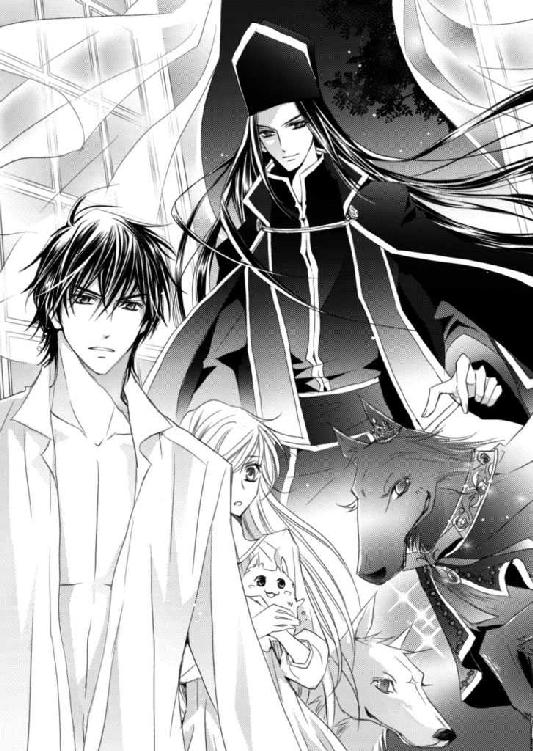
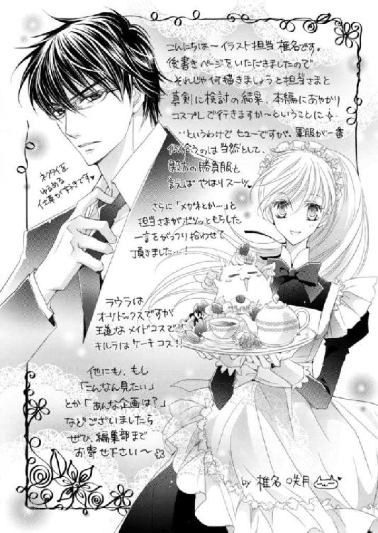

| ダブル・コントラクト3 秘密がつげる初蜜夜!? (ビーズログ文庫) | |
| 香月 沙耶 | |
| エンターブレイン (2012) | |
本作品の全部または一部を無断で複製、転載、配信、送信したり、ホームページ上に転載することを禁止します。また、本作品の内容を無断で改変、改ざん等を行うことも禁止します。
購入時にご承諾いただいた規約により、有償・無償にかかわらず本作品を第三者に譲渡することはできません。
本作品は、底本の表現や演出を考慮して本文縦組で制作しております。また一部のページを改変しております。ごらんになるリーディングシステムにより、表示の差が認められることがあります。

繰り返される音は厳かに低く、ユリシーズの胸底に、確かな重みを持って落ちてくる。
リリエンタールの花びらが雫を受けて、ふわりと揺れた。
ユリシーズは、伏せていた視線をゆるりと上げた。
黒雲が思いも寄らぬ速さで、青空を覆ってゆく。
そう時を待たず、ぬるま湯のような雨が、この地を濡らすだろう。
だがユリシーズは、その場から動かなかった。
ユリシーズだけではない。
その場にいた誰もが、微動だにしない。
やがて降りだした雨は、花に、黒衣のひとびとの肩に、静かに降り注ぐ。
――涙雨、か。
天から落ちてくる水音にそっと添うように、鎮魂の鐘の音が響く――。ラウラ・ファウベルは夢を見ていた。
夢の中のラウラは幼く、五、六歳程度だろう。その頃から伸ばしはじめた髪は、肩ほどくらいの長さしかない。
お母さん、お母さん。
ラウラは母を呼んだ。
ふんわりとやわらかく膨らんだプラチナブロンド、希少な翠藍石を嵌め込んだかのような、神秘的な瞳。
姉のクロエは顔立ちと髪の色を、そして妹のラウラは瞳の色を、母から受け継いでいる。
母は、娘も持つ美しい色の双眸を細めて、もう眠りなさいな、ラウラ、と言い、ふわりと微笑んだ。
――やさしいかいなにいだかれて ねむれ わがこよ いとしごよ
――おおきなまなこを さあ とじて たのしいゆめへと むかいましょう
母の子守唄は、いつもちょっとだけ音程が外れる。だが声はとっても優しくて、ラウラはふふ、と笑った。
眠くないの。だからお母さん、お話ししましょう。
なんのお話がしたいの？
あのね、お母さんは、どうしてお父さんとけっこんしたの？
子どもだったら、大抵一度は両親に訊ねたことのある問いに対し、返ってくる答えはさまざまだろう。
お父さんのことが大好きだからよ、とか、けっこんしてって、いっしょうけんめいお父さんにお願いされたからよ、とか。
中にはもっとロマンティックなもの、あるいは現実的な答えもあるだろうか。
ラウラの問いを受けて、母はきょとんと目を見開くが、すぐに口元をほころばせた。
あのねえ、......からよ。
え、聞こえなかったわ。お母さん、もう一度言って？
母の笑顔は目の前にあって、こんなに近くにいるのに、声がちっとも聞こえてこない。
お母さん？
はっきり見えていたはずの母の顔が、水底に沈んでいくように、次第にぼんやりとあやふやになっていく。
伸ばしたラウラの小さな手は、だが母を捕まえることができなかった。
夢と現の狭間で、母の声が聞こえた。
「ラウラ、好きなひとができたの？」
それは、いたずらっぽくて、それでいて蜜菓子のように甘い声音で、ラウラの耳をふわふわとくすぐった――。
昨夜なかなか寝付けなかったため、今朝は少々寝不足気味のようだ。
ラウラはあふ、とあくびをしながら、ベッド脇に置かれたチェストから着替えを取り出す。
――お母さん、久しぶりに夢に出てきてくれたなあ。
目覚める直前に見た夢をもう一度思い出そうと、静かに目を伏せると、すーぴーと吞気な寝息が聞こえた。
ベッドの上には、ラウラの大切な誓約のヴァハラ――キルラ‐キルレ‐キロルが、小さな四肢を目いっぱい伸ばした形で眠っている。
ごちそうを食べる夢でも見ているのか、口元をもぐもぐさせていて、その愛らしい様子に、ラウラの唇には、自然と笑みが浮かんだ。
身支度を整えると、キルラを起こさないよう、そろりと小さな角の間を撫でてから、ラウラは衝立に手を伸ばした。
ラウラが休むベッドは、身の丈を超える高さの衝立でぐるりと囲まれている。
余裕を持って立てられているが、少々の圧迫感は否めない。それでも、この状態にももうすっかり慣れた。
音を立てないよう気をつけながら、つづら折りの衝立の一折を畳んだ。
「将軍？」
即席に設えられた寝室から一歩出たところで目に入ったのは、衝立に軽く背を預けるようにして立っていた男――ヒューバート・ガーディナーの姿だった。
腕を組んだ状態で目を閉じていたヒューバートは、ラウラの声に瞼を上げた。
紺碧色をした切れ長の瞳は一度瞬きをすると、ラウラへと流れてくる。その目を見るなり、ラウラの鼓動がひとつ、ポン、と跳ね上がった。
――起き抜けにこの顔は、ホントに心臓に悪いなあ。
静謐に整ったヒューバートの眼差しは、まるで心を射抜く凶器のようだ。
真っ直ぐに注がれると、どんどん鼓動が速度を増してきてしまう。
もう二十ツ日以上、離れることなくずっと行動をともにしているのだから、少しくらいは見慣れてもいいのに。
変わらず慣れない反応をする自身に、小さなため息が零れ落ちる。
だがそれも仕方がない。
相手は、国内では知らない者がいないほどの有名人であり、主に女性に大人気のロレンシア王国の英雄なのだから。
「――おはよう」
ふたりの間に落ちたヒューバートの声はいつもどおり......というより、いつも以上に抑揚がなくて、それがちょっとだけラウラの心に引っ掛かる。
よくよく目を凝らせば、彼の下瞼にはうっすらと疲労が滲んでいる――ように見える。
徹夜でお仕事をしていたのかしらと疑問に思いながら、ラウラもまた挨拶を返した。
「おはようございます。ええと将軍、ひとつ伺っても？」
構わないとうなずいた英雄将軍に、ラウラは首を傾げつつ問うた。
「あの、何をしていたんですか？」
ラウラの前に立つヒューバートは、きっちり軍服を着込んでいる。
軍人であるヒューバートは、外出時には必ず軍服を着用しているが、自室の、しかも起床したばかりであろうこの時間帯から着ているのは、ラウラの目には少々奇異に映った。
「おまえが起きるのを待っていた」
「わたし。......あっ、もう出掛けるんですか!?」
寝坊はしていないはずだが、何か、緊急の知らせが入ったのかもしれない。
正式階級は『少将』、通称将軍と呼ばれているヒューバートが所属する『外れ部隊』こと『王仕隊』のメンバーは、通常の軍人とは違う。
『王仕隊』は、王及び軍のトップであるミルドレッド・ロレンシア元帥の命にのみ従う。
それに伴い、軍務もほかの軍人たちのそれとはかなり異なるようだ。現に、毎日同じ刻限に起きて軍部に顔を出す、ということもない。
ラウラは軍人ではないが、とある事情からヒューバートと離れられない生活を送っていた。そのため、ヒューバートが外出する場合は、ラウラもついていかなければならないし、その逆も――これはあんまりないことだが――しかり。
「ちょっと待っててくださいね。支度しますから」
まずは顔を洗って、それから下ろしたままの髪を結って、軍服に着替え直さなければと、急ぎ洗面室へと向かいかける。だが三歩進んだところで、待て、とばかりに左手首が引かれた。
「え」
不意をつかれて、ラウラは背後に倒れ、硬い感触に抱き留められた。
慌てて振り返ろうとし......だがそこで、己の左手首に巻きつく金色の鎖の存在に気づく。
「鎖!?」
てっきりヒューバートに引っ張られたのかと思っていたのだが、ラウラと英雄将軍を繫ぐ、やっかいな誓約の鎖が出現していた。
ラウラとヒューバートが離れられない原因はこれ――誓約の鎖だ。
ことの起こりは二十ツ日ほど......正確に言えば、二十二ツ日前。
ラウラは切羽詰まった事情から、ヴァハラ獣界に住まう神の遣いとも呼ばれるヴァハラ召喚の儀に臨んだ。
儀式は成功し、待望のヴァハラと誓約したラウラだったが、そこに飛び込んできたヒューバートが、自らも誓約を望んだ。
誓約者と誓約のヴァハラは一対一だと、ラウラは毅然と首を横に振った。
ところが、ラウラの誓約のヴァハラであるキルラ‐キルレ‐キロルは、「よいぞ！」と簡単にうなずくと、ヒューバートとも誓約してしまったのだ。
かくして前代未聞の二重誓約が成立したのだが、ここで大きな問題が起こった。
誓約の鎖とは、本来誓約者とそのヴァハラを繫ぐものだ。ところがどういうことか、この鎖が、ラウラとヒューバートまで繫いでしまった。
互いが離れると金色の鎖が出現し、無理やり引き寄せられるという、とんでもない事態に陥った。
さらに厄介なことに、この誓約の鎖、一定の距離で出現するわけではない。
五十ガラン（歩数にして五十歩程度）離れてもまったく反応しない時もあれば、今のように数ガラン離れただけで出る時もあるのだから、非常に始末が悪い。
そうして引き寄せられる時は大抵こうやって最接近、密着する形になる。
そんな事情から、ラウラは、常にドキドキハラハラな生活を送る羽目に陥っている――というわけだった。
「ありがとうございます、将軍」
振り返れば、頭半分ほど背の高いヒューバートと間近に視線が合った。
普段のヒューバートだったなら、ラウラの礼に、軽く首を振っただろう。ところが今朝は、その澄んだ紺碧色の瞳でまじまじと見据えてくるばかりで、ラウラの胸に戸惑いが広がっていく。
いくら無口だからといって、礼に対して何も反応しないのは珍しい。しかもどういうわけか、ヒューバートの視線は新種の生物にでも出くわしたかのような色を帯びていた。
「な、......え、なんです？」
なんだってそんな目をしているのと、ひどく落ち着かない気分になる。
「将軍？ ......ガーディナー将軍！」
まさか立ったまま目を開けて眠っているんじゃないでしょうねと、返事をしないヒューバートを大きな声で呼んだ。
ふっ、と我に返ったように、ヒューバートは瞬きをひとつした。
「――なんだ？」
「なんだ、じゃないです、ていうか、訊きたいのはこっちですよ。どうしたんですか？ どこかへ出掛けるんじゃないんですか？」
「いや、今日は外出の予定はない」
「そう、ですか？」
では、やはり昨夜から寝ずに仕事をしていたのだろうか。だがもうひとつ、疑問が残る。
「じゃあ、わたしを待っていた、というのは？」
ヒューバートがその問いに、微かに言いよどむ気配を感じた。
その反応に、ラウラは、あ、と小さく呟いた。
「もしかして、わたしが寝ている間に、鎖が出現したんですか？」
ヒューバートは無言だった。――つまりそれで正解なのだろう。
「起こしてくださってよかったのに」
己が吞気に眠っている間、鎖が出現したことで、ヒューバートが一晩中立ったまま、横になれなかったのだとしたら、ラウラはそちらの方が辛い。
「あ、だから調子が悪くなったんじゃ......」
ヒューバートの反応がいまいち薄いのは、熱でもあるのではないか。
心配になって、ラウラはヒューバートの額に掌を押し当てた。
「熱はないですね、よかっ、た......あの、将軍？」
額に手を置いたまま、ヒューバートを覗き込む。
――顔はいつもと同じ、無表情だけど。......なんだろう、まるで彫像みたいな？ 息、していないみたい......。
ヒューバートはいつだって背筋をぴんと伸ばし、隙のない佇まいをしている。が、今だったらラウラの細腕での攻撃も、ヒューバートに命中しそうだった。
要するに。
――隙、だらけ。
そんなことを考えていたラウラこそ、隙だらけだったのだろう。気がついたら、己の手はヒューバートの長い指に拘束されていた。
「あ」
「細い、な」
「は？ あ、手、手首がですか？ なんか前にも別のところをそう言われたような覚えがありますけど、それが何か」
ないものねだりと言われるかもしれないが、縦にばかり伸びた、男装が似合ってしまう己の体形をラウラは気にしていたから、ヒューバートの呟きはあまり聞きたい単語ではなかった。
だがラウラの声は届かなかったのか、ヒューバートは手首ばかりか、肩にまで手を伸ばしてきた。肩口から薄い肩を撫でられる。
「将軍、あの、何を？」
二度目の問いにもヒューバートは無言のままで、今度はラウラの背中に触れてくる。掌はラウラの長い髪を潜ると背骨を辿るように下方へと移動し、再び首筋にまでやってきた。
掌はあくまでも優しい力加減で、決してラウラを傷つけるものではなかったけれど、わけもわからず、何かを確かめるように触られるのは居心地が悪い。
それだけでなく、いや、それ以上に、ヒューバートの様子がおかしいのは、体調不良だからではないか、という不安もあった。
ラウラはぐいと胸を押すと、つま先立ちになってヒューバートを間近に覗き込んだ。
「わたしの声、聞こえていますか、ヒューバート・ガーディナー将軍！」
敢えてフルネームで呼んでみたら、今まさに夢から覚めましたというような顔をしたうえで、一歩背後に退こうとするものだから、ラウラは彼の胸に置いた両手で、軍服を握り込んだ。
「ちゃんとわたしの声を聞いてください。どこか痛いとか辛いとか、眠い、でもいいですけど、体調がすぐれないってことはないですか？」
心配しているんです、と口には出さず目で訴える。ところがヒューバートは、またしてもラウラの問いに答えてくれなかった。
「名前」
「......はい？」
「おまえの声で、姓ではなく名を呼ばれるのはいいと思った」
「は？」
「もう一度聞きたい」
ラウラの頰は、みるみるうちに真っ赤になった。
羞恥からではない、ラウラの胸に宿ったのは怒りだ。
「ひとが心配しているのに何が名前ですか！」
もう知りません、とラウラはヒューバートから距離を取ろうと踵を返した――が、すっかり忘れていた誓約の鎖が、左手首をくん、と引っ張ったから、うー、とラウラは小さく唸った。
――まだ、消えてなかったんだ。
昨夜と同じだ。
以前だったら、一旦近づいたら誓約の鎖は消えていたのに、昨夜からどういうわけか、互いが触れ合っていても消失しない。
どうなっちゃったんだろう、とラウラは唇の内側を嚙みながら、左手首を見下ろした。
「すまなかった」
背を向けてうつむくラウラを、ヒューバートの長い腕がそっと包み込んでくる。
顔は見えないから声音で推測するしかないのに、ヒューバートの謝罪の声はやっぱり平坦で、本気で謝っているのか、ラウラには判断がつかない。
「......具合が悪いっていうわけじゃないんですね？」
ああ、と今度こそ返事をもらえた。
怒らせていた肩から、ふっと力を抜く。
「だったら、よかったです」
ヒューバートの反応に違和感を覚えるけれど、元気ならばいいと、ひとつ息をついたラウラは、ふたりを繫ぐ鎖を見下ろした。
「それにしても、鎖、なんで消えないんでしょう」
ミルドレッド元帥の自城である、シェイン城から帰宅した昨夜――。
ヒューバートの提案で、誓約の鎖が出る実験をおこなったのだが、鎖はいつもと違う出現の仕方をした。
普段はふたりが離れた時に出るのに、ラウラがヒューバートに近づいているにもかかわらず、鎖が出現したのだ。
密着していても、鎖はなかなか消えなかった。ちょうど今のように。
どれくらい、抱きしめられていただろうか。
軍服越しでは、ヒューバートの鼓動は聞こえない。それでも、背中と腰に回った掌の温かさと、時折耳に触れるヒューバートの呼気の熱さは感じることができた。
その時の、ヒューバートからもたらされたあえかな熱を思い出すと、意識する間もなく、目の縁がほんのり火照る。
ずっとそばにいたい、大切なひと。
シェイン城でラウラは、ヒューバートがただの憧れの英雄将軍ではないことを自覚した。
それはラウラにとっては大事な自覚であったが、だからといって、ヒューバートと今以上近づきたいとか、特別に思ってほしいとか、そういう欲を抱いたわけではなかった。
それまであやふやだった自分の想いがほんのり明確になったこと、それだけでラウラは、一段落ついたような気持ちになっていたのだ。
だからこの気持ちがどう発展していくのか、発展させたいのか、先のことを考える余裕はなかった。
けれど......。
今日、ヴァハラの王であるサクリクスが、ヒューバートとキルラの誓約の鎖を解除したら、こんなふうに一緒にはいられない。
こうやってそばにいるわけにはいかないのだ。
――鎖が消えても、わたしたちはこうしていられるんだろうか。
そして離れてしまったら、自分はこんなふうに悠長にしていられるだろうか。
ラウラは小さく息をつくと、鎖越しにヒューバートの手首をそっと撫でた。
「もーしもーしオレらの大切な誓約者さーん、そーろそろオレたち口を挟んでもいいでしょうかねー」
「わーれははーらがへったのじゃー」
妙な節をつけ、間延びした調子で声をかけられ、それが本当にびっくりしたものだから、ラウラはひゅっと肩を波立たせた。
「サ、サクリクスさ、キルラ......！」
慌てて声のした方を見ると、ヒューバートの誓約のヴァハラであるヴァハラの王、サクリクスと、その養い子キルラが、にまにまと意味深な視線をラウラたちに注いでいた。いったいいつからそこにいたの、とラウラが絶句していると、
「やあ、仲がいいっていいことだなあ。美しい！」
「ラウラとヒューバートは我の誓約者なのじゃから美しいのはもちろんじゃが、とりあえず我は腹が減ったのじゃ。ラウラ、イチャイチャは朝餉のあとにするがよいぞ」
「はっ？ イ......し、してないよしてないって！」
「うむ？ 我の目にはヒューバートがラウラを抱きしめているように見えるのじゃが、それはイチャイチャではないのか？ ふーたりのせーかいーというのではないのかのう？」
「ふたりの世界じゃないですから......！」
キルラはきょとんと首を傾げ、だがすぐに半眼となってサクリクスを睨みつける。
「バカ王、貴様我に間違った知識を与えんとしたな！」
噓はいかんぞ！ とキルラはサクリクスの頭をポカポカする。サクリクスは大げさに痛がりながらも、口元が笑っていた。
養い子を溺愛する、デレデレ養い親という感じだ。
「や、だからねキルラ、前提が間違ってるんだってば。誓約の鎖が出ただけだよ」
ほら、と、ヒューバートとラウラを繫ぐ金色の鎖を指し示す。
「ないぞ？」
「え」
自分たちの手首を慌てて見れば、確かにキルラが言うように、すでに鎖は消えていた。
「あ、あれ？」
いつの間に消えたんだろうかと首を傾げていると、キルラを背に載せたまま、サクリクスがこちらへと歩んできた。
「鎖が出ていたのかい、ラウラちゃん」
「え、ええ。それが、いつまでも消えなくて」
「ふーん」
まるで検分するように、サクリクスはふたりの手首に鼻を寄せた。
「まったく気まぐれな誓約の鎖だな。これでヒューとラウラちゃんの相性が悪かったらと思うと、ちょっとゾッとするぞ」
「ラウラとヒューバートは我の一番目と二番目なのじゃから、相性はばっちりじゃ！」
「や、そう断言するのはどうかな......」
「なあヒュー、おまえ、誓約の鎖で繫がれたのがブルーノじいちゃんみたいなヤツだったらどうよ？」
サクリクスのからかい混じりの問いを、ヒューバートは生真面目にも律儀に想像してみたのか、ほんのりうっすらと、眉間にしわを寄せた。
――あ、ちょっと嫌そう。
あからさまではないが、ヒューバートが、それは勘弁してくれと言っているように見えて、英雄将軍にも苦手なものがあるんだなあ、とラウラはちょっとだけおかしくなる。
「それに比べりゃラウラちゃんは理想じゃね？ 無口で無愛想でぶっきらぼうで不言実行ばく進男のおまえに呆れずキレず無視せず、ちゃんと付き合ってくれるんだからさあ」
しかも可愛いしな、と言われ慣れていない単語で褒められて、頰に血の気がのぼった。
「――サクリクス」
だが次に聞こえてきたヒューバートの声は低く、何かを警戒しているようだった。
「ん？」
「おまえ、何が言いたい」
抑揚のない声で問うたヒューバートとサクリクスの視線が、真っ向から絡み合った。
「何、って？」
「俺が訊いている。答えるのはおまえだ」
見合っていた時間は、さほど長くはなかった。
己の誓約者から目を逸らした次の瞬間、サクリクスはいきなりその場に伏せをしたかと思うと、ゴリゴリと床に頭をこすりつけたのだ。
ヴァハラ流土下座かと戸惑うほど、床に這いつくばるサクリクスに、ラウラはもちろん、その場にいた全員が驚き、呆気に取られた。
それぞれが、床に伏せたサクリクスを上から覗く。
サクリクスは、視線をこちらに寄越さないまま、何事か呟いた。
「え、なんです？」
サクリクスは勢いよく顔を上げると、ラウラに迫った。
「すまん、ラウラちゃん！ このサクリクス、ヴァハラの王として、そしてキルキルの養い親として、心からお詫びする。オレ、ヒューとキルキルの誓約解除、できません！」
「え――」
サクリクスの衝撃の告白に、ラウラは大きく目を瞠った。ヴァハラ獣界に住まう、神秘の獣、ヴァハラ。
美しい毛並みと、ひとをも凌駕する知恵と能力を持つヴァハラを、ロレンシア国民は神の遣い、あるいは神そのものと崇める。
ヴァハラとの誓約を解除したいと申し出る者は、実はほとんどいない。
それはそうだろう。
ヴァハラの儀を望むのは、ヴァハラを愛し、ヴァハラが欲しいと願う者ばかりだ。しかも儀式は一生に一度と決められているため、やり直しはきかない。
それでも、ごくごく稀に、誓約解除を必要とする者があらわれるのだが、その場合は『オフラ教』へと出向き、教主に願い出ることになる。
『オフラ教』とは、ヴァハラとひとを繫ぐことを命とした教団である。
ヴァハラとの誓約を望む者は、まず『オフラ教』に申請し、月在らずの日と月満ちる日のどちらかに、ヴァハラの儀をおこなう。
サクリクスやミルドレッド元帥曰く、ヴァハラの儀というのは、いわゆる『オフラ教』がヴァハラの神秘性を高めるためにおこなっているそうで、本当はそんな面倒なことなどしなくても大丈夫らしい。
ラウラ自身も、儀式の裏側を垣間見たことがあるから、サクリクスたちの話を聞いても、疑うよりなるほどとうなずいたものだ。
他者が結んだ誓約を解除できるのは、ロレンシア国内に十二ある『オフラ教』教堂の教主と、教団の頂に立つ教尊、そしてヴァハラの王である。
ヒューバートの一番目の誓約のヴァハラ、サクリクスこそ、そのヴァハラの王なのだ。
つまりヴァハラ獣界を統べる最強のヴァハラであり、ほかの獣たちが為し得ないことを、いとも容易くおこなえる。
彼がひと声吠えれば、たとえ数十、数百いようとも、ヴァハラたちはサクリクスを恐れ、脱兎のごとく一目散に逃げてゆく。
同種ばかりではない。ヴァハラ獣界の動物たちは、サクリクスの力を恐れ敬うという。
それだけヴァハラの王は、強大な力を持っているのだ。
「オレさ、とにかく早くこっちに戻って来ようと思って、すぐじじいに訊いたんだが、あのじじい、オレが久しぶりに帰ってきたからとか言って、すんげー雑用押しつけてきたんだよ。で、あっちやこっちのトラブルの一切合財を解決してきやがれ、それが終わらなけりゃ絶対に知恵など授けんぞって脅されて、もー散々こき使われてきたわけ」
ヴァハラ式土下座を済ませたサクリクスは、事の次第を滔々と話しはじめる。
じじいとは、サクリクスの前の前のヴァハラ王で、長老とも呼ばれている。
ちなみにサクリクスがヴァハラ獣界にいない間、キルラはこの長老――キルラはじじと呼んでいる――と暮らしていたのだそうだ。
話の内容から前の前の王である長老は、サクリクスが不在中のヴァハラ獣界を、王の代理として管理しているのではないかとラウラは想像した。
「で、やっとのことで、ヴァハラが複数と誓約した際、その一方を解除する方法を聞き出してきたんだ」
「それはお疲れさまでした」
小さい声ながら労をねぎらうと、サクリクスは嬉しそうに尖った牙を見せながら、ラウラちゃんありがとー、と膝に顎を載せてきた。
「貴様、我のラウラに馴れ馴れしいぞ！」
小さな後ろ肢で蹴りを入れるキルラだったが、まったく効いていないようだ。
「クロエちゃんとは違うけど、ラウラちゃんもふわふわしちゃいそうなくらい、ほんのりいい香りがするね」
と、サクリクスはふんふんと鼻を押しつけてくる。
「そ、そうですか？」
「うん」
キルラのキックを無視して、サクリクスはうっとり目を閉じようとする。だがそんなサクリクスを、容赦なくラウラの膝から叩き落とす手があった。
「うおぅっ！」
不意をつかれて、サクリクスは床に転がる。
「......し、将軍？」
「おお、二番目よくやった！」
「おま、何すんだよ、ヒューッ！」
ひとりと二匹は、サクリクスを落とした手の持ち主に目を向ける。
ラウラなど、びっくりして身体ごとヒューバートに向き直ってしまったくらいだ。
全員の視線を受けるヒューバートは、表向きまったくの無表情だ。
「――話の続きを」
ヒューバートは低く、そうとだけ告げた。
――なんだろう、いつもとおんなじように見えるのに、全然違うひとのような......。
だがヒューバートのどこに違和感を覚えるのか、ラウラには明確にわからないから、それがひどくもどかしい。
ロレンシア王国の王女、ミルドレッドから、ヒューバートのことをよくわかっているなと感心されたことがあった。だが自分など、サクリクスや側近のシド・エリクソン少佐に比べればまだまだだ。
サクリクスはブツブツと不満を口にしていたが、ヒューバートが軽く目を眇めると、わかったよとうなずいた。
「誓約解除方法をじじいに訊いてみたんだが、ええとな、普通の誓約だったら、まったくなんの問題もなく、オレが解除できる。この前誓約解除をした時、オレはちゃんと作法どおりにおこなった。にもかかわらず解除できなかった。ということは、つまり『普通』の誓約解除方法じゃあ、『普通じゃない』今回の誓約は解除できないってことだ」
ラウラは知らず、こくりと息をのんだ。
「それに加えて、――これは完璧にオレの失敗なんだけど、ローデリー地区のオフラ教堂で、オレがヒューと、それからキルキルがラウラちゃんと同調して、手を握った時に、鎖の色が赤でも金でもない色に変わって、力が暴走しちまっただろう？ 覚えてる？」
それぞれが首を縦に振る。
もちろんラウラも覚えている。
ラウラたちファウベル姉妹が世話になっていた、オズウェル・ジェメルが起こした事件のさなかの出来事だ。
忘れるはずもない。
「そん時な、すんげーややこしいことなんだけど、それぞれの誓約が新たに結び直されて繫がっちまったらしい」
「......はい？」
「同調中って、複雑で不安定な状態だからさ、想定外だったり思いもよらぬ反応が起きたりするんだけど、今回の場合は、それが誓約の結び直しだったわけだな」
――誓約が、勝手に結び直されて繫がれてしまった、って......。
その意味がよく理解できなくて、けれど何か、とてつもなくややこしいことになっているというのは想像できてしまい、思わず隣のヒューバートを見上げる。
ヒューバートは何事か考え込んでいるのか、難しい顔をしていた。
「すべての誓約が結び直されたということは、つまり、俺とキルラ‐キルレ‐キロルの誓約解除をするためには、ほかの誓約も解除しなければならないのか？」
「うん、そういうこと」
「将軍とサクリクスさん、それからキルラとわたしの誓約も、ですか？」
「そのとおり。シェイン城の塔で、ラウラちゃんとキルキルの力を借りただろう？ あの時確信した。朱金の鎖が、オレら全員を繫いでいることに」
ラウラはこくりと喉を鳴らした。
「あの、一度誓約解除しても、また誓約をし直すことって、技術的には可能なんですよね？」
混乱する頭の中を必死に整理すれば、ラウラにとって今一番気にかかるのは、キルラとの誓約が反故にされないかということだった。
以前、オズウェルが強引にヴァハラとその誓約者との誓約の鎖を引き千切ってしまったが、オフラ教によってきちんと再誓約したと、ラウラは聞いている。
だがそれは、オズウェルが引き起こした事件があまりにも理不尽なものだったから、特例で再誓約が為されたのではないだろうか。
オフラ教の舞台で為されるヴァハラの儀は、一生に一度。
つまりヴァハラと誓約をするチャンスは、本当はたった一度しか許されていない。
もし、ヒューバートとキルラの誓約を解除するために、自分とキルラの誓約も解除したら、あるいは再誓約はならぬと、オフラ教から待ったがかからないだろうか。
ヴァハラ自身やヴァハラの儀、それからオフラ教に関して、ラウラが知っていることはごくわずかだ。だが誓約者になったことで、以前より少しだけ知識が増えた。
実のところ、儀式をおこなわなくてもヴァハラと誓約ができるし、ヴァハラがオフラ教堂以外の場所から人界へやって来られることも、今のラウラは知っている。
恐らくヴァハラとの誓約だって、隠されていることがいろいろあるのだろう。
「技術的にはまったく問題ない。再誓約は、互いが望んでいれば可能だよ」
技術的には可能――。けれど特例でもない限り、オフラ教は再誓約を認めてくれないかもしれない。
ふと、ローデリー地区オフラ教教主、ユリシーズを思い出す。
あの美しい教主は、半端な覚悟でヴァハラの誓約者となることを、厳しく厭うていた。
そのため、彼がローデリー地区の教主となってから、ヴァハラの儀が成功する確率は、ずいぶん下がってしまったという。
だがそれも、ヴァハラを愛するがゆえ、ろくでもない人物に、ヴァハラを渡さないがため、だ。
ラウラをヴァハラの誓約者として認めてくれたユリシーズは、今の話を聞いて、再誓約を許すだろうか。
否、と首を横に振りはしないか。
ラウラにとって、キルラはもはや自分の一部のようなものだ。
離れるなんて、考えたくもない。
とすれば、ラウラの倫理観から非常に外れるおこないだが、オフラ教には知らせず、独断でした方がいいのだろうか。
「でもね、ごめんラウラちゃん。ヴァハラの王といえど、オレ、誓約解除は一度にひと組しかできないんだよ。ていうか、ひと組しかできないことを、ついこの前知ったっていうか」
言いながら、サクリクスはしょんぼりして、うつむいてしまう。
「あ」
そういうことか、とラウラは密やかに息をついた。
ひと組だけ誓約解除をしようものなら、この前のように鎖が出現して、互いの身体をグルグル巻きにしてしまうのだろう。
ヒューバートとサクリクス、ヒューバートとキルラ、そしてキルラとラウラ、この三つの誓約解除は、同時におこなわなければならない。つまり、少なくとも三人、誓約解除ができるひともしくはヴァハラがいなければならない、――ということか。
ラウラは頭痛を覚えたように、掌で額を押さえた。
――それは、ものすごく難しい、よね......。
オフラ教に頼むのもリスクがある。再誓約は却下されるかもしれないからだ。
もし仮に許されたとしても、サクリクスと教主のふたりでは、ひとり足りない。
ヴァハラの王でもひと組の解除が限界なのだ。教主が複数の誓約を同時に解除できる術を持っているとは考えにくい。
他地区の教主を呼ぼうにも、教主は基本的に、自身に任された教堂からは出られないとユリシーズは言っていた。
今回の誓約解除のためだけに、その教義を曲げることはできないはずだ。
――ううう、どうしたらいいの......。
考えをまとめるために伏せていた視線を上げたその先で、キルラの白くて丸くて小さな体軀が震えていることに気づいた。
「キルラ？」
声をかけた途端、キルラがいきなりぽろぽろと大粒の涙を零したものだから、ラウラは仰天してしまう。
「キルキル？ お、おい？」
「キ、キルラ？ え、どうしたの？ どこか痛いの？」
サクリクスがうろたえ、ラウラもまたあわあわしながら、キルラを胸に抱き寄せる。
「キルラ？」
「わ、我のせいか？」
「え？」
「先刻バカ王が、我の養い親として詫びると申した。バカ王が謝ったのは、我が誓約のことを知らずに一番目と二番目と誓約してしもて、それが解除できんから、今ラウラもヒューバートも困っているということじゃろう？」
「えっと、えーと、それは、だってキルラは知らなかったんだし」
「そうそうそう、ラウラちゃんの言うとおり！」
「......やっぱり我のせいじゃあぁぁぁ」
そう叫びながら、おいおい泣きはじめてしまったから、ラウラもサクリクスも、すっかりうろたえてしまった。
大丈夫よとかおまえが泣くことじゃないとか、少しも建設的ではない慰めは、キルラの求めるものではないようだ。ラウラのヴァハラは、さらに声をあげて泣きじゃくる。
「我はどうすればいいのじゃあ」
「自分にできることをすればいい」
それまで黙っていたヒューバートが、静かに告げた。
「うっぇっ？」
涙まみれの顔を上げたキルラが、ヒューバートをそろりと振り返る。
「おまえが俺と誓約してくれて、俺は感謝している。ラウラ・ファウベルとおまえは、命の恩人だ」
「......」
「おまえがいなければ、そしてラウラ・ファウベルの協力がなければ、サクリクスは俺のもとへ戻ってこなかったかもしれない」
ヒューバートは節の目立つ長い指を伸ばしてきた。指先でキルラの涙を拭う。
小さくしゃくり上げながら、キルラは首を傾げた。
「我が、いなければ？」
ああ、とヒューバートはうなずく。
「あらためて礼を言う。キルラ‐キルレ‐キロル、ラウラ、ありがとう」
ヒューバートは、普段は絶対に聞けない、ものやわらかな声でそう告げた。そしてそうとわかるほどの笑みを浮かべ、涙と鼻水でくしゃくしゃのキルラの顔を優しくこすった。
その笑みを間近で見る羽目になったラウラは、その場に座り込みそうになる。
――こ、腰から力が抜ける......。
ヒューバートの微笑は、本人が意図したものでもそうでないものでも、破壊力抜群で、勝手に胸の鼓動が速度を増していく。
しかも、礼を言われた。
命の恩人だ、と。
名前を――いつも『ラウラ・ファウベル』と呼んでいたのに、こんな時に名前だけを呼ぶなんて。
先刻ヒューバートが、「名前で呼ばれるのもいい」と言った意味を、ラウラ自身図らずも体験することになる。
――将軍、そんなふうに思っていたなんて。
まったく想像もしていなかったし、その気持ちを、口の重い英雄将軍から聞かされるとは、もっと思っていなかった。
そのうえでの、笑顔、そして名前呼びだ。
ラウラだけに向けられた感謝ではないけれど、胸がいっぱいになって、息苦しささえ覚える。
「せ、誓約解除、できないのじゃぞ。そうしたら一番目も二番目も、すごく困るのじゃろう？」
キルラはヒューバートに、次いでラウラに、涙で潤んだ黒くて丸い目を向けてくる。
そうだ。そうなのだ。
ヒューバートのそばにいたい、その願いはラウラの胸の内で、日を追うごとに少しずつ膨らんでいる。
誓約の絆が消失したら、こんなふうに近くにはいられない。
今の生活は不便極まりない。それでも、ふたりを繫ぐこの誓約の鎖がなくなった時、ラウラは安堵するだろうが、同時に、同じくらいさびしいと思ってしまうだろう。
そばにいたいという願いと、そばにいすぎて苦しい気持ちと、膨らんでいくヒューバートへの想いと、戸惑い。
それらの気持ちのひとつひとつは、確かに自分のものなのに、それぞれが別の方向に矢印を出していて、上手にひとつにまとまってくれない。
キルラの疑問を受けて、ヒューバートは軽く口を噤んだが、黙り込みはしなかった。
「現時点では方法がないかもしれない。だが探せばいい案が出てくるかもしれない」
「......じじがムリじゃとゆうたのじゃぞ？ じじは生き字引のようなヴァハラで、じじが知らぬことなどこの世にはひとつもないと言われておるのじゃ」
「サクリクスさんだけではこの誓約解除ができないということだけど、前の前の王様は、ムリとはおっしゃっていませんよね？」
「うんそうラウラちゃん、ナイスフォロー。オレ的にそれはちょっと認めたくないけど、イイ男はいっこくらい欠点があった方が女子にモテるもんな」
後半は私情が垣間見えた発言だが、サクリクスに否定されて、キルラは養い親を見下ろした。
「......つまり王でありながら貴様が力不足だから、誓約解除ができないというわけか？」
「うっ？ ええと、そう言われるとなんかオレ、すっげヘタレ王っぽくね？」
だがここで否定すれば、またキルラに号泣されると思ったのか、サクリクスは不服そうにしながらも、それ以上の反論は口にしなかった。
ため息をつくと、サクリクスは渋々というようにうなずいてみせた。
「ああ、もうヘタレ王でいいよ。オレの力だけじゃ、この誓約を解除できないってのは確かだからな。だけど、ヒューの言うとおりだ。今は解除方法がわからないが、それはこれから見つければいい」
ヴァハラの王は、きっぱりとそう言う。
その言葉を受けてキルラは安堵したように、そうかとうなずく。
密かにほっと息をつくと、キルラが腕の中でくるりとラウラの方へと向き直った。
「ん？」
「あのなあラウラ。前にスイカレンカの爪に引っかけられて、湖に落ちる直前に、誓約の鎖が出たじゃろう？」
何を言うのだろうと戸惑いながらもうなずく。
「あの時なあ、鎖で引っ張られる時、ラウラはいつもあんな痛みを我慢しているんだと初めて知ったのじゃ。あんまり痛かったから、咄嗟に宙に浮かぶこともできんかった。......あれは痛いのう」
すまなかったのじゃ、とキルラは頭を下げた。
――だから誓約解除ができないことで、泣いちゃったの？
キルラ自身はヒューバートとの誓約解除を望んでいなかった。だが誓約――その鎖のせいで、ラウラが痛い思いをするのだと身をもって知ったことで、自分の気持ちに蓋をして、誓約解除をのんだのだろう。
キルラが他者を思いやれる優しいヴァハラであることが嬉しくて、ラウラは微笑んだ。
「さっきね、将軍が言ったでしょう？ キルラが誓約してくれて感謝しているって」
「う、うむ」
「わたしもよ。キルラ、わたしの誓約のヴァハラになってくれてありがとう」
大好き、とラウラは腕にきゅっと力を込めて、キルラを抱きしめた。
キルラはふにゅんと相好を崩し、我も大好きじゃと頰にすり寄ってくる。
「キルキルがラウラちゃんにくっつくのは許せるわけかよ、ヒュー？」
頰をくっつけ合いながら笑みを交わすラウラとキルラのそばで、サクリクスがぼそりと呟いた。
「......キルラ‐キルレ‐キロルは俺とラウラの誓約のヴァハラだ」
へーふーん、とサクリクスは半眼だ。
「将軍、サクリクスさん、何話していらっしゃるんですか？」
「なんでもないよラウラちゃん。あのさ、まずはオフラ教に、手伝ってもらえるか確認しに行ってみようか」
「オフラ教で誓約解除できたとしても、再誓約はしてもらえないかもしれません」
ラウラが不安を口にすると、サクリクスはにんまりと目を細めた。
「そしたらこっそりオレたちだけで再誓約しちゃえばいいし」
「......へ？」
サクリクスは、獣とは思えないほど器用にウィンクをしてみせる。
「だってオレはヴァハラの王だからさー、ヴァハラの掟は大切だけどー、オフラ教の教えはかーんけいないさー」
また妙な節をつけてサクリクスが言うものだから、ラウラは呆気に取られた。
だがサクリクスの言い分がじわじわと脳に到達し、次の瞬間、思いきり噴き出した。
「それは......っ、そう、ですけど......！」
「間ぁ抜けな王じゃがのー」
涙がひいたキルラは、すっかりいつもの調子だ。
笑いながら、ラウラは、ああ、なんかこういうのいいなあ、と思った。
こうして、ヒューバートとキルラとサクリクスと、ずっと一緒にいられたらいいのにと、ラウラは密かに願った。
だが自分たちは血の繫がった家族ではない。
確固たる繫がりといえば――誓約の鎖だけ。
――わたし、このままでいたいって、どんどん思いはじめている。
現実的に無視できない不便さや都合の悪いことは確かにあるのに、そのことに目をつぶって、ままごとのような、おとぎ話のような、そんなふんわりとした日々がずっと続いていってほしいと、願ってしまいそうになる。
「じゃあ今日あたり行こうか？」
その前に飯だなーとサクリクスが先に歩きだした。
「我はもう腹ぺこじゃあ」
「待たせちゃったね」
キルラを抱いてソファから立ち上がり、部屋を出ようとしたラウラだったが、その場に留まるヒューバートに気づいて、踵を返した。
「ガーディナー将軍？」
ヒューバートは何事か考えていたのか、ラウラの声で、ふと我に返ったようだ。
「二番目、朝餉じゃ。早く来るがよいぞ！」
うなずいたヒューバートは、ラウラに並んだ。
「おまえを自由にする機会がまた延びた」
ヒューバートは前を向いたまま、低くそう言った。
「う。......ガーディナー将軍のお仕事の邪魔にならなければいいんですけど」
その言葉が、ヒューバートの心のどこに触れたのかラウラにはわからない。ただ前に視線を据えていたヒューバートが、軽く息をつきながら、ラウラを見下ろしてきた。
「おまえは本当に、他人のことばかり気にかける」
その声に抑揚はなかったが、なにがしか、ヒューバートの感情が透けて聞こえた。それがあまり嬉しい感情ではないように思えて、ラウラはドキリとする。
「他人ではないぞ。我らは家族じゃ」
言葉をそのまま受け取ったキルラが、そう口を挟んできた。
「のうラウラ、そうじゃろう？」
「え、っと、うん、そうだね」
「家族じゃから気持ちを傾けるのは当然なのじゃ。な！」
むふふと笑いながらのセリフは、ラウラの胸をほんのりと温かくしてくれる。
「うん。――だから将軍、もうそういうこと言わないでくださいね」
約束ですよ、と意識していたずらっぽく笑いながら、紺碧色の瞳を覗く。そして相手の反応を待たないまま、ラウラは思いきってヒューバートの軍服の袖を指先で摑んだ。
「わたしもお腹空いちゃいました。早くいただきましょう」
半ば走るように、足を速めると、ヒューバートは引かれるまま一緒に来てくれた。
なんでもないことなのに、ラウラはホッとして、小さく口元を微笑ませた。
◆◆◆
悪天候以外では大抵開かれているオフラ教教堂の扉だったが、今日はどういうことか、固く閉ざされていた。
さらに普段では見られない、繊細な黒いレースリボンと拳大ほどの灰紫色の花が、窓や扉、白い壁や門といったあちこちを彩っている。
「......この飾り」
ラウラは隣に立つヒューバートを見上げた。ヒューバートもまた難しい顔をして、灰紫色の花をじっと見据えていた。
「美しい花と飾りじゃが、なんだかさびしそうに見えるのう」
ラウラの前をふわふわと飛ぶキルラが、花へと顔を寄せた。
花の名はリリエンタールという。
透きとおるような繊細な花びらは、一重のものは六枚、八重は十二枚ある。
弱々しく見えるリリエンタールだが、咲いた花は十ツ日以上も美しい形を保つ。
だがリリエンタールは、人々から敬遠される花だった。
恐ろしい毒や鋭い棘があるわけではない。
リリエンタールが、死者に手向けられる花だからだ。
つまりこの美しい装飾は、オフラ教の関係者が天に召された、という悲しい事実をあらわしていた。
そんな死を連想させる花だが、ラウラはリリエンタールが嫌いではなかった。
花の色が、姉のクロエの、神秘的な瞳のそれとよく似ているからだ。
黒いレースリボンと薄紫色の花の中を進む。
教堂表玄関の、両開きの扉は閉まっていたが、施錠はされていなかった。
扉を開け、教堂へと足を踏み入れる。
「悪いが、しばらく教堂は立ち入り禁止だ。――と言いたいところだが、将軍と娘か」
一歩教堂の中に入ったところで、ラウラは青みを帯びた美しい毛色のヴァハラを見つけた。
「アイネイアスさん、こんにちは」
教主ユリシーズの誓約のヴァハラ、アイネイアスは静かな足取りで近づいてくる。
ヴァハラ式挨拶か、サクリクスとアイネイアスは、鼻の先を互いの首筋に押し当てた。
「娘、姉は元気にしているか？」
「はい。今日も朝から占術館でお仕事です。復調した途端、占ってほしいっていうひとたちが殺到したらしくて、予約がいっぱい入っているって言ってました」
「そういうアイネイアスは少し元気がないのう。どうしたのじゃ？」
キルラに問われたアイネイアスは、深々とため息をつき、切なげに目を伏せた。
「――ユリシーズに置いていかれた」
「ユリシーズ様にって、......え、まさか」
ユリシーズが、この悲しみの装飾の主なのかと、ラウラはサッと頰を強張らせた。
「あ、いや違うぞ娘。生を終えたのは、ジェイラス教尊だ」
「ジェイラス教尊様！」
だがアイネイアスのその言葉にも驚いて、大声をあげてしまった。
「そろそろこの辺りでも噂が出回ると思うが、葬送の儀が終わるまでは内密にな」
葬儀はオフラ教の主だった者たちのみで送られ、その後時期を見て、一般のオフライトたちも参列できる、別離の儀がおこなわれるのだという。
教尊の死は、新教尊の名が発表されるのと同時に伝えられるのだと、アイネイアスが続けた。
「ジェイラスキョウソンサマとは誰のことじゃ？」
「オフラ教で一番偉い方よ、キルラ」
ラウラは目を閉じて、ジェイラス教尊の冥福を祈った。
「まあ、ジェイラス教尊は九十八歳のじいさんで、いわば大往生ってやつだ。きっと今は天上で『いい人生だった』と笑っているだろうさ」
ジェイラス教尊と面識があるのだろう、アイネイアスはそう言って目を細めた。
「つまり美人教主は葬儀に参列中で留守ってことか。久しぶりにあの綺麗な顔を堪能したかったんだがなあ。残念」
「王はいいではないか。美丈夫の将軍と離れずにいられるのだから。俺などもうずっとユリシーズに会っていない」
「ずっとって、おいおい、せいぜい数日程度だろうが」
それくらいガマンしろよお、と宥めるヴァハラの王に、アイネイアスは、キッと目元を鋭く尖らせた。
「四ツ日前にはほんの少ししか会えなかったんだ！ シェイン城を出る時、俺は将軍らには同行せず、先に教堂へと飛んで帰っただろう？」
ラウラたちは揃ってうなずく。
シェイン城でひとびとを騒がせたスイカレンカとエジュウトは、お互い最愛の相手に再会したからか、まるで別人――別生物のように、大層おとなしくなった。
その様子を見たアイネイアスは、少しでも早く戻りたいからと、フックを銜えて籠をぶら下げ、無理やり帰ってしまったのだ。
大変ですから一緒に馬車で帰りませんかと誘ったのだが、アイネイアスはうなずいてはくれなかった。
馬の場合、首都オージアルからローデリーまで二ツ日半から三ツ日はかかるが、ヴァハラの飛行能力ならば半日かからず到着することができる。
アイネイアスは、よほど早く己の誓約者のもとへ帰りたかったのだろう。
「ところがあの二匹をヴァハラ獣界に無事戻した直後に教尊の訃報が届いて、ユリシーズはオージアルに行ってしまったんだから、ほぼ入れ違いだ。シェイン城でのことだってほとんど話せていないんだぞ」
ああ、だからアイネイアスはこんなにも元気がないのだと、ラウラは納得してうなずいた。
ヴァハラとその誓約者の関係はそれぞれだ。
ヒューバートとサクリクスのように、放任しているところもあるだろう。
彼の側近、シド・エリクソンとイムは、ヴァハラの方が、誓約者とは離れるべきではないと考えているし、少佐も手元に置きたがっているように見える。
ユリシーズとアイネイアスの場合は、教主はどちらかといえばヒューバートのように放任傾向だが、ヴァハラの方が、誓約者から離れたがらないタイプだ。
「それは仕方がないだろう。おまえまで教堂を出てしまったら、誰が舞台を見張るんだ」
「......王が代わってくれてもいいんだが」
「なんでオレが入り口の番をしなきゃなんないんだよ」
そんな面倒なことゴメンだとにべもないサクリクスに、アイネイアスは拗ねたようにそっぽを向いた。
「あの、シェイン城に姉と同行してくださって、ありがとうございました」
その節は姉がお世話になりましたとラウラが小さく頭を下げると、アイネイアスは目を逸らしたまま首を横に振った。
「世話というほどのことはしていない。あれはユリシーズに命じられたからやったことだし。......うううぁぁぁっ、これ以上のユリシーズ不足は我慢ならん！」
アイネイアスはいきなり叫ぶと、地団駄を踏んだ。
「ア、アイネイアスさん......」
「その気持ち、よくわかるぞ、ユリシーズのヴァハラよ。我も一番目と二番目、ふたりと離れるのは嫌じゃからな！」
さびしければ我が胸を貸してやろうぞ！
そう言ってキルラは、アイネイアスの顔の前までするすると下りてゆくと、飛び込んでこいとばかりに、両前肢を精いっぱい開いた。
「キ、キルラ、それはちょっと無理じゃあ」
「小さいがおまえはいいヴァハラだな。王よりよほど慈悲深い」
アイネイアスはそう言って、キルラにちょんと鼻先をくっつけた。
「おいおいおい、さり気なくオレ批判をしてんじゃねえよ。ヴァハラ獣界のヤツらがむやみにこっちにやってこないよう、舞台を見張り守るのは、教主とその誓約のヴァハラであるおまえの務めだろうが。押しつけてくんじゃねえ」
「ちょっとくらい代わってくれてもいいじゃないかという愚痴を零しただけだ。別に批判をしたつもりはないし、王が勝手にそう感じただけではないか」
と、あらぬ方を向くアイネイアスの態度にカチンと来たのか、サクリクスは鼻筋にくっきりしわを寄せた。
「はあぁ？ もしかしてオレは今、ケンカを売られてるのか？」
「どうせ暇だ。それも面白い」
「上等だコラァ！ 相手になってやろうじゃねえか！」
「ちょ、ちょっと待ってくださいよ！ サクリクスさんもアイネイアスさんも！」
一気に険悪になって睨み合う二匹の間でオロオロするラウラは、縋るようにヒューバートを見上げた。
「将軍、止めてください！」
「身体を動かせば少しは鬱憤晴らしができるかもしれない」
「そっ、怪我でもしたらどうするんですか」
「二匹とも怪我を負うほど愚かではないだろう」
ヒューバートは完全に傍観する気だ。
ダメだこれはと、ラウラは次いでキルラに視線を向けた。
「キルラ、......って」
「ユリシーズのヴァハラよ、そやつをコテンパンにしてやるのじゃ！」
「えっ、なんで、どうして？ キルキル、オレの応援をするんじゃないのか？」
「なにゆえ我が貴様の応援をせねばならんのじゃ」
サクリクスにだけ冷たい傾向にあるキルラは、あからさまにそっぽを向く。
「ええええ、そんなあ。赤ん坊の頃は、あんなにあんなにオレに懐いていたのになあ。『シャクリクシュ、もっとしょばにおるのじゃ』って舌足らずの甘えた声がめちゃくちゃ可愛くてオレもうメロメロ......って、うおぅっ！」
「むきゃーっ！ 赤仔の頃のことはゆうでない～～～ッッ！」
そう叫びながら、キルラは矢のごとき速さで、サクリクスの頭に見事な飛び蹴りを炸裂させた。
「いてえっ、キルキル、おま、本気で蹴るなよ！」
「貴様が昔のことを持ち出すからじゃろうがっ」
ラウラはハラハラと親子ゲンカを見守っていたが、キルラとなら間違ってもサクリクスも本気にはならないだろうと、怒らせていた肩から力を抜いた。
キルラの方が先にヒートアップしてしまったため、置いてきぼりをくらったアイネイアスはすっかりやる気を削がれたようだ。
キルラとサクリクスのケンカを、呆れたように傍観していた。
「バカらしくなった。将軍、それから娘、今日はどうした？」
「あ、はい、えっと......」
こんなにユリシーズに会いたがっているアイネイアスに、彼の誓約者のことを訊くのははばかられて、ラウラは言葉を濁した。
「ユリシーズか」
「ええと、......はい。誓約のことで、お話を伺えたらと思って来ました」
おずおずとうなずく。
アイネイアスはやわらかく目を細めると、先刻キルラに対してしたように、ラウラの軍服の裾に鼻先を押し当てた。
「娘は優しいな。あの小さいヴァハラは、よき誓約者を得た」
「わたしもキルラの誓約者になれて嬉しいです」
にこりと笑う。その笑顔をじっと見上げたアイネイアスは、軽くうなずいた。
「ユリシーズが戻ってきたら、娘のところへ連絡を入れる。葬儀は今日と聞いているから、最短で三ツ日後、遅ければ十ツ日以上かかるがな。気長に待っていてくれ」
「三ツ日でお戻りになられるかもしれないんですか？」
三ツ日ということは、教尊の葬儀後、すぐに戻ってくる計算だ。
「新教尊の選定会議があるだろう。葬儀のあとは、教主と教主補佐が集まって候補者を立て、次の教尊を協議するのではないか？」
ヒューバートの問いに、アイネイアスは重々しい口調で告げた。
「ユリシーズは教尊候補者となるだろう。候補者は会議には出席せず、一旦担当地区に戻ることになっている」
アイネイアスはそうなることを確信しているかのようだった。
「ユリシーズ様が、教尊候補？」
「ユリシーズは、ジェイラス教尊の考えを受け継いでいる穏健派だからな。恐らくその穏健派から担ぎ出されることになる」
アイネアイスはため息交じりに呟く。
「俺のユリシーズが万人に認められるのは嬉しいが、当の本人はあまり乗り気じゃない。――早く戻ってきてほしいのはやまやまだが、すなわちそれは、ユリシーズが候補者として立つことを意味している。複雑だ」
ユリシーズの心中を慮ってか、アイネイアスは神妙な面持ちだ。
「オフラ教もこれから大変ですね」
「まあ、ユリシーズが教尊になろうが教主のままだろうが、俺の大事な誓約者だってことは変わらないがな」
「はい」
アイネイアスのユリシーズへの揺るぎない親愛の情を感じて、ラウラは微笑んだ。
「ラウラとヒューバートも、我の大事な誓約者じゃぞ」
ケンカにも飽きたのか、キルラが会話に入ってくる。
ラウラの頰にくっついてくるキルラの、ふわふわの毛の感触に目を細めていると、
「羨ましくなるからあんまり俺の前で誓約者と仲良くするな」
そう言って、アイネイアスは拗ねたようにため息をついたのだった。
◆◆◆
レース編みの手を止めて、ラウラはふと窓へと目を向けた。
窓の向こう側には、とっぷりと暮れた夜が広がっている。
露台に続く窓の半分は開けられていて、そこから流れ込んでくる涼やかな風が、湯浴み後の肌に気持ちよかった。
「早くて三ツ日、遅ければ十ツ日、か......」
亡きジェイラス教尊の考えを受け継いでいるというユリシーズは、教尊候補になるのだろうか。
ラウラはジェイラス教尊の姿はおろか、声すら知らないけれど、王族、宮廷、軍部のいずれとも必要以上に親密になるのを極力避け、バランスよく付き合っていた知恵者という噂は聞いている。
だが次の教尊によっては、方向転換もありうるかもしれない。
――軍部の方々と手を結ばれるのは嫌だなあ。
以前サクリクスから聞いた話を思い出す。
昔、軍部の上官全員にヴァハラを宛がうよう、オフラ教に強要したことがあったのだ、と。
ヴァハラを軍事目的に使おうとするなんて、とラウラは憤慨する。
トップたるミルドレッドは、ヴァハラを戦争の道具になど決してしないだろう。だがいくらミルドレッドがそう望んだとしても、ヴァハラの力を使おうとする武人は、きっと出てくるに違いない。
ヴァハラの力は、ひと以上に優れているからだ。
かといって、宮廷人が出張ってきても、それはそれで心配だ。今度はヴァハラを政治に利用するかもしれない。
たとえば友好の印として、外交目的で他国にヴァハラを献上するとか......。
そんなことを考えると、ラウラの力では何もできないのに、そわそわと落ち着かない気持ちになる。
ほかにどんな教尊候補者がいるのかわからないし、難しいこともあるのだろうが、ヴァハラをこのうえなく愛し、誓約者には厳しい目を向けるユリシーズにこそ教尊になってほしいなあと、ラウラはため息を零す。
その時、半分開けていた窓から強い風が吹き込み、レースの窓掛けを大きく膨らませた。
窓掛けの外に、何か影のようなものを見つけて、ラウラはハッと椅子から立ち上がった。
「ヒィィュゥゥさああ～～まぁぁ！」
そろそろ就寝というこの刻限に、大層傍迷惑な大声が部屋中に響き渡る。
そんな声とともに露台から室内に飛び込んできたのは、赤茶と黒い塊だった。
床に敷かれた絨毯を削らんばかりの、凄まじい勢いだ。
黒い塊はひらりと床に着地したが、赤茶の方はといえば上手に止まれず、窓とは逆側にある壁に、大きな音を立ててぶち当たってしまう。
「あうぅっ、イタァ......ッ！」
「......」
「大丈夫ですか、クイン」
「いやん、アタシってば着地失敗！ でもユリーが無事なら万事オッケーよぉ。ユリーったらそんな重い聖衣を着ていながら結構身軽ね」
黒い塊......ではなく、黒衣の男が、すっくと立ち上がった。
男は背筋を伸ばすと、絶句しているラウラの前へと、静かな足取りで歩いてきた。
真っ直ぐに伸びた長い黒髪が、動きに合わせてさらりと揺れる。
精緻な刺繡に彩られた漆黒の聖衣を身に纏う男は、その美麗な面に、やわらかな笑みを浮かべた。
「驚かせてしまい、申し訳ない、ラウラ・ファウベル。少々わけありで、このような訪問となってしまいました」
いえ、と無意識のうちに首を振りつつ、呆然と男を見上げた。
「娘ッ子、元気だったかしら？」
「はぁ、おかげさまで。クインさんもお元気そうですね......」
「もちろん元気よお！ ねえねえ、アナタがつくったこのティアラ、アタシにぴったりって皆から絶賛されているの！」
片方の耳に被せた形のティアラを自慢する、赤茶の塊――ミルドレッド・ロレンシア元帥の誓約のヴァハラ、クインに、ラウラは引きつった笑みを向けた。
「そ、それはよかったです」
「なんと、ユリシーズとクインではないか！」
クインが立てた派手な声と音に、すわ緊急事態かと勘違いしたのか、湯浴み中だったヒューバートとキルラ、サクリクスが、扉を大きく開けて部屋に飛び込んできた。
「おいおい、どうしたってんだ。ずいぶん異色の取り合わせじゃねえか」
「元気じゃったか、ふたりとも！」
「キ、キルラ、ちゃんと拭いてから......！」
白い毛から雫を滴らせながら、窓からの訪問者に突っ込んでいきそうなキルラを、慌てて両手で抱き込んだ。
「きゃぁぁん！ なんて眼福なのぉ。お美しくて色っぽくてカッコよくてステキすぎ......。湯上がりのヒュー様が拝めるなんて、ヴァハラの神様ありがとおお！」
野太い声でハートを飛ばしまくるのは、言わずもがな、クインだ。
ヒューバートは服を身につけているが、羽織ったシャツの肩が、髪から落ちた雫で少し濡れてしまっている。
だがヒューバートは濡れた肩にはまったく構わず、無造作に前髪をかき上げると、ラウラのそばまでやってきた。
ふわり、と湯上がりの温かな気配が、ラウラの肌に触れてくる。
――た、確かに、クインさんの言うとおり、かも。
艶やかな黒髪はしっとり濡れているし、シャツのボタンは嵌められていないし、いつも軍服で隠れている首筋や鎖骨、胸元の辺りまであらわになっていて、男らしくも色っぽいやらいつもと違う魅力満載やらで、目の毒なことこのうえない。
うわうわ、わたし何考えているの、とラウラは真っ赤になってうつむく。
ヒューバートはラウラを隠すように、半歩ほど前に立った。
一瞬、その動きを不審に思ったが、自らの姿を見下ろして、ラウラは首を竦めた。
湯浴みも済ませ、あとはもう休むばかりだったから、薄い寝衣姿だったのだ。
客の目に晒せるような格好ではない。
――は、恥ずかしい......。
ラウラはヒューバートの背中に隠れるよう、そろりと移動した。
「ヒュー様、ご無沙汰しておりますわ！」
「四ツ日前に別れたばかりだろ、クインよー」
「恋する乙女にとって、四ツ日は永遠にも等しい時間ですわ、サクリクス王よ！ こうしてヒュー様に再びまみえることができて、クイン、とっても嬉しゅうございます」
蕩けるように一心にヒューバートを見つめる乙女ヴァハラ・クインは健在だ。
ヒューバートは一度クインに視線を据え、ごく僅かに目を細めることで返事をすると、次いで黒衣の男――ローデリー地区オフラ教教主、ユリシーズに向き直った。
「ガーディナー少将、夜半における不躾な訪問、まずはお詫び申し上げます」
ヒューバートはいや、と首を横に振ると、訪問の意図を問うた。
ユリシーズは懐から、封のされた白い紙をヒューバートへ差し出した。
「ロレンシア元帥からの書状です。どうぞ中を」
ろう付けの上に押印されているのは、確かにロレンシア王家の紋章だ。
ヒューバートは躊躇せず封を破ると、中にあった文字を無言のまま読んだ。
内容は、そう長いものではなかった。
すぐに目を上げ、了解したとうなずいた。
「どうかしたのかい、美人教主さん」
「うむ、我に話してみるがよいぞ」
ミルドレッドの名が出た時点で軍務だろう、と察したため、ラウラは口を挟まなかったが、サクリクスとキルラは興味津々という体だ。
「これよりユリシーズ教主の護衛をする」
「ふーん、護衛ねえ」
「なにゆえユリシーズを護衛しなければならぬのだ？」
もっともな疑問をキルラが口にする。
「それはね、チビッ子。ユリーってばどこの誰ともわからぬ輩に、命を狙われちゃってるからよ」
だからミルに言われて、オージアルからここまで、アタシがユリーを乗っけてきたの。
クインの衝撃的な説明に、ヒューバートと当の本人であるユリシーズ以外の全員が、それぞれ驚きの声をあげた。「じゃ、アタシはアイネイアスちゃんに事の次第を説明してから、ミルのところに戻るから。ユリー、気をつけてね。みんなまたね！」
ヒューバートと別れるのは辛いと散々嘆いたあとでの、クインのほかの者たちへの別れの口上は、ずいぶんとあっさりしたものだった。
クインは、名残惜しそうにヒューバートを振り返りつつも、夜空へと消えていく。
クインを見送ったあとで、ヒューバートは訪問を告げるための小さな鐘を鳴らした。
ボーン、と低い音がする。
扉のベルとは思えない、まるで地の底から響いてくるような陰鬱な音で、胸の内をそわそわと落ち着かなくさせる。
鬱蒼とした薄暗い森にでも迷い込んだかのような錯覚に囚われ、ラウラはそろりと周囲を見回した。
ラウラたちが訪ねたのは、貴族の館だ。本来は広々とした庭が目の前に広がっているのだろうが、光源がほとんどないため、闇夜に沈んで詳細は一切うかがえない。
玄関周辺には、いくつもランタンが据え置かれているものの、その灯りが、どっぷり気分を沈ませるような、澱んだ暗い赤なのだ。
手元がようやく見えるくらいの明るさで、灯りの役目をあまり果たしていない。
――独特っていうか......、ちょ、ちょっと怖いな。
ラウラは最低限の荷物を詰めたバッグの取っ手を、ぎゅっと握りしめる。
目に見えるものや触れるものだったら、ちゃんと対処できるけれど、気配しかないもの、触れないものといった類が、ラウラは大の苦手だった。
もちろんここは普通のお屋敷のはずだし、頼りになるひとやヴァハラたちがいるのだから、怖がる必要はないとわかっている。それでもこの陰々たる雰囲気に気圧されて、次第に鼓動が速くなってくるから、ラウラは落ち着くようにと、胸に手を押し当てた。
「面白いものが扉についておるのう。なんじゃこれは？」
両開きの扉の左右には、魔物と思しき恐ろしい面相のオブジェが飾られていた。
細い目は吊り上がり、尖った大きな角とずらりと並んだ鋭い牙、その口元は、獲物を食らったかのように、赤のような黒のような何かで濡れている。
――ヘ、ヘンなのがついてるよー......。
訪問客を迎える表口の扉に、どうしてこんな奇妙奇天烈なものが取りつけられているのだろうかと、ラウラは屋敷の主の趣味に、ひと言物申したい気持ちになる。
キルラが興味深げにそのオブジェをツンツンとつつくと、ギ、ギ、ギと音を立てた。
「な......」
怖いのに、否怖いからこそ視線が外せないでいると、突如としてそのオブジェが真っ二つに割れ、中から何かが勢いよく飛び出してきた。
「ひゃあっ！」
ラウラはぎょっとして一ガランほども飛び上がると、隣にいたヒューバートの腕に飛びついてしまった。
「――」
ヒューバートが驚いたように見下ろしてくる気配がするが、ラウラに周囲を慮る余裕は一切なかった。ぎゅうぎゅう腕にしがみつきながら、涙目でヒューバートを見上げた。
「な、ななななんですか、なんなんですか、ここ......、開いたッ！」
「おいおい、訪ねてきた客がなんなんですかってことはないんじゃないか？ 小娘今何刻だと思っているんだ。ギャーギャーうるさいよ」
「シドも、もう少し声を落として」
ギギギギ、と大仰な音を立てて開いた扉の内側から、赤毛の男と濃い灰色の毛色をしたヴァハラが進み出てきた。
赤毛の男の眉間には、これ以上ないくらいくっきりしわが寄っている。
最上級に不機嫌なようだ。
だがラウラは、ああ、と嘆息すると、じんわり涙の浮かんだ目で男を見つめた。
「エ、エリクソン少佐、イムさん。じゃあ、こ、こちら、本当に少佐のお屋敷なんですね......」
「そうだよ。なんなんだって、こっちが訊きたい」
ひとン家を訪ねるような時間じゃないだろう、とヒューバートの側近――シド・エリクソン少佐は言う。
不機嫌丸出しの視線で、夜半の迷惑客たちひとりひとりを順に睨んでいったシドだが、最後の相手を確認するや、ぎょっとしたように目を見開いた。
「ゲッ、なんであんたがいるんだ！」
「今日からこちらの屋敷で世話になります。よろしく、シド」
たおやかに微笑したのは、ユリシーズだ。
「はあ!? どういうことだよ、ヒュー。......ヒュー？」
ラウラがしがみついている腕とは逆の方を乱暴に摑んだシドだったが、ヒューバートからの反応はなかった。
「おーいヒュー？」
「どうしたのじゃ、ヒューバート？」
キルラが二番目の誓約者の頰をぺちぺちと叩くと、ヒューバートは我に返ったように、一度瞬きをした。
「ガーディナー将軍？」
ラウラも心配になってそろりと下から覗くが、ヒューバートの視線はこちらにやってこない。その代わり、ラウラががっちり摑んでいた腕が、するりと外された。
「あ」
追い縋ろうとして、だがラウラは、ぐっとこらえた。
――ここはお化け屋敷じゃない、エリクソン少佐のお屋敷だし......！
恐れることなんてないと、ラウラは覚悟する。
放り出した荷物を拾うと、それだけがよすがであるように、取っ手を握りしめた。
「寝てたのかよヒュー」
「......いや、――説明をする。中に入れてくれ」
「ああ？ ホントに入ってくるのか？ あんたも？」
できれば入ってほしくないと思っていることがありありとわかるシドの表情だったが、ユリシーズは穏やかに笑って、平然とうなずいた。
「そもそもこちらで世話になりたいと言ったのはわたしですから」
「世話っていうけどさ、......つまり、すごく嫌な予感がするんだけど、あんたここに泊まるとか言わないよな？ 話を聞いたらとっとと帰るんだろう？」
「......シド」
さすがに失礼だと思ったのだろう、シドの誓約のヴァハラ、イムが低く窘める。
「帰りませんよ？ 短くとも数日はこちらに泊まることになるでしょう」
なんだって？ とシドはますます険しい形相になる。
――エリクソン少佐とユリシーズ教主様がお知り合いだっていうのも驚いたけど、もしかしてすごく仲が悪いのかしら......。
賊に命を狙われているというユリシーズの警護を、ミルドレッド元帥の書状で命じられたヒューバートだったが、さてどこで警護すべきか、という話になった。
ローデリー地区のオフラ教教堂に戻っては、どうぞ狙ってくださいと言っているようなものだろう。
このままガーディナー家に留まるのも、屋敷にいる無関係の人間に危害が及ぶ可能性があるから嫌だとユリシーズは言う。宿屋もしかり。
軍部か下級軍人の単身者用居住棟かと、いくつか候補が挙がったのだが、そこでユリシーズが告げた場所というのが、ここ――エリクソン家だった、というわけだ。
ラウラは、こんな非常時に頼るほど、ユリシーズとシドは近しい存在なのだろうかと、意外な関係に驚いていたのだが、どうもそうではないようだった。
少なくともシドのユリシーズに対する態度は、旧知の仲というより、むしろ犬猿の仲、天敵という感じだ。
「それも併せて話をする」
ヒューバートはもう一度、中に入れてくれと告げた。
「皆さん、どうぞ入ってください」
中に入るよう勧めたのは、屋敷の主ではなくイムだった。
「シド、子どものように拗ねていないで」
イムにそう諭されたシドは、それでも相当嫌そうに半身を引き、ようやく屋敷へと招き入れてくれたのだった。
先刻のオブジェの恐ろしい様子が脳裏に浮かんで、ラウラの足はちょっとだけ竦んだ。だが勇気を出して、広い玄関ホールを一歩進んだところで、奇妙な違和感を覚え、あれ？ と呟く。
その声を拾ったらしい、前を歩いているユリシーズが振り返った。
「危ない！」
「え？」
視界が、なぜか斜めになった。と同時に立っていられず、ラウラはその場に座り込んだ。
「な、斜め......!?」
どういうわけか、ラウラが座り込む床が、ゆっくりと斜めに傾いていく。
「えええ......ッ!?」
――何これ何よこれ......！
下方に傾いた右側へ、ラウラの身体はずるずると滑っていく。
このままでは右壁に激突してしまう、と慌てて右側に目をやると、なんとあるはずの壁がなかった。
「うそぉぉ！」
先がまったく見えず、ぽっかりとうろのように開いていた。
――このまま滑っていったらどこに行っちゃうの......!?
「ラウラちゃん！」
「ラウラァ！」
サクリクスとキルラの声が聞こえてきたが、そちらに目は向けられなかった。
突発的なアクシデントにすっかり動揺したラウラは、ぎゅっと両の目を閉じてしまっていたからだ。
だがそのラウラの腕を摑む手があった。
ラウラはその手を、いつも己を危機から救ってくれるヒューバートのものと思い、いまだ危機的状況にあるにもかかわらず、ホッとして目を開けた。
「......あ」
だが滑り落ちようとするラウラを助けてくれたのは、ヒューバートではなかった。
「一、二、三、で引っ張ります。ラウラ・ファウベル、呼吸を合わせてください」
すぐさまカウントは始まり、ラウラは言われるまま思いきり伸び上がった。
驚くほど簡単に、斜めになった床から、平らな方へと引っ張り上げられる。
「あ、ありがとうございま、す。......ユリシーズ教主様」
己を救ってくれた相手――ユリシーズへ、乱れた息の合間に礼を言った。
「無事で何よりです。最初にちゃんと教えて差し上げていればよかった」
この屋敷は、こういった場所がいくつかあるんです、と主でもないユリシーズが説明をしてくれる。
「いくつか......って、な、なんで床の一部が斜めになっちゃうんですか。そうしなきゃならない理由があるんですか？」
床にへたり込んで、ラウラは弱々しくそう問う。
「小娘、ここはエリクソン一族内で、恐怖の館、もしくはカラクリ屋敷と呼ばれている。僕の曾祖父が道楽でこの屋敷を建てたんだが、そこかしこに仕掛けが施されているから、床が斜めになったくらいでいちいち驚いていたら、到底ここには住めないよ」
「道楽、って......」
そんな、とラウラは絶句した。
「ちなみにうちは使用人を通いにしている。全員昔からこの屋敷で主の世話をしてくれていたんだが、みんな老齢でな。年寄りにはちょっときつい仕掛けもあるからさ」
「ええええ......」
屋敷に慣れた使用人の方々を住まわせられないほどの仕掛けがあるのだろうかと、ラウラは途方に暮れた。
呆然と座り込むラウラの目の前に、節の目立たない、すんなりと長い指が差し出された。
「以前この屋敷に滞在していたことがありますから、どこに仕掛けがあるのかは大抵わかっています。ラウラ・ファウベル、手を」
わたしのあとについてくれば大丈夫ですよと麗しく微笑したのは、美貌の教主だ。
「ユ、ユリシーズ教主様......」
まさに天上から差し伸べられた神の御手かと思うほど、ユリシーズからの申し出は、ラウラには心底ありがたかった。
以前この屋敷に住んでいたのであれば、ここが恐怖の館と呼ばれていることも知っていただろう。それなのに、どうして潜伏先をここと指定したのだろうと、本来ならばちょっとくらい文句を言ってもいいだろうが、今のラウラは、そこまで頭が回らなかった。
「ラウラちゃん、それともオレに乗っていく？ そしたら床が傾いても平気だよ」
「それより我と同調すれば、怖いものなぞないぞ！」
先に行っていたはずのサクリクスやキルラが戻ってきて、ラウラにそう提案してくれる。
その思いやりが嬉しくて、ラウラはホッと笑みを浮かべた。
「ありがとうございますサクリクスさん。ありがとうね、キルラ。ユリシーズ教主様のあとをついていくから大丈夫」
「手は？」
「いえそんな、大丈夫です、教主さ......」
首を振っている途中で、ユリシーズの手が、ラウラを引っ張ろうとしてか、目の前に伸びてくる。だがユリシーズの手が触れる寸前で、ラウラの身がふわりと浮かんだ。
「え」
慌てて見上げた先にいたのは――。
「俺が運ぶ」
ぶっきらぼうな口調でそう言った、英雄将軍、ヒューバートだった。
「わ、ちょ......っ、し、将軍、わたし歩けますってば......！」
「震えている」
「そ。......」
それはそうだけれど、シドやユリシーズがいる前で抱き上げられ――しかも、いつもラウラを荷物のように担ぎ上げるヒューバートが姫様抱っこだ......！ ――ては、恥ずかしくてならないではないか。
「ラウラちゃーん、ヒューに甘えちゃえよ」
にひひと牙を剝き出しにするサクリクスに、ラウラはそれでも居心地悪く身じろぐが、ヒューバートの腕は少しも揺るがない。
それでいて、ムキになったように前に目を向けるばかりで、ラウラを見てもくれなかった。
小さくため息をつくと、その音を拾ったのか、ユリシーズがくすりと笑った。
「ではラウラ・ファウベルの道しるべは少将に頼みましょう」
あっさりそう言うと、歩を踏み出した。
ヒューバートもユリシーズたちに続く。
あちこちにあるというカラクリだが、居間に到着するまでは、幸いにも仕掛けに遭遇することはなかった。
「そこに座らせたら？」
シドが指し示したソファにそっと置かれるなり、ラウラはまたしても悲鳴をあげた。
ちょうど座ったところが、真っ二つに折れてしまったのだ。
衝撃を覚悟してきつく目を閉じるラウラを、ヒューバートの腕がぐいと引き寄せてくれたから、危うく尻もちをつく悲劇は回避できた。
「うぅ......、ありがとうございます、将軍」
「いや。大丈夫か？」
「おかげさまで......」
「こら側近め！ なにゆえこのような椅子にラウラを座らせたのじゃ！」
「だからさっき言っただろうが。ここはカラクリ屋敷だって。僕だってどこに仕掛けがあるのかなんていちいち覚えていないよ」
「では側近は、この椅子の仕掛けは知らなかったと言うのじゃな」
「いや知ってたけど」
「エリクソン少佐、それひどいですよ！」
あっさりと白状するシドに、ラウラだけでなくその場にいたほとんどの者たちのブーイングが集中する。だがシドはどこ吹く風という体だ。
「小娘はホント、こっちの期待を裏切らないよね」
「そういう意地悪は、せめて五歳までに卒業しておくべきですね、シド。まるで好きな子苛めのように見えますし、成人男性としてみっともないですよ」
ユリシーズの絶妙なタイミングでの突っ込みに、シドはひどく嫌そうに顔をしかめた。
「相変わらずくだらないことを言うね。あんたこそ子どもの頃から全然変わらないじゃないか。笑いながらイヤミを言うところとかさ」
互いに声を荒らげてはいないが、ふたりの会話を傍で聞いていると、ハラハラしてしまう。
――こ、これは。
もしや、ものすごーく仲が悪い？
「シドもユリシーズもそこまでにしてください。とにかくシド、話を伺わないことには、休むこともできませんよ」
イムの呆れ声に、まだ言い足りないというふうのシドだったが、わかったよとうなずいた。
ひとり掛け用のソファに腰を下ろすと、で？ と片方の眉を器用に上げてヒューバートに話を促す。
「元帥からの命で、ユリシーズ教主の護衛をすることになった」
「へー、あんたまた命を狙われてるのか？」
「そのとおりじゃ側近。ユリシーズはキョウソンコウホとやらになったそうじゃぞ」
「ああ、ジェイラス教尊、亡くなられたらしいね。で、教尊候補者になった途端、刺客がやってきたってわけか」
「そのことと今回の件に関連があるのかは、まだ明らかにはなっていません」
「あんた王位継承権第三位だったよな？ 久しぶりに教堂から出てヴァハラも連れずにのこのこオージアルにやってきたから、これ幸いと狙われたってこともありうるか」
シドは、まるで興味なさそうにそう呟いたが、ラウラはその言葉の中に、何か、無視できない単語があったように思えて、今一度セリフを振り返ってみた。
『王位継承権第三位』
――って、聞こえたような気がする。
空耳じゃないよね、むしろ空耳であってほしいけれど、とラウラはそろりと件の教主に目を向けた。
なんですか？ と穏やかに問う視線が返ってくる。
「オウイケイショウケンダイサンイとはなんじゃ？」
ラウラが問いたかったことを、先に訊いてくれたのはキルラだった。
「言葉のとおりさ、キルキル。美人教主はこの人界で、三番目に王になる権利があるってこった」
「ということは、ユリシーズはミルドレッドのように、オウゾクとやらなのか？」
小首を傾げて問うキルラに、ユリシーズはゆったり微笑んだ。
――うわ、ホントに――ッ!?
聞き間違いではなかった。
今目の前にいるこの人物が、王の血を引く高貴なお方なのだと知ったラウラは、目を白黒させながら絶句した。
「と言いましても、アイネイアスの誓約者になった時点で、前王に王族としての義務と権利のすべてを放棄すると申して城を出ていますから、王になることはありませんよ」
王家には男子が少ないため、数合わせみたいなものですと、ユリシーズはあっさりしたものだ。
『王族は基本的に、ヴァハラを持たない』
ラウラにそう教えてくれたのは、ミルドレッド元帥だ。
王族は特定の宗教に入信するのを禁じられているため、オフラ教と繫がりの深いヴァハラを持つことは滅多にないのだ、と。
ユリシーズは王族としての身分を捨て、ヴァハラの誓約者であることを選んだというのか。
それはいささか思いきりがよすぎるのではないかと、ラウラは小さく息をついた。
ユリシーズが王の血に連なるというのなら、シドとの繫がりも、ほんのり透けて見える。
エリクソン家は高位三貴族ではないものの、新七貴族の中では一番古く由緒ある家柄のため、長きにわたる王制の中で、娘が王家に嫁ぐこともあっただろうし、降嫁した姫もいただろう。
現王の異母妹であるミルドレッド元帥の実母も、エリクソン家の出身だ。
王族と、王家に繫がりの深い一家の者であれば、顔を合わせる機会もそれなりにあるだろうし、とラウラは想像した。
「元帥が現在、守護団と連携してユリシーズ教主を襲った賊の捜査をおこなっている。護衛はその賊が捕らえられるまでだ」
「つまりその間、ずっとここであんたの世話をしなければならないってことか」
とげとげしい口調のシドに対し、ユリシーズはにこやかな表情を崩さない。
シドは、何を言っても相手が一切堪えていないと悟ったのだろう、あーあ、とあからさまにため息をついた。
もっと隠れやすい場所なんていくらでもあるだろうに、よりによってどうしてここなんだ、とぶつぶつ呟いている。
エリクソン家の屋敷で、と言ったのはユリシーズだ。あまり仲がいいわけでもなさそうなのに、しかも一族内では『恐怖の館』なんて呼ばれている屋敷に、どうして自ら行きたいとユリシーズは望んだのだろう。
「赤の他人に迷惑をかけるのは心苦しいものです。かといって親しい相手では、襲撃者に即居場所を特定されるやもしれません。表向き関係ないようでいてそうではなく、少しくらい迷惑をかけても大丈夫な、できたら守護団もしくは軍に属している人物。――そうやってひとつひとつ考えていったら、一番いいのがここ、エリクソン家の別邸だったのです」
使用人の方々も住んでおられないと聞いていましたから、とユリシーズ。
「僕になら迷惑をかけてもいいと、そう言っているわけか」
「名門エリクソン家の一員であるあなたですから、難事に瀕したわたしを、喜んで迎えてくださると思っていましたよ」
こんなに不機嫌なシドを前にしても、まったくぶれずににっこり笑えるユリシーズの胆力に、ラウラは内心すごいなあと感心していた。
「今夜はもう遅い。キルキルももう撃沈しそうだし、とっとと休もうぜ」
「あ」
サクリクスに促され、その背を見たら、ラウラの誓約のヴァハラが目をしょぼしょぼさせていた。
確かにもう日付をまたごうという時刻だ。
シドはひとつため息をつくと、ソファから立ち上がった。
「部屋に案内するからついてきてくれ」
すぐ前にはユリシーズが、その前をシドと、完全に瞼が下りたキルラを背に載せたサクリクスが、こそこそ話しながら並んで歩いている。
何か企んでいそう、とひっそり眉根を寄せていると、先頭を進むイムが呆れたような顔をして、ヴァハラの王と自らの誓約者を振り返った。何かよからぬ相談でもしていたのだろうか。
三階まで進むと、シドの私室の隣をユリシーズが使い、さらにその隣をラウラとヒューバートが利用することになった。
「今夜はオレが美人教主の護衛をしてやるよ」
アイネイアスの代わりだな、とサクリクスは立派な牙を見せて笑った。
「手数をかけます、ヴァハラの王よ」
「おう、任せろ。賊なんぞやって来ようもんなら、あっという間に捻り潰してやるさ」
「じゃ今夜はサクリクスに頼むか。おやすみ」
あふ、とあくびをしつつ、シドはイムとともに、あっさり自室へと入っていった。
「ヒュー、ラウラちゃん、お疲れさんなあ」
「あ、サクリクスさん、キルラはわたしが......」
ラウラの大事なヴァハラを背に載せたまま、ユリシーズと部屋に入ろうとするから、慌ててサクリクスを呼び留める。
ところがサクリクスは、緩く首を振った。
「たまにはオレがキルキルの面倒を見るさぁ」
「......えっ、ですが」
「じゃーね、おやすみ、おふたりさん」
「少将、ラウラ・ファウベル、明日もよろしくお願いします」
よい夢を、とユリシーズの麗しい笑みを最後に、彼らもまた、宛がわれた部屋へと入っていってしまった。
静寂が訪れた廊下にぽつんと残されたのは、ラウラとヒューバートのふたりのみだ。
ふたりきり。
そう意識するなり、全身に奇妙な力が入る。体温が急上昇したようにも感じた。
そろりとヒューバートをうかがったら、彼もこちらを見下ろしていて、視線が結び合う。
――一緒の部屋で休むのはいつもどおりなんだけど、......なんだけど。
いつだってそばにはキルラがいてくれたから、いざふたりきりと意識してしまうと、途端に心拍数が上がって、ラウラの胸をドンドンと忙しなく叩いた。
だがいつまでも廊下に立っているわけにもいかないし、ラウラは覚悟を決めて、強張る頰にがんばって笑みを浮かべた。
「じ、じゃあ、休みましょうか！」
微妙に声を上擦らせながら、扉のノブを握って引き開けた。
ここが恐怖の館、あるいはカラクリ屋敷と呼ばれていることなど、すっかり忘れて。
灯りをともし、そろり、と室内を見回す。
普段世話になっているヒューバートの自室の、半分ほどの広さの部屋は、とりたてておかしなところは見当たらなかった。
女性客のための部屋なのだろう、華奢なつくりのベッド、その上には花模様も美しい、レースでつくられた純白のベッドスプレッドがかけられている。
花鳥が彫刻された飾り棚、丸いフォルムが可愛らしい鏡台などが、順に目に入る。
布張りのソファの小花模様も愛らしく、普通の部屋だ。
だがラウラは、こくりと喉を鳴らした。
――ベッド、一台しかない......！
うろたえるラウラの後ろで、ヒューバートが出入り口の取っ手に手を伸ばす。
パタン、と音がしたとともに、上から何かが落ちてきた。
「――――――」
睫毛に触れそうなほど近くにあったのは、――今まさに獲物を食らってきました、とばかりに口元から血を滴らせた、魔物と思しき恐ろしい形相をした顔、だった。
その顔と至近で視線がかち合う羽目に陥ったラウラは、恐怖のキャパシティーがあっさり限界を迎え――可及的速やかに、意識を閉ざした。
「ラウラ......！」
焦ったようなヒューバートの声が遠くで聞こえる。
――聞いたことないです、そんな声。
そう口にできたかどうか――、ラウラ自身、覚えていない。
目を回していた時間は、ほんの少しだったようだ。
「......将軍」
真上から覗いてくるのは、どこか気遣わしげな表情をしたヒューバートだ。
ラウラは一瞬、自分がどういう状態なのかわからなかった。だがすぐに、枕にしては少し硬いものが頭の下にあることに気づいて、そしてそれがヒューバートの膝だと悟るや、ラウラはぎょっとして飛び上がった。
「すっ、すみませ、......んっ？」
起きかけたところを、ヒューバートの手に額を押され、再び寝かされてしまう。
「寝ていろ」
「は、え、で、ですがええと、重いと思いますし......！」
「重くない」
「そ、あの......」
額に触れたままのヒューバートの掌が、ラウラの目を優しく塞いだ。
「ガーディナー将軍、あの？」
なんで目隠し？ と首を傾げる。
「この部屋は、おまえには刺激が強そうだ。ゆっくり息をして、落ち着いて見てみろ」
「......ええと、ち、ちなみに、どう刺激が強そうなんです？」
そろりと問うラウラに、ヒューバートは隠すことなく答えてくれた。
「天井から飾りというには奇抜なものが、いくつかぶら下がっている」
「き、奇抜な、モノ......」
「表口玄関の扉についていたオブジェのようなものだ」
喉が鳴った。
「つ、つまり、魔物の首から上、みたいな？」
「魔物を見たことはないからわからんが、......そうだな、肉食獣が獲物を捕食する瞬間のような顔だ」
リアルに想像してしまったラウラは、喉奥で小さく呻いたが、おかげで覚悟ができた。
つまり先刻見たようなものが、いくつかぶら下がっているということだ。
ラウラは息をついて、わかりましたとうなずいた。
ヒューバートの掌が、ゆっくりと外される。
ラウラは自らの鼓動を意識しながら、部屋を見渡した。
「......ぅわぁ......」
覚悟をして見ても、思っていた以上に部屋は大変な有様をしていた。
せいぜい数個だと思っていた魔物のような肉食獣のような顔は、まるでシャンデリアのように、あるいは収穫前にたわわに実る果物のようにぶら下がっている。
いくつあるのか数えたくもないが、少なくとも両手の指は軽く超えていた。
しかもそのどれもが、まるで本当にこんな生き物がいるのではないかと思うほど、恐ろしく精巧にできている。
可愛らしい印象の部屋との落差が激しすぎた。
「扉を閉めると天井から落ちてくる仕掛けになっているようだ」
「あ、悪趣味すぎますー......」
「シドの曾祖母がこういうのが好きだったそうで、妻を喜ばせようと、夫が屋敷中に仕掛けを施したと聞いている」
「......わたしはちょっと遠慮したいなあ。うう、あっちに目を向けられません」
心の底からため息をついたラウラは、そろりと身を起こす。
「ひとの手でつくられたものとわかっても嫌か」
「つくりものだとわかってはいるんですが、ふいに目に入るたびに、息が止まりそうになります」
ヒューバートは、そうかと低く呟くと、浅く腰掛けていたベッドから立ち上がった。そして大きな歩幅で部屋の中央に進む。
何をするんだろう、と首を傾げつつ見守っていると、ヒューバートは腰に佩いた剣を鞘から抜くや、次々に天井と魔物を繫ぐ縄のようなものを、一刀両断していく。
だがラウラは、それが縄ではないことにすぐに気づいた。
ヒューバートが剣を振るうたびに、キン、と甲高い音が響く。
――金属、......鎖!?
ヒューバートは流れるように剣を操り、次々に魔物の頭を床に落としていく。
ゴトン、ゴトン、と重い音を響かせて落下する魔物の頭で、白い絨毯が敷かれた床はいっぱいになる。
その様はひどく気味悪いが、それ以上にヒューバートの剣技の凄まじさ、美しさに、目を奪われた。
ヒューバートは落としたすべての頭を、廊下に出してしまった。
ラウラは思わず拍手をした。
「すごいです、将軍......！ ありがとうございます」
魔物の頭さえぶら下がっていなければ、可愛らしい、素敵な部屋だ。
嬉しくなってベッドから下りようとしたラウラを、またしても悲劇が襲った。
動いたことがきっかけとなったのだろうか、金色の小鳥や花々があしらわれたベッドヘッドから、真っ黒な手がにゅうと伸びてきたのだ。
「～～～ッ！」
安堵した直後のこの仕打ちに、ラウラの双眸は、限界まで見開かれた。
ベッドの上で跳ね上がって床に転がり落ちそうになったラウラを、駆け寄ったヒューバートが力強く支えてくれた。
ラウラを抱き込んだ手が、目元を覆ってくれる。
「目を閉じていろ」
言われるまま、きつく目を閉じる。
メキ、と何かが潰れる重い音がしたかと思うと、目を覆った掌を外された。
いいぞ、と言われて怯えながらもそろりと目を開けると、不気味な手はあとかたもなく消え失せていた。
「ま、まさに、恐怖の館でカラクリ屋敷ですね......」
頰を引きつらせながら、ラウラは笑った。笑っていなければちょっと泣きそうだったのだ。
そうやって強がりながらも、やっぱり怖くて、抱き込んでくれているヒューバートから離れることができない。
「もう仕掛けはないと思うが」
「そ、そうだといいと、心の底から思います......」
ヒューバートは息をつくと、ラウラの頭を、ごく軽く叩いた。
「眠れば恐怖を感じることもない」
寝てしまえ、とヒューバートは言うが、ラウラはブルブルと首を振った。
――こ、この部屋で眠るなんてムリムリ、絶対ムリ！
だがヒューバートは、俺はソファで休むと言い、ラウラから腕を解いて腰を上げかけた。
「あ」
待って。
咄嗟に、そう願った。
そばにいて。
何が出てきても怖いと思えないほど、そばに、近くに、いて。
明確に、言葉にしたわけではない。
ただ、今ここでヒューバートに離れてほしくないと、そう願ってしまった。
その時、鎖が互いを繫いだ。
ヒューバートがはっとしたように、ラウラを振り返る。
ぐん、とヒューバートがラウラに近づく。
ベッドに膝をつき、上半身がラウラに覆い被さるように接近してくる。
勢いを殺せず体勢を崩すヒューバートを無意識のうちに支えようと、ラウラは両手を伸ばした。その腕には余るヒューバートの身体が、ドッとぶつかり、ふたりの距離が、ゼロになる。
――刹那。
ラウラの腕が、払われた。
「――」
覆い被さるように、ベッドに乗り上げているヒューバートを、呆然と見上げる。
――今、腕、振り払われた......？
「あ、......の」
口を開きかけるが、そこからなんと続けたらいいのかわからない。
今、振り払いました？ なんて訊いて、もしそうだとうなずかれたら、ショックで今後一切、ヒューバートの顔を正面から見られなくなりそうだ。
「すまない、弾みだ」
竦んで身を強張らせるラウラをどう思ったのか、ヒューバートはいつもより早口で言う。「そ、そう、ですか」
そう返しながら、ラウラはヒューバートの弁を、言葉のとおり受け取ることができなかった。
――だって、こっちを見てくれない......。
目を逸らすヒューバートは、いつもと明らかに違った。
シェイン城から帰ってきて以来、ヒューバートの様子がおかしい。
その理由に、ラウラはまったく見当がつかない。
何かとんでもない失敗をやらかしてしまっただろうかと不安になって、ヒューバートにどう接したらいいのか、どんなふうに声をかけたらいいのかわからない。
ちゃんと訊きたいのに。
以前、疑問に思ったことは訊きますからと、威勢よく言い放った怖いもの知らずの己を思い出す。
英雄将軍に怯んではいられないという虚勢もあったが、今のラウラはその時の自分よりずいぶん気弱になってしまった。
だがそれは、ヒューバートのことをどんどん知っていったからだ。
遠くにいる、みんなが憧れる英雄将軍ではなく、間近で接して、言葉を交わして、ひとりの人間として心を添わせたいと、ラウラはヒューバートのそばにいたいと望むようになった。
ずっとそばにいたい大切なひとだと、そう思うからこそ、臆病になる。
問うて、望んだ答えが返ってこないと想像するだけで、身も心も竦んでしまう。
そんなふうに怖けるラウラに気づいたのか、ヒューバートは小さく息をつくと、前髪をかき上げた。
その手が、払ったラウラの腕に触れてくる。
払われた個所に痛みは少しもない。ただ驚いただけで......。
「すまなかった」
「......いえ、大丈夫です」
――鎖。誓約の鎖。
あのタイミングで出てきた鎖のことを考える。
なんだろう、何かきっかけがあるのだ。
あともう少しで出てきそうなのに、決定的な答えを導き出せない。ちゃんと考えなければいけないと思いながら、今のラウラには、目の前のヒューバートのこと以外を考える余裕はなかった。
「鎖、消えました、ね......」
「......ああ」
うなずいたヒューバートが、ベッドから立ち上がった。
「ベッドはおまえが使え」
今夜のヒューバートは、寝床としてソファを使う気でいるようだ。
言われてラウラは、この怪奇部屋への恐怖がすっかり心の隅に追いやられたことに気づく。
――お化けより、魔物のオブジェより、将軍にどう思われているのか考える方が怖い。
ここで、ベッドで一緒に眠りませんかとはとても言えなくて、ラウラははい、と力なくうなずくことしかできなかった。「ぎゃあっ、なんじゃこりゃ！」
浅い眠りを繰り返していたラウラは、その盛大な悲鳴に勢いよく起き上がった。
「な」
驚いて飛び上がったラウラは、そこですでに軍服に着替えたヒューバートに、すぐに気づいた。
「おはよう」
「お、おはようございます。今の、サクリクスさんの声ですよね？」
そうだな、とうなずくヒューバートは、いつもと変わりはない。
――でも、やっぱり違う。
こちらの居心地が悪くなるくらい真っ直ぐな視線と、起きてからまだ一度も合っていない。
なんで見てくれないんだろう、と内心しょげながら、ラウラはベッドから下りた。
身支度を整えてから、そろりと扉を開けて、廊下の様子をうかがってみる。
「うわ......」
起き抜けには見たくなかった、とラウラは目を背ける。
上品な臙脂色の絨毯が敷かれた廊下に、ゴロゴロゴロ、と転がった、魔物の生首......。
いずれも昨夜、ヒューバートが部屋から出してくれたものだ。
つくりものとはいえ、朝から見たいものではない。ところが、サクリクスに続いて部屋から出てきたユリシーズは、魔物の生首をひとつ手に取ると、しげしげと眺め入る。
「昨夜も精巧につくられていると感心しましたが、朝日の下で見ても、本当によくできていますね」
――た、確かによくできているけども......。
美貌の教主と醜怪な魔物の顔が並んでいる姿は、正直あまり見たくない。
「おふたりの部屋はこの魔物の生首だったのですね」
「え、教主様のお部屋もヘンなものがあったんですか？」
ラウラの問いに、ユリシーズはふっと目を細めて笑った。
「入ってみますか？」
どうぞ、とにこやかに勧められる。
――な、なんかその笑顔がちょっぴり怖いような気がします......。
これ以上怖い思いはしたくないと、ラウラは慌てて首を横に振った。
「ラウラー！」
「キルラ、おはよう」
ユリシーズの後ろからラウラの腕の中に飛び込んできたキルラは、おはようなのじゃと言いつつ、甘えるようにふかふかの毛を頰に押しつけてくる。
「どうしたの、キルラ」
「あのなあ、起きたらラウラがおらんかったからさびしかったのじゃ。一緒じゃないと嫌じゃ」
「あ、そうか。部屋が違ったものね。ごめん」
拗ねているのか、キルラの頰はちょっとだけ膨らんでいた。ラウラは指先で角の間を優しく撫でて、キルラを宥める。
「もう別の部屋は嫌じゃぞ？ ラウラは我と一緒に寝るのじゃ」
うん、とうなずきながら、ラウラは自分もこれくらい素直になれたらいいのにと思う。
甘えたいわけではないが、強がりたいわけでもない。
「皆さんお揃いですか？」
階下から、イムの声がする。
「朝餉の用意ができましたので、一階の食堂にいらしてください」
◆◆◆
「まあまあ、こちらのお屋敷に、こんなにお客様がいらっしゃるなんて、どれくらいぶりでしょうかね、シド坊ちゃま」
おっとりと声をかけながら給仕をしてくれたのは、総白髪を緩やかに結い上げた、七十代半ばと思しきふくよかな女性だった。
――坊ちゃま......。
「招かれざる客だけどね」
「まあ、そんなことをおっしゃって。ユリシーズ様、ご無沙汰しております。ご健勝そうで、マーサ、とても嬉しく思いますわ」
「十五ツ年ぶりでしょうか。あなたも元気そうで何よりです」
マーサ、という女性は、ふっくらとした掌で口元を押さえながら、にこにこと目を細めた。
穏やかな青い瞳が、順に客を辿る。
エリクソン家に昔から仕えているというマーサは、ヒューバートやサクリクスとも顔馴染みなのだろう、朗らかに挨拶を交わしていた。
最後に視線がやってきたので、ラウラは食事の手を止めて、お世話になりますと頭を下げた。
「ラウラ・ファウベルさんね？ はじめまして。とはいえ、坊ちゃまやイムさんからよくお話を伺っていますから、なんだか初めてという気がしませんわ」
――何噂されているんだろうなあ。
口の悪いシドのことだ。あんまり楽しくないことを言われているんだろうなと、ラウラは頰を引きつらせながら微笑んだ。
「マーサ、おまえもう喋るなよ」
仏頂面のシドに、マーサははいと笑ってうなずきつつ、最後にこれだけ、と口を開いた。
「女の子ですもの。将軍様と離れられないなんて、いろいろ大変なこともございましょう。こちらに滞在中は、なんでも相談してくださいね。拙宅は商業区の入り口で、ここからさほど離れておりませんのよ」
「......ありがとうございます」
ヒューバートとなんだかおかしな雰囲気になっている今、そう言ってくれるひとがいて、ラウラは本当にありがたいと思う。
いいひとだあ、とラウラは顔をほころばせて礼を言った。
朝餉のあとで、シドは自身の誓約のヴァハラとともに、屋敷を出ていった。
エリクソン邸の周囲を警戒するよう、守護団と外れ部隊に要請してくるのだそうだ。
エリクソン家の別邸は、治安のいい第一特別区内にある。普段から守護団が決められた時間に警らをおこなっているが、さらに人数を増やすのだという。
おおっぴらに警備をすれば、ここに重要人物がいますよと自ら暴露するようなものだから、あくまでもさり気なくおこなうと言っていた。
「口うるさいですが、有能ですからね、彼は」
シドたちが出たあとで、ユリシーズは口元に笑みを浮かべながらそう言った。
個室に比べれば、今ラウラたちがいる居間は、それでも控えめなカラクリだった。
真ん中から折れてしまうソファは全員が避け、それぞれ窓際に立ったり、仕掛けのないひとり掛け用のソファに腰を下ろしたりしている。
「教主様とエリクソン少佐は、昔馴染みでいらっしゃるんですよね？」
昨夜から疑問に思っていたことを問うと、ユリシーズはそうですよとうなずく。
「王家の人間は、決められた場所以外に足を運ぶことを禁じられています。王宮内や離宮、宮廷がここと選んだ場所くらいですか」
「学校も行けないのですか？」
「専属の教師がいて、彼らは王の宮に住まい、王家の子の教育を一手に任されています」
「そうなんですか......」
それはさぞかし窮屈な生活だろうなと、ラウラは想像してため息をついた。
「友人も宮廷が厳選した家の者のみでしたから、皆行儀のよい子どもばかりでしたね」
「......エリクソン少佐も、ですか？」
毒舌少佐の『行儀のよかった』子ども時代を想像できなくて、ラウラはうーん、と首を傾げた。
するとユリシーズはくすりと笑った。
「よかったですよ。おとなしくて、わたしが何をしても、ひと言も口ごたえなどしませんでしたから」
「あの側近がか！ 今では想像もつかんのう」
キルラとともに、うんうん、とラウラもうなずく。
「あんまりなんでも言うことをきくものですから、つまらなくて意地悪をしてしまいました」
「......え」
意地悪をした？ この麗しの教主様が、あの毒舌の少佐に？
「何を言っても何をしても、反応が同じだったもので、この子どもはどれくらい耐えられるのかなと。今となっては反省していますが、わたしも幼いながらも鬱屈した日々を送っておりましたもので」
「そ、そうですか。......それで？」
「ある日、とうとうこらえきれずに爆発しました。あのおとなしいシドの、どこにこんな語彙が潜んでいたのかというくらいの、見事な罵詈雑言、聞いていた周囲の者たちが卒倒するほどの破壊力でした」
よほどすごいことを言われたのだろうに、ユリシーズはどこか嬉しそうに笑った。
「わたしはとても楽しかったですよ。ああ、やっと本音を口にした、と。それ以来、彼はわたしの本当の友人です」
「は、ぁ」
「つまり押しつけられた友人もどきから、悪いこともいいこともなんでも言い合える本当の友人になったってことか」
「そのとおりです、ヴァハラの王よ。もっとも向こうはどう思っているかわかりませんが」
シドのことだから、根深く恨んでいるような気がしないでもないが、屋敷に招き入れたのだから、幼い頃のことは、ある程度は水に流したのかもしれない。
「ガーディナー将軍も、エリクソン少佐とは長いお付き合いなんですよね？」
「オージアルの本邸が隣同士だ」
「将軍は、王宮に出向くことはなかったのですか？」
ヒューバートはラウラの問いに、ふと口を噤んだ。
「将軍？」
「......俺はほとんどオージアルにはいなかったからな」
じゃあどこにいらっしゃったのかしらと首を傾げるが、そこに突っ込んでいいのだろうかと、しばしためらった。
「ヒューはガキの頃からしょっちゅうブルーノの冒険に付き合わされていたもんなー」
ラウラの疑問を察して答えてくれたのは、ヒューバートの誓約のヴァハラである。
ブルーノ・ブルーノという冒険家兼小説家がヒューバートの祖父と知ったのは、つい最近のことだ。
「そうなんですか......！」
ブルーノの冒険小説の大ファンであるラウラは、知らず声が高くなった。
ブルーノの小説は、実体験を基にしているという噂がある。
もしかしたら、ラウラがこれまで読んできた小説の中に、ヒューバートが経験してきたことが書いてあるかもしれないと思うと、なんだか急に、片っぱしから読み返したくなった。
「王宮どころか学校にだってほとんど通ってないし。ま、学問はブルーノから実地で教わってたけどな」
「前王を筆頭に、王家のひとびとは、ブルーノ・ガーディナーの冒険譚が聞けるのを楽しみにしていましたからね。彼は前王のよき友なのですよ」
「ああ、なるほど」
ラウラの脳裏に、美しい赤毛の王女の顔が浮かんだ。
ブルーノ・ブルーノは、前王の求めに応じて、冒険を終えるたびに、王宮に出向いたのだろう。
――そこで前王の娘である元帥様は、ブルーノ様と出会われたのね。
「ラウラ・ファウベルの話も訊きたいですね。伺っても？」
ミルドレッド王女とブルーノ・ブルーノの出会いに思いを馳せていたラウラの耳に、やわらかなユリシーズの問いが飛び込んできた。
「え、わたしですか？ わたしは別に語るようなことは何もありませんけども」
不思議な力を持つ姉のクロエならばともかく、ラウラのこれまでの人生は、キルラと誓約したこと以外、極めて平凡だ。
「あ、もしかして、姉のこと、でしょうか？」
ヴァハラ獣界の獣たちをも懐かせる芳香を持つクロエならば、オフラ教教主が関心を持ってもおかしくないわとラウラは思ったのだが、ユリシーズはあっさりと首を横に振った。
「クロエ・ファウベルの能力は確かに稀有であり特異であり特別ですが、それは生まれながらに持ち得たもので、彼女自身がどうというわけではないでしょう」
「......」
ラウラは大きく目を見開いた。
――姉さんの能力を知っているのに、そんなふうに言えるひとがいるなんて。
ラウラ自身、世界で一番特別であったとしても、そのこと自体に価値を見出すことはないと思う。
愛するひとたちが笑って、幸せに生きていることが一番大切ではないか、と。
特別な力を持つ姉だから愛しているわけではない。姉が特別だろうが平凡だろうが、どちらでもいい。
でも、そう思うひとは、なかなかいない。
ファウベル姉妹の後見人だったオズウェル・ジェメルだってそうだった。
特別である、それそのものが許せなかったのだ、と。
特別でありたいなんて、クロエは望んでもいないのに。
ユリシーズはクロエに興味がないように言うが、こういうひとこそ、姉と仲良くしていただけないかしらと、ラウラは思う。
クロエの容姿や能力のみを注視して、クロエ自身を見ようとしないひとがたくさんいる中で、ユリシーズのような考えの主は希少だった。
「わたしはあなたに興味がありますよ、ラウラ・ファウベル」
「――は？」
オフラ教教主の興味を惹くようなものを、自分が持っているとは思えなくて、ラウラは首を傾げた。
ユリシーズは穏やかに笑いながら、ラウラからヒューバートへと、ちらりと視線を走らせた。なにがしかのサインが送られたのだろうか、少し意味ありげに見えた。
「特定の相手とずっと離れられない。しかもその相手は異性であり、軍人であり、英雄将軍と呼ばれる人物である。――相当の心的圧迫感を覚えるでしょうに、辛抱強くがんばっているところ、などでしょうか」
「条件は将軍も一緒、ですよ？」
「英雄将軍と十六歳の少女の精神力を比べるのはどうかとわたしは思いますよ」
それは、そうかもしれないが、と思いつつ口ごもるラウラを、ユリシーズはやわらかな動きで覗き込んできた。
「......あ、の？」
「誓約の鎖の件で、困っているのでは？」
「おお、そうじゃユリシーズ。ユリシーズは誓約解除ができるのであろう？」
「ええ、できますよ。キルラ‐キルレ‐キロル」
「あのなあ、バカ王の力が足りず、我とヒューバートの誓約解除ができんのじゃ。ユリシーズならばできるかのう？」
「キ、キルラ」
ラウラたちが抱える微妙な事情を斟酌せずペラペラと話しだすものだから、慌ててキルラを引き寄せた。
「少将とキルラ‐キルレ‐キロルの誓約のみ解除して、ラウラ・ファウベルとはそのまま誓約を継続させたい。だがヴァハラ王にはそれができない、と？」
「そーじゃ」
「サクリクス王。詳細をお聞かせいただけますか？」
サクリクスは最初にラウラを、次いでヒューバートをちらりと見やる。誓約者がうなずくのを見て、ヴァハラの王は、わかったと話しはじめた。
「――誓約が撚り合わされて結合、変成した。というわけですか」
ラウラたちも昨日聞いたことすべてを、サクリクスが話し終えると、ユリシーズはなるほどとうなずいた。
「そういう事例を、教主様は聞いたことがありますか？」
いえ、とユリシーズは頭を横に振った。
「そもそも同調ができるほどヴァハラと誓約者の性質が合致することは、極めて稀ですから」
「あ、それはエリクソン少佐もよくおっしゃっています」
以前シドとミルドレッドがそれぞれの誓約のヴァハラと同調をおこなうのを見たが、その日はずっとぐったりしていた。
ラウラも、これまで何度かキルラと同調したが、直後には力が入らず、立ち上がることもできないくらい疲労困憊する。
そんな中、まるで呼吸をするかのようにスムーズに同調を果たし、解除したあとも平然としているヒューバートとサクリクスは、シドが言うように別格なのだろう。
「オフラ教からは、誓約者に同調の件は伝えていません。同調は誓約者の肉体や精神に、極めて強いストレスを与える危険があるとして、オフラ教としては、そういったこともできるのだとは、公にはしておりませんし、今後もおおっぴらに言うことはないでしょう」
「でも、知らないまま同調してしまったら、それはそれで危険では？ ヴァハラ自身が誓約者に同調のことを言うかもしれませんし」
ラウラの疑問をぶつけると、ユリシーズはちょっと困ったように首を傾げた。
「現実に同調をおこなえる誓約者にこう申し上げるのは、オフラ教の者としていささか恥ずかしいのですが。誓約者が同調を知り、望んだとしても、普通の人間にはまずできるものではない、とオフラ教は考えています」
「......そう、なんですか？」
ラウラの周りでは、自身を含め、同調できるひとばかりだから、ユリシーズが断言することに、素直にうなずけない。
ラウラの心情を汲んだのか、ユリシーズは言葉をつけ足した。
「あなたが同調できたことに関しては、わたしも驚嘆しています。ですがあなたの周りのひとびとを『普通のひと』に括るのは少々疑問がありますね」
彼らは心身ともに鍛えられた軍人ですから、と。
「鍛えていれば、同調ができるものなんですか？」
「ひとより強大な力を持つヴァハラ自身に、誓約者の性質が近いという意味です」
――わ、わかったような、やっぱりわかんない、ような......？
「ちなみにわたしは、アイネイアスと同調したことは一度もありません。現在教主と呼ばれている者たちはわたしを含め十二人おりますが、その中で同調ができた者を、少なくともわたしはひとりも知りません」
「......」
――教主様も、同調をしたことがない。
したことがないとできない、は違うと理解しているものの、そこまで言われて、ラウラはようやく『同調』とは本当に特別で、簡単にはできないのだと、実感が湧いた。
「――話を戻しましょう。つまり、同調者がふたり揃うということ自体、現実的ではなく、さらにその誓約者たちが触れ合った途端に誓約自体が変化してしまうなど、オフラ教としては想定していません」
「だよなあ」
サクリクスがはあ、とため息をつく。
「あくまでも理論上ですが、誓約解除をおこなえる者が三人いればいいことになりますが」
「でもここにはオレと美人教主しかいないだろ？」
「キルラ‐キルレ‐キロルは、本当に誓約破棄ができないのですか？」
「うむ。どうやったらいいのかわからんのじゃ」
ユリシーズは思考をまとめるように、一度黒い目を伏せた。
「一度試してみる、というのは？」
それぞれが間近にいる者たちと、目と目を見合わせる。
ラウラはヒューバートを見上げていた。
ヒューバートの双眸には、これといった感情はうかがえない。それでも、ごくわずかながら、不満、のようなものがちらりと見えた気がした。
――なんだろう？ 気のせい？
ここで不満に思うことは何もないはずだし、とラウラは首を傾げた。
「我にできるじゃろうか」
キルラは心細そうに、ちらちらとラウラたちを見上げてくる。
「そうだなあ。とりあえずなんでもやってみるべきかもな。どうだ、キルキル？」
サクリクスに促されたキルラは、それでもまだ不安そうだったが、やがて、うむ、とうなずいた。
「ラウラのためじゃ。我はがんばるぞ」
「......キルラ」
鎖に引っ張られる時、誓約者は痛みを負う――それが嫌なのだと泣いたキルラの決意に、ラウラは言葉を詰まらせた。
今、誓約の鎖について自分が抱いている複雑な感情と、キルラから寄せられる気持ちのありがたさが、心の中でぐるぐると回っている。
「よっしゃキルキル。んじゃまずは形からだ。オレが言うことを真似してみな。まず、誓約者と繫がっている眉間に力を集中させる。それからこうだ。――『我、キルラ‐キルレ‐キロルとその誓約者、ヒューバート・ガーディナーを繫ぐ誓約の鎖よ、ヴァハラの王たるサクリクスのもとへゆけ！』」
「うう、ゆくぞ。『我、キルラ‐キルレ‐キロルとその誓約者、ヒューバート・ガーディナーを繫ぐ誓約の鎖よ、バカ王たるサクリクスのもとへゆくのじゃ！』」
後半キルラらしいアレンジを添えて、サクリクスの言うとおり叫んだ。
だが何事も起こらない。
「ま、そんな簡単にはいかねーよな」
ははっ、と笑ったサクリクスだったが、その時、目にも眩しい黄金の鎖が、キルラとヒューバートの間に、くっきりと出現した。
「鎖が......！」
突如として可視化した誓約の鎖を、ラウラはもちろん、ほかの者たちも驚いて凝視する。
最初に我に返ったのは、ユリシーズだった。
「我、オフラ教教主ユリシーズ。この名をもって誓願す。ヴァハラの王、サクリクスとその誓約者、ヒューバート・ガーディナーを繫ぐ誓約の鎖よ、サクリクス王のもとへ返れ」
静かな声音だった。その声に応じ、今度はヒューバートとサクリクスを繫ぐ深紅の鎖があらわれる。
「おっ、なんかいけそうじゃね？『我、ヴァハラの王たるサクリクス、キルラ‐キルレ‐キロルとその誓約者、ラウラ・ファウベルを繫ぐ誓約の鎖よ、オレのもとへ来い！』」
「あっ」
サクリクスの声が響くや否や、最後にラウラとキルラを繫ぐ誓約の鎖までもが目の前に出現した。
三本の誓約の鎖が、くっきりと見える。
ゆうるりと波打つ鎖は、次第に輝きを増していった。
金と赤とにはっきり分かれていた鎖が瞬くうちに、交わりどんどん色を変化させていく。最終的にすべての鎖の色が、朱金色となった。
咄嗟にヒューバートへと目を向けると、彼もまたラウラに視線を注いでいた。
このまま、誓約解除されたら。
楽になれる。
もうガーディナー将軍の目を気にせずにいられる。
自由だ。
好きなことを好きなように好きな時間にできる。
将軍との誓約解除を決めてくれた、キルラの気持ちが嬉しい。
ありがとう、キルラ。
けれど。
――ガーディナー将軍とは、もう、繫がってはいられない......。
たくさんの感情が、言葉が、ラウラの心を席巻し、埋め尽くした。
キラ、キラ、キラと、光が輪舞し、輝く。
広い居間いっぱいに満ちた光は、この場には収まりきらず、外にまで漏れ零れてゆく。
あまりの光量に、ラウラはたまらず、ぎゅっと瞼に力を込めた。
「――これは、......サクリクス王よ！」
普段から常に落ち着いた物腰の、ユリシーズの声音が微かに上擦っていた。
「うお......ッ！」
次いで聞こえてきたのは、サクリクスの苦悶の声だった。
「バカ王？ ど、どうしたのじゃ、バカ王！」
焦るキルラの声に、ラウラも懸命に目を開ける。
瞼の裏に、キン、と鋭い痛みが走って、白々と視界を濁らせた。
窓が割れる音、続いて何かが床に落ちたような、重く鈍い音が響いた。
「サ、サクリクスさん......？」
「うあぁぁ――ッ！」
「サクリクス！」
尋常ではない苦悶の声に、ヒューバートの声が重なる。
突如として、光が消失した。
それはあまりにも呆気なく終わりを迎え、室内はシン、と静まり返る。
強烈な光に晒された目は、まだ痛みを訴える。けれどラウラはその痛みに構わずに無理やり見開いた。
「――サクリクスさん！」
悲鳴とともに、ラウラは床に倒れ伏すサクリクスに駆け寄った。
真っ先にサクリクスの傍らに近づいたのはヒューバートだった。
片膝をつき、サクリクスを抱える。
「サクリクス」
「バ、バカ王......？」
ヒューバートの腕の中で、意識を失ってぐったりしたサクリクスの喉元の毛が、無残にも真っ黒に焼け焦げていた。
「サクリクスさ......」
その場にいた全員が、言葉を失う。
いったい、何が、どうなったのか――。
その疑問に答えてくれる者は、今、この場にはいなかった。◆◆◆
「おまえらは隠れているっていう自覚があるのか――！」
居間の窓はすべて粉々に割れて床に散乱していて、しばらく使用できそうもなかったため、一同が今、身を置いているのは、居間よりひと回り小さい応接室だ。
守護団の団舎からも目視できるほど、誓約の鎖が放った光は大きかったとシドは言う。
その不思議な光を見た者は相当いるだろう、とは、冷静なイムの弁だ。
いったい何事かと、一旦用事をキャンセルして急ぎ屋敷に戻ってきたシドは、こめかみに青筋を立てながら、全員を叱り倒した。
「しかも何、この有様は。居間をめちゃくちゃにしやがったうえにサクリクスは怪我までして。大丈夫なのかよ、喉にそんなハゲをつくって」
「やー、うーん、やばかった。ホントマジやばかった。鎖が喉にグサーッて来た時には、オレ本気で昇天するかと思ったわ。誓約の鎖三本分の破壊力は、ハンパなかったな！」
陽気に牙を見せて笑うサクリクスだが、意識を失って倒れたヴァハラの王を見ているラウラたちは、笑うどころではない。
キルラなど、サクリクスの意識が戻っても小さく縮こまったまま、ラウラの腕にしがみついていた。今もラウラの肩口に額を押しつけて、顔を上げようとしない。
サクリクスが目の前で傷つき倒れたのが、よほどショックだったのだろう。
「キルラ......」
「おーいキルキル、どうしたー？」
「......」
サクリクスがキルラを覗き込もうとするが、頭を振ってますますラウラにはりつく。
「キルキル、ちょっとばかり毛が燃えたが、オレは大丈夫だぞ？ そんな心配するな」
「し、心配なぞしておらん」
「そ？ だったら顔見せてくれてもいいんじゃね？」
無造作にサクリクスは近づいてくるが、美しい白銀の毛が焼けた喉口が晒されて、とても痛々しい。
キルラが身じろぎした。サクリクスを一瞥するなり、その喉の傷が目に入ってしまったのか、大きな目に、じわじわと涙が滲んだ。
「ううぅ......」
「おりゃっ」
泣きだす寸前のキルラに、サクリクスは頭突きをした。
「い、痛いぞ。何をするのじゃ」
「泣くなよキルキル。大丈夫だって言ってんだろ」
ほら、来い、と首を伸ばしてキルラに鼻先を押し当ててくる。
キルラは、一度は身を退いたが、次の瞬間サクリクスの頭に飛び乗り、そのままぎゅっと抱きついた。
泣くなー、と養い子を甘やかす優しい声のサクリクスに、泣いてなどおらぬと虚勢を張りつつ、キルラはさらにきつくしがみつく。
「麗しい親子愛はそのあたりで終了してくれると嬉しいんだけど。こっちの話を進めてもいいかな」
もらい泣きをしかけていた涙も引っ込むような平坦な声でシドが水を差すが、それも仕方がないと、ラウラは渋々少佐へと向き直った。
「サクリクス、誓約解除はまた失敗したんだな？」
面目ない、とヴァハラの王は誰にともなく頭を下げた。
「今回やったことで、また誓約の鎖が変質した、なんてことはないよな？」
ないないそれはないって、あはは、とサクリクスは笑い飛ばしたいようだったが、どうも自信がないようで、「多分それはない」と言うに留めた。
それには全員が、はー、と息をつく。
シドは、赤い髪をガリガリと搔きながら、これ以上事態を複雑にしてどうすんだとひとりごちたが、すぐに真顔に戻った。
「守護団と外れ部隊に、それぞれ警らの強化と、屋敷の周囲に目立たないよう警護人を配置するよう言ってきた。わかっていると思うけども、なんか危機感が全然ないみたいなんで言っておく。ユリシーズ、あんたは絶対ひとりで行動するな。必ず誰かと一緒にいろ。こっちが許可するまで外に出るな。庭にもだ。こいつらの誓約解除はひとまず置いといて、とにかくひたすらおとなしくしていろ。わかった？」
何もそこまで、というほどくどくどと禁止事項を並べ立てるシドだったが、今回に限っては、反論は控えようと思ったのだろう、ユリシーズは、はいと素直にうなずいた。
「ヒュー、それから小娘も、誓約解除のことは、確かに早急にどうにかしなきゃなんないけどさ、ここにいる間はやめておけ。これ以上なんか壊したら、どうなるかわかんないから」
ラウラはすみません、と頭を下げつつ、どうなるかわかんないって、どういう意味だろう、と疑問に思った。シドはすぐに答えをくれる。
「遺言でこの屋敷はできるだけ改装や手を加えるなって言われているんだよ。二十ツ年くらい前に一回大規模な改装をしようとした時、あちこちからカラクリが飛び出してきて、もう収拾つかないくらいめちゃくちゃになったんだってさ。だから『どうなるかわかんない』だ」
今以上に『どうなるかわかんない』なんて、ぞっとする。
「ヒマだったらお喋りなり読書なりレース編みなりしてろ。静かにな！」
シドの締めの言葉に、再度、今度は全員が、同時にこくこくとうなずいた。サクリクスの事故で、身に沁みて懲りたラウラたちは、それ以降誓約解除の件は、ひとまず保留とした。
「わたしが使っている部屋に参りましょう。きっと気分転換になると思いますよ」
用事を片づけるために再度外出したシドとイムを除いた全員を、ユリシーズは誘う。
気分転換って？ と首を傾げていると、前を歩くユリシーズがラウラたちを振り返った。
「ヴァハラの王よ、少し、いいですか？」
「おう」
ヒューバートと最後尾を歩いていたサクリクスが、ユリシーズの隣に並んだ。
内緒話でもしたいのか、ふたりの声は密やかで、切れ切れにしか聞こえてこない。
だが、その中に、誓約解除、という単語があったから、ラウラはさり気なくキルラの耳を塞いだ。
「なんじゃー？ ラウラ」
「んん、なんでもないよ。マッサージしてあげる」
ユリシーズたちが声をひそめるのは、先刻の誓約解除の失敗でサクリクスの怪我にショックを受けたキルラに、聞かせたくないことなのかもしれない。
いずれはちゃんと、キルラにも言うべきことだろう。
だが、今は――。
「こしょばゆいぞラウラ」
もじもじとくすぐったがるキルラに微笑みながら、ラウラはふたりの会話を聞いた。
「キルキルはちゃんと誓約解除を学んだようだ。だが......問題はオレだな」
サクリクスの焦げた喉口が、痛々しい。
「キルラ‐キルレ‐キロルは興味深いですね」
「ん、そーか？」
「ヴァハラの力を有しつつも、姿はヴァハラとは異なる。――その理由を、サクリクス王はご存じで？」
サクリクスは、言葉を詰まらせた。
だが、ため息をついたと思いきや、ニィ、と牙を見せて笑った。
「なーいしょ」
「内緒、ですか」
「なんつって、オレも、わからないっていやわかんないんだな。つか、別にキルキルがなんであっても構わなくね？」
「キルラ‐キルレ‐キロルの未知なる力が、ふたりの誓約になんらかの不規則性をもたらしているのかもしれませんよ？」
「だとしたら、それは親のオレが始末をつけるさあ」
のんびりとした口調ながら、サクリクスははっきりとそう言い切る。
ユリシーズはヴァハラの王を見つめたが、すぐにふっと目元から力を抜いて微笑んだ。
「そうですか」
「うん。だけど美人教主の力を借りたい時もあるかもしれないから、そん時はよろしくな！」
調子のいいサクリクスに、ユリシーズはなおも朗らかに笑った。
「では力を貸す代わりに、神秘のヴァハラの秘密をいくつか教えていただきましょう」
「いいぜー、答えられることだったらな」
和やかに話しているように見えて、言葉の裏で別の会話が進んでいるみたい、とラウラは小さく首を竦めた。
「そういうわけで、今回のやり方はダメだったが、別の手段を考えような」
な！ と振り返るサクリクスの元気な声に、ラウラは申し訳ない気持ちになる。
あの時――、誓約解除がもう少しで為されそうになった時、最後に何を思ったのか、ラウラははっきりと覚えている。
ヒューバートと離れたくないと、確かにそう思ったのだ。
――サクリクスさんもキルラも、あんなにがんばってくれたのに。
もっとしゃんとしなきゃ、とラウラは自らを鼓舞するよう、ぐっと拳を握った。
「そこ、気をつけてください。たまに落とし穴が出現するところです」
「あひゃあっ！」
ユリシーズの警告は、いつも一拍だけ遅い。
ラウラは床に突如として開いた落とし穴に、ヒューバートもろとも落ちかける。
「......！」
咄嗟の行動は、さすがに軍人だ。ヒューバートはラウラの腰に手を回すと、もう片方の手で穴の縁を摑んだ。そうしてラウラを抱えたまま、腕一本で穴から脱出したのだ。
「はあぁぁ......、あ、ありがとうございます、将軍......」
「いや」
盛大な安堵のため息をつきつつ礼を言ったラウラへの返事は、いつもと同じ、素っ気ない。
「大丈夫か、一番目、二番目」
「うん、ありがとう、キルラ」
ぽっかり空いた落とし穴は、そこから出ると音もなく床が上昇してきて、ぴたりと重なった。
目を皿のようにしてよく見ても、継ぎ目がわからないから、本当にこのカラクリ屋敷はよくできている。
だから改装はしないようにという遺言だったのだろう。
手を入れれば入れるだけ、精密に計算してつくられたこの屋敷に狂いが生じるのかもしれないなあと、ラウラはまじまじと廊下を見下ろした。
「確かにあちこちにカラクリがありますから気をつけなければなりませんが、わたしはこの屋敷が大好きなのです。怖いばかりではないのですよ」
ですからワガママを言って、ここに来させてもらいました、とユリシーズ。
「はあ、大好き、なんですか」
ええ、とうなずく。
「どうぞ」
ユリシーズ自らが部屋の扉を引き開ける。
ラウラはそろりと中を覗いた。
見たところ、どこにもおかしなところは見当たらない。
広さはラウラたちが使う部屋の倍以上はあり、恐らく夫婦での利用を想定したものだろう。ベッドは二台据えられていて、落ち着いた趣の部屋だった。
失礼します、と緊張しつつ床に足先をつけるなり、ポーン、と澄んだ音がした。
「わ」
驚いて床を見、そして一歩先に進んだ。だが音はしない。
あれ、と思ってさらに進んだら、また違う音がした。
進むうちに気づく。
音には音階があった。一歩入った辺りは低く、窓際に進むにつれて高くなっていく。
床全体が鳴るのではなく、ある一定の場所だけ音がするから、その音を探し当てるのも面白かった。
「ふきゃーっ、楽しいのう！」
音が仕込まれているのは、床だけではない。壁に触れても音が鳴るから、もしかしたら天井もそうなのかもしれない。
軽妙な音を、キルラはすっかり気に入って、あちこちを押して回る。
想像どおり、天井に触れても音が出たから、キルラは大喜びでピープーポーン、と触りまくっていた。
「音が出る場所を覚えたら、曲が弾けそうですね......！」
時間はあるのだ。音階を確認して演奏をするのも楽しいかもしれない。
「うーうーんー、らーらーらー」
キルラは何かを口ずさみながら、天井や床を飛び回って音を探している。
「キルラ、その歌は何？」
「バカ王やじじが、我がもっと小さき頃に、よく歌ってくれたのじゃよ」
「へえ」
小さな時に聞いたということは、子守唄か何かかしらと、ラウラは今よりもっとちっちゃなキルラを想像して、口元をほころばせた。
なんだか聴いたことがあるような、懐かしい気持ちになる音だった。
「ヴァハラ獣界にも歌があるのね」
「もちろんあるぞ。んーんーんー、らーらーらー」
機嫌よく歌うキルラを微笑ましく見上げながら、ラウラも軽やかに足先を床につけ、手を壁に押し当てて、可愛らしい音を楽しんだ。
「いい部屋ですね。隣とは全然違います」
羨ましいなあ、と本音が漏れる。
魔物の生首部屋に比べると、本当に雲泥の差ではないか。
「わたしはあなた方の部屋の方がスリリングで楽しそうだなと思いますが」
「そ、そうですか、ね......？」
美貌の教主の趣味はホントよくわからないなあ、とラウラは内心でため息をついた。
「ラウラ・ファウベルが気に入ったのであれば、今夜からこちらの部屋を使ってはどうです？」
「隣の部屋を教主様が使われるということですか？ ですが護衛の意味で、エリクソン少佐とガーディナー将軍の部屋の真ん中を使われているのでは......」
そう言って首を傾げると、教主はその面に、麗しい笑みを浮かべた。
「幸い寝台は二台ありますし、わたしの隣の寝台をあなたが使えばいい」
「は？」
ええと、それはつまりどういう、と混乱しつつ、ラウラはヒューバートの方をちらりと見た。
ヒューバートはいつものとおりの無表情だ。
「こちらで決定したことを勝手に変更しないでいただきたい」
その声を聞いて、ラウラはあれ、と目を瞬かせる。
無表情のように見えるが、内心も凪いでいるわけではないらしい。ヒューバートの声音は、いつもより幾分低く、不快感を覚えているようだった。
「わたしの雑事に巻き込まれたラウラ・ファウベルが、この館で少しでも寛げたらいいと思ってそう申し上げただけですよ」
一般の民間人にわたしの事情を加味していただくのは心苦しいのです、とユリシーズは言う。
「教主のそばにいる方が危険に巻き込まれやすい」
「少将とシドが、わたしとラウラ・ファウベルを守ってくださるのでしょう？」
ユリシーズは微笑するが、目が笑っていないように見えるのは気のせいだろうか。
そしてヒューバートの方も、なんだかどんどん不機嫌になっていっている......ように感じられるから、ラウラは助けを乞うように、サクリクスに目をやった。
だが儀式失敗で体力を消耗しているのか、ヴァハラの王はこの冷え冷えとした空気の中、豪気にもいびきをかいて眠っていた。
「我はこの部屋でもいいと思うがなあ。ラウラだけでなくヒューバートもバカ王ももちろん我も、みんなここに一緒におれば楽しいではないか」
のう、とキルラはニコニコ笑う。
サクリクスが怪我をしてからずっと沈んでいたから、キルラの笑顔にラウラはほっと安堵の息をついた。
「楽しいかもしれないけど、将軍のお仕事の邪魔にはなりたくないかな？」
そう言ったラウラを、ヒューバートとユリシーズが同時に見やった。
「教主様、お部屋を使っていいとおっしゃっていただいてありがとうございます。ですが、あまりわたしのことは気にしないでください。今はご自身のことを第一に考えて、早く教堂に戻れるように、将軍や少佐のお言葉を守っていきましょう」
差し出がましい申し出かもしれないが、ラウラのひと言がなかったら、こんな空気にはならなかったはずだ。
にこりと笑うと、ヒューバートとユリシーズのうち、先に反応を見せたのは後者だった。
「あなたがそうおっしゃるのであれば」
ユリシーズはそう言ってうなずくと、子どもにするように、ラウラの頭を撫でた。
「き、教主様？」
「あなたはいい子ですね」
「は？」
『いい子』だなんて、久しく言われたことなどない。
二十代半ばと思しきユリシーズからすれば、ラウラはまだ子どもなのかもしれない。それでも、子ども扱いされるほど幼くないと思うんだけどな、と複雑な気持ちになる。
「いい子すぎて少し心配になります」
「え、と......」
ユリシーズは、英雄将軍と鎖で繫がれた状態で、ずっと過ごさねばならないラウラの日常の不便さを慮ってくれているのだろうか。
「もう少しワガママになってみてもよろしいのに」
え、誰にワガママを言うの、ときょとんとするラウラへ、だがユリシーズからは、それ以上の言葉はなかった。
その会話は少しの間ラウラの心の隅に引っ掛かっていたけれど、夕餉を食べる頃には、すっかり忘れていた。
その日の夜は、シドとイムがユリシーズの警護をすることになった。
初めてラウラたちの部屋にやってきたサクリクスは、ベッドが一台しかないことに呆れたようだが、すぐに扉のそばにくるりと丸くなって、眠る体勢を取る。
日中の誓約解除失敗からずっと、サクリクスはいつもより幾分元気がない。まるで失った体力を、休むことで取り戻そうとしているように、始終眠っていた。
今も、目を閉じたかと思うと、さっそく寝息を立てている。
室内をふわふわ飛んでいたキルラは、一度ベッドの上に下りた。そのまま休むのかと思いきや再び上昇し、サクリクスの背中に着地する。
白銀の毛に埋まるキルラに、ラウラは首を傾げた。
「サクリクスさんと一緒に寝るの？」
「べ、別に心配じゃからここで寝るのではないぞ。本当じゃぞ」
サクリクスに対しては、あくまでも意地を張りたいのか、キルラは重ねてそう言う。ラウラは笑って、キルラの頭をぽん、と撫でた。
「ん。おやすみ、キルラ」
「おやすみなのじゃ」
すでに湯浴みを終えて、あとはもう眠るばかりのラウラは、ユリシーズが使う部屋側の壁に目をやった。
ヒューバートは、シドとイムとともに、今後の警護方針について話をしている。
先に休んでいろと言われ、ラウラは戸惑った。
誓約の鎖は、距離を選ばない。
確かに五十ガラン離れても出現しないこともあるが、ここ最近頻出しているし、壁を隔てても大丈夫なのかと問うた。
するとヒューバートは、こう言ったのだ。
「仮に引かれたとしても、俺の方だろうから大丈夫だ」
と。
意味がわからない。
これまで鎖に引かれるのは大抵ラウラだったというのに、どうしてそう断言できるのか。
――やっぱり将軍は、誓約の鎖の秘密に気づいているんだわ。
でもラウラには明かしてくれない。
それをずるいとは思うが、それでもラウラは、いつか必ずヒューバートが答えてくれると信じていた。
言うのを渋るのは、今のラウラにとって必要のない情報なのかもしれないし、むしろ聞かせたくないと考えているのかもしれない。
――信頼しているんです、将軍。
そんなラウラの気持ちに、ヒューバートは気づいてくれているだろうか。
今夜はヒューバートにベッドを使ってもらおうと、ラウラは薄い肌掛けを一枚手にして、ソファに座った。
ヴァハラという生き物は寝付きがいいのだろうか、サクリクスに続いて、キルラもすでに眠りについている。
二匹の寝息が交互に聞こえてくるだけで、室内はとても静かだった。
こうしたひとりきりの時間は、今のラウラには貴重だ。遠くに移動はできないから、大抵は読書かレース編みをしている。
今夜は思いついて、赤い糸でショールをつくることにした。
指を動かして、するすると編んでいると、その行為に没頭して余所事は頭の中から追いやられ、無心になれる。だが今夜はなかなか集中できなかった。
ラウラの心の真ん中にいるのは、やはりヒューバート・ガーディナーだった。
無視されているわけではない。ラウラが危機に陥れば必ず助けてくれるし、触れてもくる。
ただ、視線がなかなか合わない。
それが、思う以上に切なくて、キリ、と胸の内に痛みが生じる。
レース編みを続けてはみたが、どうにも集中できなくて、今夜完成させるのは諦めた。
もう寝てしまおう、と肌掛けを握って、ソファに横になる。
狭い。
ヒューバートはこんな狭いソファでよく眠れたな、と思い、ベッドで寝てくださいと言えなかった昨夜の己を後悔した。
部屋に戻ってくるヒューバートのために、灯りはつけたままにしておく。
ラウラは肌掛けを頭まですっぽり被って目を閉じた。
うとうとしていると、小さなため息を、ラウラの耳は拾った。
と同時に、ふわりと浮遊する感覚を覚え、ラウラはゆっくりと目を開ける。
部屋はほとんどの灯りを落とされていたが、ヒューバートに抱き上げられていることに、すぐに気づく。
「将軍......？」
「おまえがソファで眠る必要はない。ベッドを使え」
そう言ってヒューバートは、ラウラをベッドの上に横たえた。
そのまま離れていこうとするヒューバートの腕を、ラウラは慌てて摑んだ。
ぴく、とヒューバートが身じろぐ気配を感じたが、怯まずさらに引き寄せる。
「将軍がこちらを使ってください。ソファではちゃんと休めません」
いざという時のために、きちんと睡眠はとっておくべきですとラウラは言う。
部屋は薄暗く、ヒューバートの表情の詳細はうかがえない。だがヒューバートがうっすらと目を眇めたように見えた。
「――教主の言うとおりだな」
「え？」
「おまえにはおまえ自身の望みはないのか」
そう問われ、ユリシーズの「ワガママになってもいいのでは」という呟きを思い出す。
「ワガママも言わず、辛抱強く俺の隣にいる。俺を慮りすらする。俺はおまえが他人のことではなく、己のために我を張るところを見たことがない」
それを悪いことだとでもいうかのようだ。ヒューバートの声は低く掠れていた。
こんなふうにもどかしげに感情を滲ませ、立て続けに言葉を放つヒューバートは初めてだった。
鼓動が、嫌な具合にねじれる。
ヒューバートはラウラに何を言わせたがっているのか。
ラウラにだって望みくらいある。口にすればワガママだと言われそうな思いを、ふいに心に湧き立たせることだってある。
今ラウラが望むことは、そう多くはない。それでもラウラの望みは自分自身だけでなくほかのひとをも巻き込むものだから、口にするのは勇気がいる。
望んで、にべもなく拒絶されたら？
そう思うと竦んでしまう、弱いラウラだっている。強くばかりは在れない。相手がヒューバートであれば、なおのこと。
ヒューバートやキルラたちみんなと、ずっと一緒にいられればいいと、そう願った。
そばにいたい、と一度だけ口にしたことがある。
けれど、誓約の鎖がなくても、自分はそばにいられるだろうか。
鎖以外で、自分たちは繫がれるだろうか。それを望んでもいいのか？
――将軍の気持ちも同じでない限り、わたしの望みは決して叶わない。
だから言えない。言いたいけれど、ラウラの想いを受けて、ヒューバートがなんと返事をするのか、想像するだけで息が止まりそうになる。
肯定されるにしろ、否定されるにしろ、ラウラの世界は、これまでとまったく違う色を帯びるのだろう。
「俺に望むことはないのか」
望め、と言われているような口調だった。
唇が震える。
「わたし、は......」
言いかけて、だがそれ以上声にならなかった。ただ、ヒューバートの服をぎゅっと握る。
「......将軍は、こちらで寝てください」
結局言えたのは、それだけだった。
ヒューバートはふと息をついた。
諦めのような、呆れたような、いずれにしても、ラウラにはそのため息の意味はわからない。
「それがおまえの望みか」
ヒューバートはそうとだけ言い、ベッドに身を横たえた。だがラウラがベッドから下りようとした時、ぐいと腕を摑まれ、同じように寝かされる。
「おまえもここで寝ろ」
そうしたら俺もここで休むと、ヒューバートは低く告げた。
ためらって、ヒューバートの体調を考えて、逃げ出したい気持ちを抑え込んで、ラウラは身体から意識して力を抜いた。
ラウラがもうベッドから下りないと気づいたのか、ヒューバートは腕から手を離すと、くるりと横を向いた。
ラウラに背を向ける形だ。
それが、避けられているような気がして、ドッと落ち込む。
――抱きしめられたら逃げたくなるのに。
ただ口にしないだけで、自分はワガママではないかと、ラウラはため息を零した。
◆◆◆
「お茶をお持ちいたしましたわ」
ノック音のあとに、ユリシーズの部屋に使用人のマーサが入室してきた。
日中はほぼ、このユリシーズの部屋に全員が集合している。
ラウラはすぐに立ち上がり、両手いっぱいに茶道具や香ばしい菓子を抱えているマーサに駆け寄ると、半分を受け取った。
「ありがとうございますラウラさん」
「いえ、......わ、マーサさん、素敵なブラウスですね」
マーサは白い前掛けの下に、古典的なレースを使った服を着ていた。
レースにも流行があって、今は太めの糸を使用し、ざっくり編み上げるものが好まれている。
マーサが身に纏う服のレースは、一百ツ年ほど前に、貴族や裕福な身分の方々の間で大流行したタイプだ。
以前読んだ、古今東西のレース絵図を集めた図鑑の中にあったなと、ラウラは思い出す。
髪の毛ほどの細い糸で、花や蔦や小鳥などを丹念に刺繡し、その周囲に、繊細なレースを幾重にも巡らせていた。
一着つくるには、気が遠くなるほどの根気と時間が必要だったことだろう。
これくらい前のものだと、流行が巡り巡って、逆に新鮮に思うひとが多そうだし、ラウラ自身、このレースに大変な魅力を感じる。
きっとマーサの母か祖母から伝わり、大切に保管していたのだろう、レースの状態はとてもよかった。
マーサは青い目を細めて、少女のように笑った。
「これから商業区に買い出しに出掛けるんですが、今日は月末でございましょう？ 大変なにぎわいでしょうから、わたしも普段とは違う装いをしていこうと思いましたの」
「あ、そういえば仮装デーですね」
ラウラは合点がいって、何度もうなずいた。
「この頃のレースは、本当にひとつひとつ手間と時間をかけてつくられていますから、見ているとため息が零れそうです」
マーサは、にっこり微笑んだ。
「たくさんあるんですよ。でも着られなくなったものが多くて。よかったらあとでお持ちいたしますね」
「わ、ありがとうございます。ぜひ見せてください」
嬉しいです、と礼を言った。
「仮装デーとは、商業区でどんなことをするのでしょう？」
ラウラが口にしたひと言が気になったのか、カップを口に運びながら、ふと、ユリシーズが問うてくる。
「月末におこなわれる恒例行事です。他国の民族衣装や動物の格好や貴婦人、中には守護団の制服や軍服風の服を手づくりして着ているひともいて、朝から晩まで騒ぐんです。仮装をしたひとたちがパレードしたり、雑技団や芝居屋の俳優さんたちが、広場で催し物をしたり歌ったり踊ったりと、とっても賑やかなんですよ」
マーサさんはきっと、少し前の時代の貴婦人の扮装をなさるんでしょうねと、ラウラは言う。
第二商業区は、ローデリー地区内で一番のにぎわいを見せる地域だ。
遊興施設や飲食品店、可愛いドレスや装飾品を販売する店など、たくさん建ち並んでいて、一日中遊んで楽しめる。
大通りはその日、夕刻から馬車や馬は通行禁止となり、商業区のあちこちにある、中、大広場で、たくさんの催し物がおこなわれるのだ。
「楽しそうですね」
「教主様は」
仮装デーに参加されたことはありますかと言いかけて、教主は基本的に教堂から出られないことを思い出す。
それ以前に、ユリシーズは王族なのだから、平民が楽しむお祭りを見たことなど、まずないだろう。
――決められた場所にしか行けないとおっしゃっていたし。
「このような機会は、もうそうはないでしょうから、ちょっと参加してみたいですね」
なんて言ったら、シドが頭から湯気を出して怒りそうですがと、ユリシーズは笑った。
「いいよ、行ってきたら？」
イムと外から戻ってきたシドは、軍服の襟元を寛げながら、卓上に置かれていた菓子をつまんだ。
香ばしい焼き菓子を、立て続けに口に放り込む。
「どういう風の吹き回しだ、シド？」
サクリクスの疑問は、全員が感じたことだろう。
「考えていることがあるんだ。ヒューとサクリクスががっちり守っていれば、外に出ても大丈夫だろう？」
「考えていることとは？」
「あんたに一ツ日でも早く出て行ってもらうための作戦をね、ちょっと。こっちはこっちでやるから、あんたは滅多に出られない外を満喫してきたらいい」
意味がわからない。
つまりどういうことじゃ？ とキルラも疑問顔だ。
だがラウラとキルラ以外は、その説明でシドが言わんとすることを理解したらしい。
ヒューバートとユリシーズはちらりと視線を交わし合うと、どちらもごく軽くうなずいた。
「よくわからぬが、その仮装デーとやらにゆくのじゃな？」
「......そうみたいね」
キルラは途端に、キラキラと目を輝かせた。
「ということは、仮装じゃな！」
自分だけわかっていないのは気になるけれど、ここでさらに疑問を差し挟むのは控えよう、とラウラは口を噤んだ。
こと軍務に関して、彼の邪魔になるような真似は、決してしない。
ヒューバートとともに行動する間に、ラウラが自らに課した決めごとだった。
「のうラウラ、我も仮装をするぞ！」
何がよいかのう、とむふふと笑う可愛いキルラに、ラウラもにっこり微笑んだ。
「小娘」
菓子をバリバリ食べているシドに、来い来い、と手招きされた。
「なんですか」
「おまえさ、ヒューとなんかあったのか」
他者には決して聞こえないよう、密やかに耳打ちされる。
「......」
「ヒュー、明らかにヘンだろ。いつもより確実にボケてるぞ」
「ボ、ボケてる......」
側近のシドの目から見てもおかしいのだ、とラウラは目を伏せた。
「前にさ、キルたんが言ってただろ。同衾だの結婚だの。あれからおまえらどうなったわけ。なんか進展でもあったのか？」
「そ、それはキルラの勘違いですってば......！」
「だからその勘違いから進展があったのかって訊いてるんだよ」
「そ」
そんなのわたしに訊かれても困るってば！
「ちょっと前までは平然と膝抱っことかベタベタしてたのに、なぁんか微妙に距離があるような気がするんだよなあ」
せっかくおまえらをベッド一台しかない部屋にしたのに、進展がないどころか後退してるってどういうことさ、とひどいことをブツブツ呟くシドに、ラウラは胡乱な目を向ける。
「......なんか少佐、近所の噂好きなおばちゃんみたいです」
「だって気になるじゃんよ。ロレンシア国内の娘だったら誰だって選び放題のあのヒューが、おまえを選んだんだとしたらさ」
「べっ、別に選ぶとかそういうのは......」
「あン？ おまえ、ヒューの恋人とか妻とかじゃなくて、愛人の座でも狙っているわけ？」
「そんなわけないでしょう......！」
愛人って......ッ！
ラウラはいきり立って、つい大声をあげてしまった。
と、その場にいた全員の注目を浴びたものだから、慌ててうつむく。
――うう、ガーディナー将軍の方を見られないよ......。
「どうしたのじゃ、ラウラ。また側近にいじめられたのか？」
「いやっ、そんなことないよ。うん、大丈夫」
仮装は何がよいかのうと例を挙げていたキルラが飛んできたが、ラウラは再度大丈夫と笑った。
「いじめられたら我かヒューバートにゆうのじゃぞ。仕返しをしてやるからの！」
「返り討ちにしてやるよ」
にやん、と笑いながら、シドはあらためてラウラに顔を寄せてくる。
「だったらおまえ、どうしたいのさ」
「どうって、......ていうか、なんで少佐にそんなこと言わなきゃならないんですか」
「あ、生意気。相談に乗ってやろうって言ってるんだろ」
「余計なお世話って感じですけど」
シドが言いたい放題だから、ラウラも自然と、ちょっときついことも、するりと口から出てきてしまう。
だがそんな本音を言っても、シドはまったく動じないのだ。
「だってさ、ヒューの色恋沙汰なんて、これを逃したらもう一生ないかもしれないし」
「そんな大げさな」
呆れるラウラに、そうでもないさ、とシドはヒューバートを見やった。
「ヒューといえど、男はこういう時みんなおんなじ、って感じ？」
「は？」
首を傾げると、またしてもシドは、にやん、と笑った。
「面白いなあヒュー。見てみろよ小娘」
わけのわからないことを言う。
「面白いって、......どこがですか」
ちらりとヒューバートをうかがってはみたが、普段と変わらないではないか。
ということはつまり、やはりラウラよりシドの方が、ヒューバートが今何を考えているのか、ちゃんとわかっているということだろう。
そればかりは羨ましいと、ラウラは素直に思う。
「じゃあ実験してみるか？」
「実験？ て、なんの実験......」
首を傾げたラウラの腕を、シドは突然摑んだ。
「わ、な、なんですか」
ラウラとシドは、ほとんど背丈の差がない。軽々と肩に手を回され、ぐいと引き寄せられた――刹那。
ラウラの左手首が熱くなったかと思うと、一気に背後に引っ張られた。
「わ、ぁっ！」
どうして将軍と向き合っている時じゃないの、後ろから引っ張られたら怖いじゃない、と気まぐれな誓約の鎖に文句を言いたい。
後ろ向きに引かれたラウラを支えてくれたのは、鎖で繫がれたヒューバートだった。
もうどれくらい、こうやってヒューバートに支えられただろうか。
思い出せないくらい何度も、何度も、助けてもらった。
「......大丈夫か」
そう訊かれるのも、何度目かわからないほど繰り返された。そしてラウラが、はい、とうなずくのも。
「あ、クソ。鎖が出たか」
なんの実験がしたかったのかわからないが、シドは舌打ちをして悔しがっている。
だがラウラとしては、それどころではない。
エリクソン邸に来て以来ずっと、ヒューバートとぎこちない。
どうしてこうなったのかわからなくて、もとのように接してほしいと願いながら、どこをどうしてほしいのか、明確に言葉にして伝えることが難しい。
――昨夜だって。
結局ひとつのベッドで眠りについたが、ヒューバートは一度として寝返りを打たず、ラウラに背を向けたままだった。
「誓約の鎖はいつも、こんなふうに突然出現するのですか」
ラウラとヒューバートを繫ぐ、金色の誓約の鎖を見下ろすユリシーズの眼差しは真剣なものだった。
「は、はい」
「距離も関係ない、互いが近付いてもすぐに消えるわけではない、と」
「そうです」
ラウラがうなずくと、ユリシーズはますます鋭い視線で鎖を見据える。
「教主様？」
「まことに興味深い。ですが当事者のおふたりは、これでは日常生活にも支障が出てしまいますね」
「......は、い」
確かにそうなのだ。傍から見れば、面倒だし大変だ。
それなのに、それでもヒューバートと繫がっていたいと思う自分は、大概変なのかもしれない。
◆◆◆
大通りに馬車や馬が入らなくなる夕刻を見計らい、ラウラたちは第二商業区へと足を運んだ。
姿を消しての同行を決めたサクリクス以外、全員が普段とは違う扮装をしている。
――ふたりが並ぶと、すごい迫力......。
二歩先を進むヒューバートとユリシーズの後ろ姿に、ラウラは先刻から目を奪われずにはいられない。
「仮装といっても、さて、どんな装いをすればいいでしょうね」
面倒だなとブツブツ文句を言いつつも、身ひとつでオージアルからクインに乗ってやってきたユリシーズにと、シドが服や小物類を仕入れてきてくれたが、仮装ともなれば、その装いに迷う。
ラウラとヒューバートだって、最低限のものしか持参していない。
「側近の服では、大きさからしてふたりには合わんじゃろうしのう」
「ほっとけ。ヒューとユリシーズがお互い服を交換してみたらいいんじゃない」
ふたりとも背丈、ほとんど同じくらいだろ？
どうでもいいようにそう言ったシドの案に食いついたのはラウラだった。
――わ、み、見たい......。
口には出さなかったものの、ラウラの目は、『見たい』と言葉よりはっきりと告げていたのだろう、ユリシーズが思わずといったように、相好を崩した。
「少将、いかがです？」
剣以外は構わない、とヒューバートの答えはあっさりしたものだった。
かくしてオフラ教教主の聖衣を着たヒューバートと、漆黒の軍服を纏うユリシーズが披露されることになったのだ。
「おお、おお！ よいの！ ふたりともよく似合うておるではないか！」
綺麗なものが大好きなキルラは、まるで花の芳香に引き寄せられる虫のように、ふらふらとふたりに近づいていった。
軍服が一番似合うとは思うけれど、銀糸の刺繡も美しい聖衣をゆったり纏うヒューバートの姿は、また格別だった。
そして、ユリシーズの軍服姿も、驚くほどよく似合っている。
――美形って、どんな格好でも似合っちゃうのかしら。
こんな姿で外に出たら、注目を浴びすぎて身動きがとれなくなっちゃいそう、と心配になるくらいだ。
ラウラはといえば、そのまま軍服で行こうとしたが、そこへマーサがどっさりレースの服を持ってやってきた。
「娘さんに合いそうなものをお持ちしましたよ。どうぞ着てやってくださいな」
マーサがソファ上に並べた服やベールは、どれも美しいレースで飾られていて、ラウラは、素敵、と歓喜の声をあげた。
その中から、繊細な刺繡とレースで彩られたブラウスとスカートを身につけた。
一百ツ年前の流行を踏襲しようと、髪を下ろし、レースとビーズでつくられた幅広のカチューシャを留めてみる。
クラシカルだが目を惹く、美しい扮装だ。
「おお、ラウラも可愛いのお！」
ふわふわキラキラが大好きなキルラは、ラウラの姿を見て大層喜んでくれた。
そのキルラはといえば、
「我は姿を消したくない。よってぬいぐるみの仮装をするぞ」
と宣言したものだから、ラウラは大急ぎで用意をする。
ふわふわの黒糸でざっくり編み上げた服をキルラに着せ、
「黒猫を被ったキルラです」
と披露したところ、サクリクスが異様に受けてくれた。
「あと、サクリクスさんには、よかったらこれを」
ラウラが差し出したのは、つくったばかりの、赤いショールだ。
サクリクスの喉の傷には包帯が巻かれているけれど、それを見るたびにキルラがちょっと辛そうな顔をすることに、ラウラは気づいていた。
だから傷口を隠す包帯を、さらに隠すつもりで、いっそ怪我とはかけ離れた装身具をつけたらどうかと思ったのだ。
「オレに、これを？」
「サクリクスさんは、こういうのお好きじゃありませんか？」
「いやっ、スキスキ！ ラウラちゃん、巻いて！」
ホッとしながら、ラウラは美しい模様の入ったショールを細長く畳んで、包帯の上から首筋に巻き付けた。後ろの方でやわらかく結ぶと、思っていた以上に、サクリクスの美しい白銀の毛色に映えて、綺麗に仕上がっていた。
「似合います」
「マジ？ うわー、メチャクチャ嬉しい。ありがとうな、ラウラちゃん」
こんなに喜んでもらえるとは、と思うほど、サクリクスははしゃいでいる。
飛び跳ねるようにヒューバートのそばに行って、「どうだ羨ましいだろー」とまで自慢するものだから、ラウラは笑いだしてしまった。
「みんな仮装に夢中だと思うけど、たくさんのひとが出歩いているから、あんまり喋らないようにね、黒猫キルラくん？」
「むろん、心得ておるぞ！」
斜め掛けにした小さなバッグの中に入ったキルラは、ラウラの言葉に大威張りでうなずいた。
ところが商業区の入り口に差し掛かったところで、すでにキルラは大騒ぎだった。
「すごいのう、たくさんひとがおるぞ！」
キラキラ目を輝かせながら、キルラは甲高く叫んだ。
「キルラ、キルラ。もうちょっと声、小さくして」
「美味そうな匂いもするのう。ラウラ、あの串に刺さった甘い匂いの菓子を食したいぞ！」
「キルキル、ぬいぐるみはゴハンなんて食べないぞー」
道はひとびとで溢れ返っているため、姿を消したサクリクスは、上空を飛んでいるようだ。
真上から、からかう声が降ってきた。
「む。こっそりでもダメかのう？」
バッグの縁に前肢をかけてラウラを見上げるキルラが可愛くて、つい笑ってしまう。
「そうね、あとで見つからないようにこっそり食べようか」
「キルラ‐キルレ‐キロルの言うとおり、本当に大変なにぎわいですね」
これほどたくさんの平民たちが集い、騒いでいる場面など一度も見たことがないのだろう、常に落ち着いた物腰のユリシーズまでもが、あちこち周囲に目を配っている。
月に一度の仮装デーを皆楽しみにしていて、店にはこの日用に飾りつけがされており、街並みは普段より華やいでいた。
もうすぐ陽が沈む。店々は一軒、また一軒と、灯りをつけはじめた。
店によって、ランタンをふんだんにぶら下げて目を引くところもあれば、夜の闇に沿うように、ひっそりとともすところもある。
女学校に通っていた頃、日中はよく足を運んでいたが、夜になってからは来たことがない。ラウラもまた、昼から夜の装いへと変化していく街を物珍しく見回した。
隣を歩くヒューバートが目に入る。ラウラはそっと息をついた。
――この時間帯でよかった。
日暮れの光と闇が交差するこの時間は、ひとの顔や姿が判然としない。
そのうえ仮装デーということもあって、周囲は華やかで奇抜な扮装をしたひとたちばかりだ。
オフラ教の聖衣を身につけたこの人物が、英雄将軍ヒューバート・ガーディナーであることに気づく者は、今のところいないようだった。
ラウラの見上げる視線に気づいて、なんだ、というふうにヒューバートが軽く首を傾げた。
「ガーディナー将軍は、仮装に参加したことあります？」
いや、とヒューバートは首を横に振った。
「おまえは？」
「日中には何度か来たことがありますけど、夜は初めてです。この辺り、普段から治安はいいんですけど、やっぱりお祭りの夜ばかりは、お酒を飲んだひとたちが暴れることもあるみたいで危険だし、女学校でも夜の外出は禁止されていましたので」
そうか、とうなずいたかと思うと、ヒューバートの指が、ラウラの右の手首に触れた。
指は手首から手の甲、指先へと順に向かい、そうして指と指が絡み合った。
「え......？」
「危険なのだろう？」
「そ、......そう、聞いてますけど」
周りに酔っ払いや絡んできそうな人物は見当たらないのに、と言いかけ、けれどラウラは口を噤んだ。
ヒューバートの態度は、ラウラを混乱させる。
決して避けられているわけではないけれど、近づいてくるのに目を合わせなかったり、それなのに、こんなふうに気遣ってもくれたり。
そのたびにラウラは混乱させられて、心を引っかき回されるのだ。
それでも――離してほしくない。繫いでいたい。
温かなヒューバートの掌の熱が伝わり、ラウラの指も熱くなる。
目の縁がじわじわと火照ってきて、前を向いていられず、視線を伏せた。
繫がった指先に全集中している。
周囲のざわめきも、キルラのお喋りも、上から降ってくるサクリクスの声も、どこか遠い。
世界と自分たちが薄いベールで隔てられているような、そんな錯覚を起こしそうだった。
「ラウラ・ファウベルはレース編みが得意でしたね」
ものやわらかな声がスゥ、と耳に飛び込んできて、ラウラははっと我に返った。
「え、......な、なんでしょう、教主様」
ヒューバートを真ん中に、ラウラとは反対側を歩くユリシーズが、丁寧に同じことを口にする。
「あ、レース編み。はい。好きです」
「あなたが寄進してくださったレースベールは、とても美しかった。わたしに新しい聖衣が必要になった時には、あなたに仕立てていただきましょうか」
新しい、聖衣。
それはつまり、教尊候補者としての言葉だろうか。
「指を傷めていたかと思いますが、もう大丈夫ですか？」
ユリシーズがラウラの手元を覗こうとし、すぐにヒューバートと繫がれた手に気づく。
おやおや、と笑うユリシーズに、ラウラは慌てて繫いだ手を解こうとするが、ヒューバートは離してくれなかった。
「将軍......！」
焦って名を呼んでも、ヒューバートは無視だ。
と、ユリシーズがふいにヒューバートの隣から、ラウラの左側へと移動してきたかと思うと、ひんやりとした指が、無造作に左手を握った。
「はっ？」
え、何すんの？ とラウラがぽかんとユリシーズを見上げるのと、ヒューバートが低い声で勝手に動くのは控えるよう言ったのは、ほとんど同時だった。
「ああ、よくなったみたいですね。よかった」
「あ、指。え、ええもう大丈夫です。けど、あの、教主様、て、手を」
「ユリシーズの手はスベスベじゃのう。ほんのりいい匂いもするぞ」
バッグの中から顔を出したキルラが、目の前で繫がれた手に、自らの前肢も載せて、すりすりとさする。「サーリァの香油ですよ。儀式の際指先を浸しているので、香りが残っているのでしょうね」
「なるほど、サーリァか」
「ユリシーズ教主」
その時、先刻よりさらに低い声で、ヒューバートがユリシーズを呼んだ。
「はい？」
「俺から離れるな」
警護上、隣にいろと言うヒューバートに、ユリシーズは素直にはいとうなずいたが、ラウラの手を離そうとしない。
と、ヒューバートがもう片方の手を伸ばし、ユリシーズからラウラの左手を奪った。
「将軍......？」
「それから、こいつに触れるな」
「ラウラ・ファウベルに触れるには、少将の許可が必要なのですか？」
笑み混じりのユリシーズのからかい声には、ヒューバートの面に変化はなかった。だが紺碧色の双眸で、ユリシーズをじっと見据える。
「許可は必要ない。だがそれを見れば俺は不快に思うし、そうされるたびに相手からラウラを奪おうとするだろう」
――な。
ヒューバートの発言を受けて、目を白黒させるラウラに対し、ユリシーズはスゥ、と表情をあらためた。
「それはつまり、今後もラウラ・ファウベルを己のそばから離さないと、そういう意味で？」
低く問うユリシーズに、ヒューバートが微かに言いよどむ気配を感じた。そんなヒューバートへと、ユリシーズはさらに追及する。
「『誓約の鎖』」
「――」
「ラウラ・ファウベルと繫がれたままでもいい、などとは、よもや思っていませんよね？」
その問いには、ラウラの胸が、ドキリと高い音を立てた。視線が、左手首に向かう。
ヒューバートとラウラを繫ぐ、誓約の鎖――。
ヒューバートはこの、今は見えない鎖を、どう思っているのだろうか。
邪魔だから早く解除したい？
ラウラが思い悩むほどには、深く考えていない？
それとも......。
「少将、あなたは軍人でしょう。万が一、戦いの場に赴かなければならなくなった時、彼女はどうするのです。確かにあなたは英雄ですが、絶えず目を離さず、危険な場所でも彼女を完璧に守りとおすことができると思っているのでしたら、それは傲慢と言わざるを得ません」
あなたはもう少し思慮深い方と思っていましたと、ユリシーズははっきり告げる。
その場に、シン、と冷えた空気が流れた。
難しい話をしていると思ったのか、キルラはずっと口を挟まずにいたが、そろりとバッグの中から顔を出し、全員の顔を見回す。
「二番目とユリシーズはケンカをしておるのか？」
心配そうに問うキルラに、ラウラは、違うよと首を振った。だがキルラはその返事を、言葉どおりには受け取らなかったようだ。
「あのなあ、ユリシーズ」
「はい、なんですか？」
「ラウラと手を繫げないのであれば、ユリシーズはヒューバートと繫いだらさびしくないと思うのじゃが、どうじゃろう？ 手を繫げば仲良くなれるかもしれんし、試してみてはどうじゃ？」
「......」
キルラが仲直りの手段として提案したその場面を、ラウラは脳裏に思い描いた。
――将軍と教主様が手を繫ぐ。......って。
想像した途端に、気まずい空気が一気に吹き飛んで、ラウラはこらえきれず噴き出してしまった。
姿を消しているサクリクスの、うははははそりゃ傑作だと、盛大に笑う声が上空から降ってくる。
「む？ なぜ笑うのじゃ？」
小刻みに肩を震わせながら、件のふたりを見上げたら、どちらもラウラ同様に想像したらしく、珍しいことにちょっと嫌そうな表情をあらわにしている。
「のう、どうじゃ？ いい案と思うのじゃが」
「それは遠慮しておきますよ、キルラ‐キルレ‐キロル」
そう言ったユリシーズも微苦笑を頰に浮かべながら、もといた位置に戻った。
ヒューバートの隣を歩くユリシーズが、最後にこれだけ、と口を開く。
「ラウラ・ファウベルを想うのであれば、少しでも早く誓約の鎖から解放して差し上げるべきですよ、ガーディナー少将」
「――」
ふつりと黙り込んだヒューバートは、繫いだラウラの手を、一瞬強く握った。
「のうユリシーズ、ヒューバートと手を繫ぐのが嫌ならば、我が繫いでやるぞ」
「キルキルはぬいぐるみの仮装だろー？」
「む、そうであった。それに我がユリシーズと手を繫いだら、そなたのヴァハラが拗ねてしまうかもしれぬしの」
ユリシーズはふと、双眸を細めた。
「アイネイアスと会ったのですか？」
「おうよ。あんたに会いたいって嘆いていたぜ。今頃美人教主を思って、ため息をついているだろうなあ」
「あの子はあんなに美しく立派ななりをしているのに、大変な甘えん坊ですからね。きっとわたしの帰りを待ち望んでいるでしょうから、シドにせかされるまでもなく、早く教堂に戻りたいものです」
――あの方も最後に、とんだ厄介事を押しつけてくれました。
ユリシーズは口元に笑みを浮かべながら、そう続ける。少しさびしそうな微笑だった。
『あの方』とは、もしかしたら亡くなったジェイラス教尊だろうか。
――ユリシーズ様を教尊候補者にって、ジェイラス教尊様からの遺言だったのかしら。
だが、アイネイアスも言っていたが、ユリシーズは教尊になることに乗り気ではないようだ。
「教尊候補の方は、何人いらっしゃるんですか？」
「わたしを入れて四人ですね。いずれもわたしより長く教主を務めている方々ですから、その中から新しい教尊が誕生することと思いますが」
「そうなんですか？」
ユリシーズは辞退したいようだが、彼が教尊になればいいのにと思っていたラウラの声は、本人が意図しないところで、わずかに沈んだようだ。
ユリシーズはほのかな灯りを背に、おや、と呟いた。
「ラウラ・ファウベルは、わたしを教尊にと望んでいるのですか？」
「えっと、ほかの教主様がどんな方かは存じ上げませんが、ユリシーズ様だったら、ヴァハラが悲しむようなことはなさらないのではないかな、と」
勝手に思っていましたと正直に告げると、ユリシーズばかりか、ヒューバートの視線まで、ラウラに向けられた。
ぴたりと歩みが止まりさえする。
止まった場所は、大広場の入り口だった。
中央では催し物が行われているようで、人だかりができており、ひっきりなしに歓声が聞こえてくる。
そのひとびとの声を聞きながら、ラウラは首を傾げた。
「え、なんです？」
「おまえは本当にヴァハラが好きだなと、そう思った」
「右に同じです」
黒髪、黒衣の男たちは、先刻のいざこざをひとまず忘れたように、それぞれ彼ららしい笑みを見せた。
ユリシーズはいつものようにやわらかく優しく、ヒューバートは、あるかなきか、というくらいに、唇の端を上げたものだ。
「それは、はい。好きですけれども」
「ヴァハラたる我も、ラウラが好きじゃぞ！」
バッグの中からキルラが身を乗り出して、ラウラにしがみついてくる。
「オレもオレも。ラウラちゃん大好き！」
と、姿を消しているサクリクスが、ラウラの背後から両前肢を伸ばしてきたのか、肩にトン、と触れた。
「わ」
つんのめって、前にいた男に軽くぶつかったラウラを、ヒューバートの手が引き寄せた。
「ありがとうございます。あ、すみません」
なんだあ？ と振り返った若い男に頭を下げる。
「気をつけろよ、ねえちゃ」
男の声が、不自然に途切れた。
視線が、ラウラではなく隣のヒューバート、さらに隣にいるユリシーズへと、流れていく。
あ、と思った時には遅かった。
「英雄将軍に、ユリシーズ教主!?」
男の声は甲高く通り、しかもずいぶんと大きなものだった。
ひっきりなしに響いてくる歓声をかき消すほどに。
男の声を聞いて、最初に周囲の十人ほどがこちらへと目を向けてくる。
歓声どころではなく、主に女性の喉から金切り声が、あちこちからあがる。
あとはもう、次々と伝染していくのみで、叫び声の連鎖は凄まじいものだった。
「えっと、......に、逃げた方が、よく、ありません？」
こくり、と喉が鳴る。
小声で問いながら、ヒューバートを見上げた。
ところがヒューバートの表情には動揺ひとつ見当たらない。隣のユリシーズも同様で、にこやかに笑みを浮かべる様は、まさに平民から絶大な信頼と好意を寄せられている、オフラ教教主そのものだ。
そしてラウラは、その時気づいた。
その場にいるたくさんのひとびとは、歓声をあげ、ふたりに見惚れるも、こちらに足を踏み出して来ようとしない。そればかりか、ほぼ全員が、一歩、また一歩と後ずさるものだから、ラウラたちを中心に円ができてゆく。
――そういえば、以前将軍たちと歩いていた時もこんな感じだったな。
ラウラとヒューバートが鎖に繫がれた翌日にやってきた時にも、ひとびとは遠巻きに英雄将軍を見つめるばかりで、道端で声をかけてくる者は皆無だった。
親しみやすい笑顔のユリシーズにしても、そうおいそれとは近づけない美貌の持ち主だ。
それに、ラウラは知らなかったが、ユリシーズが高貴な身分と聞き及ぶひとも、案外多いのかもしれない。
そばに寄れない、という空気が出来上がるなかで、勇気ある女性が、距離を保ちながらも声を張った。
「え、英雄将軍ヒューバート・ガーディナー様と、オフラ教教主ユリシーズ様でいらっしゃいますか......!?」
うわ、とラウラは首を竦めた。
直球の問いに、噓を言わないヒューバートは簡単にうなずくことだろう。――結果、どんな騒ぎになるか目に見えている。
「似ていますか？ 英雄将軍の仮装をした一民間人と、オフラ教教主の仮装をしたただの男前ですよ」
だがヒューバートが口を開く前に、ユリシーズがさらりとそんな返事をした。
恐らくは。
いやいや、本人だろう、とこの場にいた全員が心の内で呟いたことだろう。
だがユリシーズの微笑は、そんな全員の心の呟きを、がっしりと抑え込んだ。
それはみごとな力技で、反論は許しませんが何か？ とばっさり切り捨てるような、ちょっとゾッとするくらい、凄艶な笑みだった。
――うわー......、教主様、案外強引。
「それでは、英雄将軍と教主様にそっくりなおふた方、どうぞこちらへ来られませ！」
中央で催し物をしていたのは、十人ほどの舞踏集団だったらしい。華やかな衣装に身を包んだ彼らは、剣舞を舞っていた。
音を立てて剣と剣を切り結ぶ。
かと思えば、同時に二ガランほどの後方に飛ぶと、美しくターンし、つま先を頭の上まで上げてくるりと回る。剣を左右に振りながら矢のような速さで走り寄り、再び打ち合う。
全員が寸分の狂いもなく同じ動きをする。
息の合った剣舞だ。
「すごいなあ」
「うむ、確かに素晴らしい。じゃが剣の扱いにおいては、ヒューバートには及ばぬな！」
「ふふ、それは、もちろんそうだけどね」
本物の剣で戦うヒューバートに敵うべくもないが、型が決められた剣舞もまた、違った美しさがある。
ラウラは身を乗り出して剣舞に見入った。
「ああ、本当に、美しいですね」
点在する灯りと、舞踏者たちが据えたのだろう、大広場の四方には、火が焚かれていた。
ゆらゆら揺れる炎に照らされながら、剣を手に舞い踊る彼らへ、ユリシーズは熱心な視線を注ぐ。
「では御観覧の皆さま方のうち、剣舞をしてみたいという方はいらっしゃいますか？ 美しく踊れるよう、懇切丁寧指導いたしますよ！」
踊り子の衣装を着た進行役の女性が、高らかに叫んだ。
恐らくは、どれだけ丁寧に教えたとしても、美しく舞えはしないだろう。
それだけこの舞踏者たちは鍛錬を重ねているのだとこの場にいる者たちに知らしめ、次回の舞台の宣伝をしようとしているのだ。
この場にはたくさんのひとがいるが、誰も立候補しようとしない。ところがそこに、美しい所作で手を上げた男がいた。
「......は？」
「やってみたいのですが、よろしいですか？」
穏やかな声でそう言ったのは、英雄将軍――の扮装をした、オフラ教教主、そのひとだった。
「き、教主、様、ですか......!?」
「教主に似たただの一般民ですよ」
司会役の女が声を上擦らせるのに、ユリシーズは躊躇なく中央へと進もうとする。
もちろんそんな真似はさせられないと、ヒューバートがユリシーズの肩を摑んで止めた。
「少しだけ、楽しませてください」
こんなこと、もう一生できないのですからとユリシーズは言う。
――それは、そうかもしれないけれど......！
命を狙われているというのに、何を悠長なことをと、ラウラですら、ユリシーズの無謀さを責めたくなる。
「俺を思慮深くないと責めるのならば、己の無鉄砲なふるまいをまず控えるべきではないか？」
ヒューバートはそう言ってユリシーズを引っ張っていこうとするが、美貌の教主は場違いなほど穏やかに微笑む。
「英雄将軍の腕を信じていますから」
信頼している、というより、どちらかといえば挑発のように聞こえたものだから、ラウラはハラハラと胸を押さえる。
「完璧に守りとおすことができると考えるのは、傲慢だと言ったのは教主だろう」
つい最前聞かされた言葉を本人へ返すのは、ヒューバートの意趣返しだろうか。
「でしたら、わたしで実験してみましょう。わたしを守ることができたら、ラウラ・ファウベルも守れる。そうしたらわたしは先刻の発言を撤回します」
煽るように言われても、普段のヒューバートだったら、有無を言わさずユリシーズを止めたことだろう。
だが周囲の人間たちを見回したところで、ヒューバートは軽く眉間にしわを寄せた。
ここには、ざっと見ても数百人はいた。
今この場を去っても、ヒューバートとユリシーズが仮装デーに来ている噂は、風のように広まり、結局どこを歩いても、注目され続けるに違いない。
しかも周囲からの期待の視線はどんどん熱を帯び、このまま「今のは噓です。もう帰ります」とは言えない雰囲気が、確かに出来上がっていた。
ヒューバートはふっと息をつくと、ほとんど消えかけた細い月が浮かぶ上空へと目をやった。
「サクリクス」
「おうよ、了解」
そんな声が聞こえたかと思うと、上空の気配が、ふわりと動いた。
「サクリクスさん？」
ユリシーズは、自らの左側にちらりと目をやると、うっすら微笑んだ。そして軽くうなずくと、しなやかな動きで中央まで歩を進めた。
司会役の女性はことのなりゆきに真っ青になっているが、ユリシーズがひと言、ふた言告げると、仕方がないとばかりに首を縦に振った。
「では、教主様によく似た英雄将軍の扮装をなさった一般民のこちらの方に、剣舞を舞っていただきましょう......！」
自棄になったように声を張り上げながら、司会役は頰を引きつらせて笑った。
ユリシーズに差し出された剣は、本物ではないだろう。だがきらびやかに装飾された剣は、意外なほど鋭く、炎を受けて美しく輝いている。
その剣を受け取るや、軽快な音楽が鳴り響く。舞踏者たちがかわるがわる剣を天へと突き上げた。
もちろんユリシーズは、剣舞の経験など皆無だろう。それなのに、まるで十ツ年前から舞っていますよ、とでもいうような、洗練された舞を披露した。
先刻見ただけで、完璧に模倣していて、教える必要なんてまったくなかった。
剣さばきはもちろん、足さばき、剣を持たない方の手さばき、そのどれもが見事だった。
動きに合わせて流れる黒髪の一筋にすら、命が吹き込まれているような錯覚を起こしそうだ。
軍服も相まって、まるで軍神が剣を手に、勝利の舞を舞っている――そんなふうにも見える。
最初こそ、相手の身分に腰が引けていた舞踏者たちだが、次第に本気で舞っていった。それなのに舞踏者は、すっかりユリシーズの引き立て役、脇役と化した。
大広場は、いつしか水を打ったように静まり返っていた。
音楽と、剣と剣がぶつかり合う音しか聞こえない。
「......すごい」
ユリシーズの軽々しいおこないに眉をひそめていたラウラだったが、炎に照らされ、美しく舞うユリシーズに目を奪われる。
「ユリシーズは本当に美しいの。惚れ惚れするのじゃ」
キルラもまた、うっとりとユリシーズに見惚れていた。
ジャン、と音楽が終わるとその場に静寂が訪れる。だが次の瞬間、割れんばかりの拍手と歓声が湧き上がった。
ラウラも知らず、拍手を送っていた。
だがその時、ユリシーズについていたらしいサクリクスが鋭い声をあげた。
「ヒュー、左だ！」
その声を受け、ヒューバートが突然走りだした。
「――っ？」
ラウラの目に、夜の闇を切り裂いて飛んでくる何かが映った。
その何かは、広場の中央にいたユリシーズの胸を目指して、真っ直ぐに飛んでくる。
だがユリシーズにぶつかる直前に、彼の前に立ち塞がったヒューバートの、本物の剣によって、『何か』は真っ二つに斬られた。
硬い石が敷き詰められた大広場に、カラン、と音を立てて落ちたそれは、矢だった。
一矢。それで終わりではなかった。
矢は二矢、三矢と、立て続けに放たれ、それらはすべてヒューバートが背に庇うユリシーズを狙うものだった。
ヒューバートは視界の利かない夜闇の中、そのすべてを、剣で見事に仕留める。
型を決められている剣舞とはまるで違う生きた動きは、怖くもあったが、やはり比べ物にならないほど美しかった。
「サクリクス」
「おう！ ちょっとごめんよ、美人教主！」
ユリシーズの身体が、いきなり不自然に揺れたかと思うと、その場から消失した――ように見えた。
姿を消したサクリクスがユリシーズを乗せて、凄まじい勢いで夜空に上昇したのだろう。黒い軍服に黒髪のユリシーズの姿は、夜の闇に紛れて、すっかり見えなくなった。
ラウラはよかった、と安堵の息をついた。
矢での攻撃と、ユリシーズが消えてしまったことに、ひとびとは啞然として、しわぶきひとつしない。
だが、ひとりが「矢だ」と呟くなり、恐怖は一気に伝染する。
「矢だ、危ないぞ――ッ！」
「イヤァ！」
恐慌を来した誰もが、我先にとがむしゃらに広場から逃げ出した。
「あ......ッ！」
守護団だろうか、落ち着け、走るな！ と叫ぶ声が方々から聞こえるが、群衆の耳には届いていないようだ。
ラウラはあっという間に人波に捕らわれ、流され、もみくちゃにされてしまう。
「う、む、ぎゅう！」
「キ、キルラ......！」
四方八方から強く押され、自由に動くことができない。
ラウラはバッグごと、キルラを胸に抱きしめた。
「キルラ、大丈夫!?」
「つ、潰されそうじゃ......っ」
「がんばって、......ううっ」
混乱と恐怖に支配されるひとびとの間から、ラウラは懸命に抜け出ようとする。だが足を踏まれ、腕にぶつかられ、背中をドンと押され、自由に動くことはとてもままならない。
――ガーディナー将軍は、大丈夫なの？
ヒューバートのことだ、無事と信じている。けれど顔を見ないことには、安心できない。
ラウラは無理やり首を捩じって、広場の中央に目を向けた。
見えない。
ヒューバートがどこにいるのか、まったくわからない。
「おい、どけ！」
「......！」
危うく転びかけたところを、かろうじてこらえた。だが前のめりになったラウラのこめかみに、男の肘が容赦なくぶつかってきて、一瞬目の前が真っ暗になった。
「ラウラ......！」
すぐ近くにいるはずなのに、キルラの声が遠い。
――ま、まずい......。
このまま意識が途切れて倒れたら、たくさんのひとに踏まれる。
自分ばかりか、キルラまで踏まれるわけにはいかないと、必死に頭を振ると、それが逆に、余計に眩暈を誘発してしまう。
「ラウラ、しっかりするのじゃ。ええい貴様、我の誓約者に何をするか！ おふぎゃ...ッ!?」
胸に抱いたバッグの中で、毛を逆立てて叫んでいるキルラが押され、奇妙な声をあげる。
朦朧とする頭をクリアにしようと、ぎゅっと目を閉じた。
壮絶な圧迫感に耐えながら、ラウラはヒューバートの姿を思い浮かべた。
ヒューバートだって身動きが取れずにいるに違いない。あるいは、ユリシーズに矢を射かけた犯人を追っているかもしれない。
軍務の邪魔をしたくない。
助けて、なんて言いたくない。
足手まといには、絶対になりたくない。
そう思うのに、ラウラはヒューバートの名を、呟いてしまう。
――ガーディナー将軍。
キルラの入ったバッグを抱えるラウラの左手首が、ポゥ、と発光した。
「......あ」
ダメだ、鎖が――。
この混乱の中で誓約の鎖が出てしまったら。
身動きができない時に、鎖に引っ張られたら、どうなってしまうのか。
ゾッとする。
ダメ、と首を振る。だが誓約の鎖は、容赦なく姿を現し、黄金の光を撒き散らしながら、ラウラの前方へ真っ直ぐに伸びていく。
「ああ......っ」
引っ張られる、と覚悟を決めた。
だがラウラは次の瞬間、不思議な感覚を覚えた。
これまで誓約の鎖が出たうちの何度か、ヒューバートが足を運んでくれたことはあったが、ほとんどラウラの方がヒューバートに引っ張られた。
鎖に引っ張られる時、ラウラの手首は強く痛む。
だが今、鎖は出現しているのに、ラウラの手首は、少しも痛くない。
――な、なんで......？
先日失敗した誓約解除によって、また鎖が変質してしまったのだろうか。
戸惑いながら、ラウラは鎖の行方を、視線で追う。
「キルラ‐キルレ‐キロル、飛べ。ヴァハラの力を、光を、広場に降らせろ」
喧噪、怒鳴り声、悲鳴――広場にさまざまな音が錯綜しているのに、その声は驚くほどクリアに、ラウラの耳に届いた。
「二番目、よい考えじゃ！」
キルラはバッグの中から飛び出す。
「我がヴァハラの力、とくとご覧あれ、じゃ――！」
上空で、キルラの声が高らかに響き渡る。
キルラは広場の隅々まで、ヴァハラの光、その力を降らせた。
あちこちから、眩しい、と声が聞こえてくる。
強烈な光の洪水を浴びたひとびとは、やみくもに動くのをやめた。
全員が眩しさに足を止める中、ラウラの腕を摑む、力強い指があった。
目を閉じていても、感触だけでわかる。
「ガーディナー、将軍......」
ぐいと抱き寄せられ、耳元に、ラウラ、と呼ぶ声と息が触れた。
――ああ、将軍だ。
抱きしめられて、羞恥より安堵を覚える。ラウラもまた、ヒューバートの背中に両手を回して、自ら抱きついた。
ヒューバートからの言葉はなかったが、代わりにラウラの身体がふわりと浮く。
「あ......っ」
思わず目を開けるが、キルラの光はいまだ煌々と辺りを照らしていて、ジン、と目の奥に痛みを感じる。慌てて目を伏せた。
「キルラ‐キルレ‐キロル、そのまま先導してくれ」
「了解なのじゃ！」
キルラが眩いほどに輝き続ければ、周囲の者たちの視界が奪われる。
ヒューバートは目を開けているのか不思議に思いながらも、ラウラは心から信じられる英雄将軍の腕の中で、細く長い安堵の息をついた。
やがて人ごみの中を抜け出したのだろう、瞼越しに感じていた、キルラの光が消えた。
そろりと目を開けると、思ったとおり、周囲にひとはいない。
ひとがふたり並んで歩ける程度の、細い路地のようだ。
「ふうふう。ちょっと疲れたのじゃ」
長く光を出し続けたからか、キルラはよろよろとラウラの腕の中に落ちてきた。
「ああ、キルラ、ありがとう」
「ラウラが無事で何よりなのじゃ」
優しく抱き留めると、ふにゅん、と笑う。
ちょっとどころではなく疲れ果てたのだろう、キルラは目を閉じて、大きく息を吐き出した。
「将軍、矢を射かけてきた者たちは？」
「守護団と隊員に追わせている」
守護団の団員と外れ部隊の隊員がついてきていたのかと目を瞠った。
まったく気がつかなかったと、ラウラは呟く。
だが抜かりないシドがユリシーズを外へ送り出したのだ。万全の準備を整えていたのだなと、納得してうなずいた。
「すぐに行けなくて悪かった。怪我は？」
「あ、は、はい、大丈夫です。あの、ですので、もう下りま......」
「本当に？」
下ります、と言いかけたところに、再度問われるから、ラウラは本当ですよ、と返す。
「呼んだだろう」
「......え？」
「あの場で俺を、......俺の手を求めただろう」
まるでラウラの心を覗き込んだかのような断言口調に戸惑う。
確かにラウラはあの時、ヒューバートを呼んだ。
口にしてしまえば、確実にヒューバートに迷惑や負担がかかる。
彼の足を引っ張りたくないラウラは、だが心の奥底で、ヒューバートに助けを乞わずにはいられなかった。
ここに来てほしい、とヒューバートの手を求めてしまった。
でも。
「将軍、......あの、どうして？」
――どうして将軍はそんなことが言えるの？
ヒューバートからの返事はなかった。代わりに、ラウラをさらに強く抱き寄せてくる。
その力は、ラウラに痛みを与えるものではなかったけれど、決して逃がさないというかのような、ヒューバートの強い意思を感じた。
「将、軍......？」
「おまえは、誓約の鎖を解除したいと願っているか？」
「え？」
「心の底から、少しでも早く日常に戻りたい、と」
先刻のユリシーズの言葉が、ヒューバートの胸に引っ掛かっていたのだろうか、ラウラの耳に届いた声は、少しだけ掠れていた。ヒューバート自身、戸惑いながら問うているような、そんな声だった。
「......ガーディナー将軍は、どう思っていますか？」
ユリシーズの現実的な意見は置いておくとして、ヒューバート自身が、誓約の鎖のこと、ラウラと繫がれたままのこの現状を、どう思っているのか知りたかった。
ヒューバートはラウラに、そばにいろと言った。それがどういう意味合いの『そば』なのだろうと、ずっと考えていた。
だがラウラは、それを口にすることができない。
問うてしまったら、ヒューバートが自分をどう思っているのかちゃんと聞かせてくださいと、告白を強要しているように思えるからだ。
「俺は、おまえの望みを叶えたい」
「――」
「昨夜は責めるような言い方をしてしまったが、俺は」
ヒューバートの声が、不自然に途切れた。
「......？」
ラウラはヒューバートを見上げ、そして彼の視線の先へと目をやる。
「な、......な、に？」
夜空に、何かが青白く発光していた。
それが、魚のような形に見えたから、ラウラはぽかんと首を捻った。
光る魚のようなモノは、ひとつではなかった。
数えきれないほどの光る魚が、空を悠々と泳いでいる。
まさに群遊。
幻想的で、こんな時でなければ感嘆のため息を零したくなるくらい、美しい光景だ。
ラウラは何度か瞬きをしてみた。――消えない。消えないどころか、ますます数は増えていき、視界いっぱいに広がっていく。
「......夢、ですか、ね？」
「現実だ」
「じゃ、あれ、なんです？ 魚って、水の中で泳ぐものじゃ......、え、わたしの常識、間違ってます？」
この世界に、空を泳ぐ魚なんていない。では今ラウラたちの上空を泳いでいるアレは、いったいなんなのか。「キルラ‐キルレ‐キロル」
ヒューバートは、目を閉じるキルラを静かに呼んだ。
「うーんむ、なんじゃ、ヒューバート」
今にも眠りに落ちそうなキルラが、しょぼしょぼと丸い目を開けた。
「あれは空魚だと思うが、おまえの意見を聞かせてくれ」
「空魚......、シシハヤのことか？ シシハヤは人界にはおらんぞ？」
「知っている」
「うむん、目が開かないゆえ、しばし待つのじゃ」
「あのー、しょう、ぐん？ なんで将軍がヴァハラ獣界の、クウギョ？ ですか、ご存じなんですか」
「――昔あれを見たことがある」
「ど、どこでです？」
「ヴァハラ獣界で」
「......は？」
「おお、ヒューバートの申すとおり、あれはシシハヤじゃ。じゃが、はて、おかしいぞ？」
「ホントにヴァハラ獣界の生き物なの!? ていうか、何がおかしいの？」
「うむ、空魚じゃ。おかしいのは、シシハヤの身体がぼんやり透けて見えるからじゃ。......んん？ 我の目がおかしいのか？」
「いや、透けてるよ。えっと、ちょっと待って、将軍がヴァハラ獣界で見たっていうのはとりあえず置いておくとして、まずは問題を整理しよう。なんでか知らないけどヴァハラ獣界の空魚が人界に来ていて、でもシシハヤは、ヴァハラ獣界では身体は透けていなくて、でも今は透けている、と」
「そーじゃ」
「そしたら、あれはシシハヤじゃないってこともありうるわけかしら？」
「いや、シシハヤじゃと思うぞ」
「そ、そうなの？」
青白い光に包まれたシシハヤたちは、折れそうなほど尖った月に向かって、ゆったりと泳いでいる。だがどうしたことか、いきなり方向転換し、こちらに向かってきた。
「うお、ふたりとも気をつけるのじゃ！ シシハヤにのまれたら息ができなくなるぞ！」
あやつらは身体のほとんどが水でできていて、ラハヤはシシハヤの水を吸い取って自らの水の衣をつくっておるのじゃ、とキルラは叫んだ。
「ええッ!?」
凄まじい勢いで、数百匹ものシシハヤが突っ込んできた。
大量の水の中に顔をつけたような圧迫感と息苦しさを覚えたラウラは、慌てて息を止める。
視界が歪む。
シシハヤから逃れるべく、ラウラを抱えたままヒューバートが走りだした。
抜けた、と思うや否や、再びシシハヤは突っ込んでくる。まるで何かに操られているように、ラウラたちを追ってくるのだ。なかなか逃げきれない。
「ううう、が、がんばれ、がんばるのじゃ、我。一番目と二番目を助けるのじゃ！」
キルラは自らを鼓舞しながら、ラウラの腕の中から出ると、よろよろと飛んだ。
「キルラ!?」
「シシハヤ、我の誓約者を幻惑に溺れさせるつもりか。ついてきてはならん――！」
大きく開いたキルラの口から、シシハヤの纏う青白い光を消し去るほどの、強烈な黄金の光が発せられた。
キルラの光に触れるや、シシハヤは四方八方に散っていく。
「キルラ！」
力を使いきってしまったのか、キルラは目を回して落ちてきた。そこをラウラがキャッチし、ヒューバートはそのままさらに加速して走った。
振り返ると、ばらけたはずのシシハヤが、再びひとつの塊になりつつあった。
水の中では、弱い魚たちがああやってひと塊になって敵から身を守っていると聞く。
空魚のシシハヤも、一匹一匹は、ラウラの親指ほどの大きさしかない。
それでも、数百も集まればひとの二、三人は窒息させることくらい造作なくできるだろう。
ヒューバートはそれを危惧しているのか、路地をひたすら走った。走って、走って、とうとうシシハヤをまくことに成功する。
「よ、よかった......。けど、いったいどうしちゃったの？」
どうしてこんなタイミングで、ヴァハラ獣界の生き物が人界にやってきたのだろうか。
ヒューバートは安全を確認後に、ようやくラウラを下ろした。
地面に足先が着くなり、ヒューバートはラウラの手を摑んで、ほとんど走るように歩を進めた。
「エリクソン家に戻る」
「あ、はい。あの、ユリシーズ教主様とサクリクスさんは」
「先に戻っているはずだ」
大広場での、ヒューバートとサクリクスの連携は素晴らしかった。
自分とキルラも、同じくらいの信頼で結ばれたい。
今だってキルラのことが大好きだし大切だけれど、ヒューバートたちの絆は、まるで空気のように自然でありながら、万力で引っ張られても、決して千切れないような、そんな強固さを感じる。
――羨ましがるんじゃなくて、わたしとキルラも、気持ちを繫いで、心を寄せ合って、そうやって信頼を築いていこう。
先刻はキルラが手を貸してくれた。
ラウラも、キルラが危機に陥った時には、必ず助けよう。
そんな思いを、ラウラはあらためて強くした。空飛ぶ魚を目撃したひとびとは、興奮をあらわにして、知人を捉まえては口から泡を噴くように話し込んでいる。
商業区は騒然としていたが、ラウラたちはそんな中を、第一特別区まで走って移動した。
特別区は王家や貴族たちの別邸が多く建ち並んだ区域のため、あちこちに守護団の団員が立ち、警らをおこなっている。
商業区と特別区を繫ぐ一番大きな道のちょうど境目にも、数人の守護団の姿が見えた。
その守護団を見るなり、ヒューバートは一度、足を止めた。
「何かあったか」
確かに守護団の団員たちは、どこか浮足立っているように見受けられた。
英雄将軍ヒューバートの問いに、団員は全身を強張らせつつも報告する。
「エリクソン家別邸に、賊が押し入りました」
「ええ......!?」
――どうして次から次へと事件が......！
「賊は」
「はっ、エリクソン少佐はじめ王仕隊にて捕らえ、全員軍部に連行され取り調べを受けております」
そうか、とヒューバートはうなずくと、あっさり歩きだした。
「え、え？ あの、将軍、どういう......。賊って、ユリシーズ教主様を狙っている輩ですよね？ 捕らえたって......」
「数日前、誓約解除の失敗で窓が割れただろう。遠く離れた場所でも、光が確認されたと」
「そう、イムさんがおっしゃっていましたね」
「その際シドは噂を撒いた。『エリクソン家別邸に、ユリシーズ教主が滞在している』と」
一瞬、どうしてそんな噂を流すの、と混乱したが、すぐにラウラは理解する。
「......あ、なるほど」
敢えて噂をばら撒くことで、賊をおびき寄せたのだ。そして相手方を特定し、襲撃日がわかったら、その日はユリシーズを外に出す、と。
だからシドは、今夜の外出をあんなに簡単に許可したのだろう。
「賊が捕らえられたのはよかったです。あ、でも矢での襲撃は？」
「教主には敵が多そうだ」
「それってつまり......」
賊はひと組ではない、という意味だろうか？
――そんなふうに狙われる日々を送っておられるなんて......。
王族としても、教尊候補者としても、ユリシーズは、数多の輩から足を引っ張られ、引きずり下ろそうと狙われているのだろうか。
それは辛く悲しい現実だ。
やがて到着したエリクソン家の周囲は、いつもと違ってあかあかと灯りに照らされていた。
エリクソン家の敷地内は、まさに恐怖の館という名に恥じない、恐ろしげな魔物の胸像が、辺りにゴロゴロ置いてある。
夜には絶対に庭を歩きたくないと思うけれど、使用人のマーサたちが心配で、恐怖は心の隅に押しやられていた。
だがラウラの心配は杞憂に終わった。
シドから早めに帰るよう言われ、一旦帰宅していたというマーサたちは、騒ぎを聞きつけて戻ってきたそうで、いつもと変わらない笑顔でラウラたちを迎えてくれた。
「坊ちゃまもイムさんももちろん無事ですよ。どんな手だれが襲ってきたとしても、お強いおふたりですから大丈夫です」
というより、坊ちゃまの手にかかる前に、この屋敷に入った時点で賊の負けですと、マーサは笑った。
「あちこちの落とし穴に自分から嵌まってくれたそうですし、魔物の生首を見て勝手に悲鳴をあげて、場所を教えてくれたんですって」
ラウラは苦笑を零した。
自分が初めてこの屋敷に入った時の衝撃を振り返れば、ほんの少しだけ賊を気の毒に思うくらいだった。もちろん全員が無事だからこそ、そう思えるのだろうが。
玄関口から一番近い部屋に、サクリクスとユリシーズの姿があった。
「ご無事でしたか、おふたりとも」
それはこちらが訊きたいくらいなのに、ユリシーズの方からそう問うてくる。
「はい。あの、ユリシーズ教主様とサクリクスさんこそ、どこも怪我はなさっていませんか？」
「少将とヴァハラ王のおかげで、傷ひとつ負っていません」
「大広場で、どうぞ狙ってくださいとばかりに剣舞を舞ったそうじゃないか」
ソファにどっしりと座り込んだシドは、無鉄砲なことだなとユリシーズをねめつけた。
「おかげでこちらの方でも賊をあぶり出せましたよ」
ユリシーズはにっこり笑った。
――じゃあ、あそこで剣舞を舞ったのって......。
命を狙う輩がそばにいるとわかっていたのに、......否、わかっていたからこそ、敢えて的になったと、そういうわけか。
美しい容貌に騙されそうだが、なんて命知らずで無鉄砲な教主様なのと、ラウラはむう、と眉根を寄せた。
そんなラウラに気づいたのか、麗しの教主様は、微かに首を傾けつつ苦笑した。
「黙っておとなしくしているのは性に合わないのです。あの場で命が終わるのであればそれも運。生きながらえれば、まだわたしにも役目があるということでしょう」
もちろんそばに少将とヴァハラ王がいらしたからこそできたのですが、と付け加える。
「そんな、簡単に運とか生きながらえるとかおっしゃらないでください。命を狙われるという非日常が日常だなんて、確かに無謀なことをしたくもなると思います。でも、教主様がいなくなられたら、誓約のヴァハラは、......あんなに教主様を慕っているアイネイアスさんはどうなるんです。ユリシーズ様はアイネイアスさんを悲しませたいんですか？」
あれほどに誓約者になる者に対して厳しいユリシーズ様が、自らのヴァハラを蔑ろにするような真似はなさらないでください、とラウラは拳を握って、ユリシーズに訴えかける。
出すぎたことを言ったかもしれない。それでも、ラウラは言わずにはいられなかった。
ユリシーズは驚いたように、目を瞠った。だがそれは一瞬のことで、すぐに穏やかな表情へと戻る。
「おっしゃるとおり、アイネイアスを悲しませるわけにはいきませんね」
「そ、そうですよ。アイネイアスさんは、教主様の帰りを、今か今かと待ちわびていらっしゃるんですよ」
ユリシーズはラウラへと歩み寄ると、きつく握った拳に、自らの掌を重ねた。
「あなたは本当に、ヴァハラを大切に思ってくださっているのですね」
「お辛いこともあると思いますけれど、ユリシーズ様はひとりではないでしょう？」
ええ、とユリシーズはうなずいた。そして重ねた手でラウラの拳を包み込むと、目の前まで持ち上げ、そうして左の手の甲に、唇を押し当てた。
「――ぇ」
刹那、ラウラはぐん、と引っ張られる。
「あっ！」
痛い、と感じる間もなく、ラウラの身は背中からヒューバートに抱き留められていた。
「ユリシーズ教主、触るなと言ったはずだ」
「うなずいた覚えはありません。......なんて、冗談です。含みはありませんよ、少将。感謝のしるしです」
真っ白になったラウラの頭の中に、その時浮かんだのは、
――教主様、『なんて』って、それ少佐の口癖ですよ......。
という、まったくもってどうでもいいことだった。
「それにしても誓約の鎖はずいぶん都合よく出るものですね。ラウラ・ファウベルを己のもとへ引き寄せたい時に、まるではかったように出現する」
ふふ、とユリシーズは笑った。
その言葉が、ラウラの心の隅に引っ掛かった。
なぜ気になるのかちゃんと考えたいのに、ヒューバートに後ろから抱きかかえられているこの状況では思考することが難しくて、頭の中がとっ散らかって、ちっとも冷静になれない。
「はー、おまえらさ、なんなの」
シドが呆れ果てました、というようにため息をつく。
「あの、......あの、将軍、う、腕を」
鎖で引っ張られたのは仕方がないが、そんな、背後からぎゅうぎゅうと抱きしめないでほしい。
――ユリシーズ様も少佐もいらっしゃるのに......！
顔を真っ赤にしながら訴えると、ようやくヒューバートの腕が離されて、心底ほっとする。だがそそくさと離れようとしたラウラを、ヒューバートが再度抱き寄せるから、なんなんですか、と英雄将軍を振り返った。
ヒューバートの腕から逃れようと身じろぐのに、そんな些細な動きではちっとも拘束は解けない。
「ところでイムはどちらに？」
ユリシーズの声に、ラウラは周囲を見回した。
誓約者とは常に行動をともにし、誓約者の手となり足となり頭脳となるべし、という理想を掲げているイムが、シドから離れることなど、滅多にない。
「あー、お使いに行ってもらっている」
「お使い、ですか？」
元帥のところにね、とシドはつけ足した。
「えっ、オージアルにですか？」
「そうだよ。賊は捕らえたけど、どうやらこのひと大人気で、狙ってるのは一団体だけじゃないみたいだし。今後どうするのか、もう教堂に帰していいのか、あるいは新教尊が決定するまで警護が必要なのか、必要ならどこで警護するのか、このままここにいなきゃならないのか等々、訊きたいことが山ほどあるんだよ。だけど普通の手段だと時間がかかる。イムに......ヴァハラに行ってもらうのが、一番早いからさ」
「手数をかけますね、シド」
「ああ本当に。僕をねぎらってくれるんなら、くれぐれもおとなしくしていてくれ」
イムがそばにいないのは落ち着かないらしく、シドはイライラと足を踏み鳴らした。
「こういう時さ、ホント思うよね。前にシェイン城で聞いた、遠くに離れていても念でいろいろ伝えることができるっていう、ヴァハラ獣界の獣。そういうのとっ捕まえて訓練して、遠くにいても向こうと話ができたら、すんごく楽だよなあ」
サクリクス、それ、なんて獣？ とシドが訊ねる。
だがサクリクスは、その問いに答えなかった。
「おいサクリクス？」
「サクリクスさん？」
「......、あっ？ 悪い、なんだ？」
うとうとしていたのか、サクリクスはハッと頭を上げ、そして慌てて顔を向けてくる。
「なんだよどうした」
「いやいや、なんでもないよ。ちょっと疲れたかなー、ってな」
「大丈夫ですか？」
ん、平気だよ、とサクリクスは立派な牙を見せて笑った。
「で？ ああ、念を飛ばして遠くの仲間とも意思疎通ができるヤツなー。それ、空魚っつーんだよ。名前はシシハヤ」
「シシハヤ......！」
こんな大事なことを忘れていた......！ と、ラウラは慌ててヒューバートを振り返る。
「どうした、小娘、ヒュ......、なんだこれ」
訝しげにうっすら顔を歪めたシドの目の前を、スィ、と青白い小さな光がよぎった。
「あーそれそれ、それがシシハヤ。って、なんでここに空魚が......ッ!?」
仰天して起き上がったサクリクスの前にも、そしてラウラやヒューバートの周囲にも、シシハヤがくるくると円を描きながら、優雅に空中を泳いでいる。
「――ヴァハラ獣界の、魚。......これが」
ユリシーズの双眸が、一気に鋭さを増す。そしてまだ着替えていなかった軍服の裾を翻し、ほとんど走るように部屋を横切った。
「き、教主様？」
「教堂に戻ります」
「あ？ ちょっと待てよ、ユリシーズ！」
「ヴァハラ獣界の生物がやってくる場所は、ほぼ限られています。舞台に、何か異変が起きたのかもしれない――」
アイネイアス、とユリシーズは低く呟くと、そのままひとりで走っていってしまう。
もちろん彼をひとりで行かせるわけにはいかない。
シドは悪態をつきながらも、真っ先にあとを追う。ヒューバートとサクリクス、キルラを腕に抱いたラウラも続いた。
外に出るなり目に入ったのは、夜空いっぱいに回遊する空魚たちの姿だ。
「さっきより数が増えている......」
サクリクスは舌打ちらしき音を立てると、一気に空を飛んだ。
「てめえらいったいどうしたってんだ、そんなスケスケななりをして。ここはてめえらが来ていい場所じゃない。ヴァハラの王たるサクリクスが命ず。とっととヴァハラ獣界へ帰んな！」
サクリクスが牙を剝き出しにして咆哮した。
ビリビリと空気が震える。その振動を受けて、空に絵を描くように美しく泳いでいたシシハヤは身を震わせた。そして恐ろしい敵を前にしたかのように、凄まじい勢いで、一方向へと泳いでいく。
その先は――オフラ教教堂だった。
「おいヒュー、オレはこっちに来ちまった空魚を全部帰してから教堂に向かうから」
ヒューバートは小さくうなずいた。
「サクリクスさん、気をつけて」
「おうよ、ありがとうな。ラウラちゃんも、さっきみたいにヒューにぴったりくっついてろよ！」
「うっ。......じゃ、邪魔にならない程度に、そばにいます！」
ラウラが叫び返すと、サクリクスはうはははと豪快に笑った。
◆◆◆
オフラ教教堂の白い壁には、数日前に来た時と同じ、黒いレースリボンとリリエンタールの花で、葬送の飾りがされていた。
美しい姿を長く保つリリエンタールの花も、夜の闇の中だからか、心なしかうつむいているように見える。
ラウラたちが教堂の扉を開けた時には、すでに広大なホールにユリシーズの姿はなく、ヴァハラの儀をおこなう舞台へと向かったようだった。
教堂に足を踏み入れるなり、ラウラは生臭い強烈なにおいを感じた。
「な......」
なんのにおいかと、顔を歪めたラウラだったが、そのにおいに隠れて、ねっとりと甘い香りを一瞬嗅ぎ取った、......気がした。
――なんだろう。前に嗅いだことのあるような......。
「ん～～むぁ、もう食べられないのじゃあ」
なんとも吞気な寝言を呟くキルラがおかしくて、ラウラはこんな場面にもかかわらず、小さく唇をほころばせた。
「ん、むむ？ ラウラ、ここはどこじゃ？」
「オフラ教の教堂よ、キルラ」
「はて、何ゆえ教堂に？」
「空魚が人界にやってきた原因を探るため」
首を傾げるキルラに説明をしながらも、走る速度を緩めない。
高く靴音を響かせながら、一ツ月前にキルラと初めて出会った場所――教堂の舞台へと、ラウラたちは勢いよく飛び込んだ。
『石の蓋と、教主の術、そのふたつで舞台を塞ぎ、ヴァハラたちが簡単にやってこないように仕掛けを施しています』
以前ユリシーズは、そう説明してくれた。
かつて、サクリクスたちヴァハラを襲った男と対決した際に、この舞台の蓋――巨大な石の蓋は無残にも壊れ、あちこちが欠けてしまった。
石蓋はオフラ教によって、すぐに修復されたはずだ。
だがその蓋が再び破壊されていた。――というより、石蓋が、なかった。
ラウラは、うそぉ、と呟く。
「な。......何あれ」
人界とヴァハラ獣界を繫ぐ舞台は、石蓋の代わりに、あるモノですっぽり塞がれていたのだ。
あるモノ。
大きな......それはそれは大きな、巨人の上半身に、だ。
――なんか、......なんだろう、どこかで見たことが......。
「あっ！」
あれだ、ガーディナー家の庭で見た、どこの国のものかもわからない石像だと気づいた時、
「ウオォォォォォ―――ン！」
周囲の壁をビリビリと震わせるほどの、姿に違わぬ大きな呻き声。それとともに、強烈な生臭さが、周辺に撒き散らされ、ラウラはたまらず息を止めて、耳を塞いだ。
「うう......」
どれほど大きいのだろうか。
少なくとも、巨大な舞台より大きい。何せ大きすぎてどこかが引っ掛かり、舞台からこちらに出られないでいるようなのだ。
焦げ茶色のくしゃくしゃの髪に、真っ赤に充血した瞳、尖った鼻の下と顎には、立派なひげを蓄えている。
いかつい様相の巨人は大きく口を開けて、ウォォ、ウォォ、と絶えず叫んでいる。
その巨人と、青みを帯びた黒毛のヴァハラが対峙していた。
普段の高貴な面持ちからは想像もつかないほど、牙を剝き出しにして巨人に吠えかかっている。
「アイネイアスさ......」
怪我はしていないようだが、長い間一匹で戦っていたのか、美しい毛並みは乱れ、無残にもパサパサになっていた。
そのアイネイアスの隣に立つ彼の誓約者は、ひっきりなしに祝詞を唱えている。
低く響くユリシーズの祝詞に合わせ、アイネイアスは吠えた。
シドはといえば、身軽に巨人の肩に乗ると、下へ落とそうと、乱暴にもガンガン蹴りつけていた。
「ちょっとこの大きさ、反則じゃないのか!? どうすんだよ、これ！」
がなり声をあげつつ蹴り続けるシドのこめかみには、うっすらと青筋が浮いている。
「おお、珍しい。あれはピムニーじゃぞ」
「め、珍しい、んだ。なんていうか、ずいぶん可愛い名前だね」
「我は初めて見るのう。普段は山の奥の方に住んでおって、ほとんど姿を見せん。じゃが......」
「な、何？」
「シシハヤと同じじゃ。どういうわけか、ピムニーの姿が透けておる」
あれはデフォルトではないのかと、ラウラは眉をひそめた。
「ウオォォォォ――ンンンンン！」
「なんと、ピムニーは痛がっておるではないか......！」
「あ、やっぱりキルラ、あの巨人の言葉もわかるんだ」
キルラはよし、とうなずいて空中に浮かぶと、巨人――ピムニーに寄っていく。
「側近、蹴っては可哀相じゃ。こんなに痛がっているではないか！」
「いや、僕には意味通じないし。ていうか、この大きさだよ？ 蹴るくらいなんてことないだろ。それより戻さないと」
「ダメじゃ。ピムニーは泣くと身体が膨らむのじゃ！」
「はあ？」
「とにかく蹴るのはやめるのじゃ、側近！」
キルラが言うことが本当ならば、痛みを与えて泣かせてはならない、ということか。
巨人に近づくキルラは、比べてみれば、ピムニーの瞳孔よりも小さい。
「キ、キルラ、キルラ、気をつけて......！」
「大丈夫なのじゃ。ピムニーは体軀に似合わず大層おとなしいと、じじに聞いたことがあるぞ。要は泣かさずに、気持ちを落ち着かせねばならんの......ふぎゃっ！」
興奮して荒い呼吸を繰り返すピムニーの鼻息ひとつで、キルラの小さな身体は嵐に巻き込まれてしまったように、くるりくるりと回りながら吹き飛ばされていく。
「キルラ！」
壁に叩きつけられる寸前に、ヒューバートがふわりと飛んで、キルラの身体をキャッチしてくれた。
「キルラ......！」
ヒューバートに渡され、ラウラはキルラを抱きしめた。
「ウオォォォォ―――ンッ！」
叫びながら、ピムニーは舞台に挟まった身体を動かす。
ギ、ギ、ギと舞台全体が軋んで、不穏な音を立てた。
「あ、あの......どう、するんです。戻せないんでしょうか」
あんな巨人が人界にやってきたら、空魚どころの騒ぎではない。
気がかりはそれだけではなかった。
今はあの巨体が舞台を塞いでいるが、もし抜け出してしまったら、舞台の蓋はなくなり、そこからヴァハラ獣界の獣たちがやってくるのではないか？
もし、そんなことになったら......、
――絶対絶対、大混乱になる！
恐らくは、ラウラ以上に危機感を募らせたのだろう、ユリシーズの祝詞がさらに朗々と舞台に響き渡る。
祝詞が効いたのか、肩辺りまで出ていた巨人の身体が、首から上だけ残して、ぐん、と沈んだ。
やった、このまま押し戻せる、と拳を握るが、巨人はその大きな眼いっぱいに涙を浮かべ、そうしてぽろぽろと雫を零した。
「ウォォ――ン！」
「ピムニーは痛いとゆうておるぞ......！ なんとかならんのか!?」
ピムニーの言葉がわかるキルラまでおろおろしながらもらい泣きをして涙ぐむものだから、ラウラは焦って周囲を見回した。
だが名案など思い浮かばず、それどころかサクリクスにヴァハラ獣界への帰還を命じられたシシハヤたちが、ぽっかりと開いた屋根から押し寄せてきたからたまらない。
舞台周辺は、青白く光る空魚に席巻されてしまった。
「キルラ‐キルレ‐キロル」
「な、なんじゃ、二番目、妙案が浮かんだのか!?」
「サクリクスを呼んできてくれ」
キルラは、丸い目を見開くと、すぐに、むむ、と渋い顔をした。
「我はふたりと離れたくないのじゃ。誓約のヴァハラは、誓約者を守らねばならん！」
「――ラウラは俺が守る。必ずだ」
キルラはなおも言い募ろうとするが、尋常ではない数のシシハヤを目にし、小さく唸った。
「ヒューバート、そなた自身も守るのじゃぞ！ 怪我なぞしたら我は怒るからな！」
わかったとヒューバートがうなずくと、
「すぐに戻るから、待っておるのじゃ！」
そう叫ぶや、キルラは一気に舞台の上から外へと飛び出した。
キルラが去ると同時に、あっという間にその場はシシハヤに埋め尽くされてゆく。水の衣を持つ空魚に囲まれ、ラウラは息苦しさを覚えた。
肌も服も濡れていない。それなのに、水の中に顔を突っ込んだような息苦しさに、眉根がきつく歪んだ。
シシハヤの動きは、水中で群れをつくる小魚のそれと、まったく同じだった。
先頭の空魚が右をゆけばすべてが右へ、左をゆけば左へと、凄まじい勢いで空を泳ぐ。
舞台を回遊するシシハヤの動きに翻弄され、ラウラは真っ直ぐに立っていることすら難しかった。
足先が、床から離れる。
あっ、とあげかけた声は、音にならなかった。
完全に身体が浮いたラウラは、シシハヤのつくる奔流に巻き込まれ、勢いよく流されていく。
その時、ヒューバートと目と目が合った。
危機が迫り来るこの瞬間に、ラウラは己が何を希ったのか、はっきりと覚えている。
離れたくない。
ラウラが差し出した左手と、右手を伸ばしたヒューバートの、その手と手から、誓約の鎖がキラキラと光を撒き散らしながら出現した。
――ああ。
もしかしたら、と思った。
鎖が出る、そのタイミングが、ラウラにもわかった気がした。
青白いシシハヤの光の中にあって、黄金色の鎖が、いつもよりさらに輝いて見える。
シシハヤのつくる水の中だから、いつもと違って見えるのだろうか。
あるいは互いが同時に望んだから、だろうか。
相手の手を、心を。
ここに来いと、――ここに来て、と、そう強く望んだからこそ、こんなにも眩いのかもしれない。
鎖に引っ張られるのではなく、ふたりの手が触れ、強く握り合った。
シシハヤのつくり出す奔流をものともせずに、ヒューバートはラウラを引き寄せてくれる。
ラウラもまた躊躇せず、ヒューバートに手を伸ばして抱きついた。
将軍、と胸の中で呟く。
ヒューバートに対して、ラウラには理解が及ばないことも多い。
怖いと怯えた時や、憎らしく思ったり、もっとちゃんとひとの話を聞いてと憤ったりしたこともあった。
それでも、いつも、いつでも、この腕はラウラを救ってくれた。
キルラやクロエと同じくらい、ヒューバートを大事に思っている。慕っている。そしてきっと、――恋をしている。
ためらいはまだ心の底でうずうずとラウラを揺らすけれど、それでも背中に回した指先から、力は抜けなかった。
「―――ッ！」
ぐ、と濁った音が聞こえ、ラウラは慌ててユリシーズに目を向けた。
シシハヤの水の渦に巻き込まれ、祝詞を唱えていたユリシーズの面が、苦しそうに歪んでいた。そんな誓約者に気づいたアイネイアスの行動は素早かった。
ユリシーズを自らの背に乗せると、アイネイアスは空を目指して一気に飛んだ。
舞台の上部の屋根は、椀を被せたような形をしていて、真ん中がぽっかりと開いている。
息を止めながら上空を見上げると、シシハヤの影響外まで出たユリシーズが、即座に祝詞を降らせた。
シシハヤは動くものを追いかける習性があるようだ。
アイネイアスに乗るユリシーズを追いかけてきたシシハヤは、祝詞に触れるや、不用意に熱いものに触れてしまったように、慌てて下方へと流れてきた。
言葉もなくシシハヤの動きを見守っていると、ピムニーが壊した舞台の、ごくごく小さな隙間から、一直線にヴァハラ獣界へと戻っていった。
一匹がそうやって戻っていくと、ほかのシシハヤたちもどんどんあとに続いた。
青白い光が一本のレースのように連なり、ヴァハラ獣界へと帰っていく様は、これだけ苦労させられながらも、うっとりするほど美しかった。
やがてシシハヤは数えるほどしかいなくなる。
ようやく落ち着いて周囲に視線を配れば、シドは流されないように、ピムニーの肩にしがみついていて、身軽に床に降り立った。
「ウォォン、ウォォン」
巨人は顔をくしゃくしゃにしながら泣くのをやめない。
姿が大きくて恐ろしいけれど、なんだか可哀相になって、ラウラはヒューバートとともに、ピムニーに近づいた。
アイネイアスに乗ったユリシーズもまた、空から下りてくる。
アイネイアスはユリシーズを無事床に下ろすなり、その場にくたくたとくずおれた。
「アイネイアス」
ユリシーズは床に膝をつくと、よくがんばりましたと、己のヴァハラの毛羽立った被毛をねぎらうように撫でた。
安堵の息をついたアイネイアスは、漸う首をもたげ、ユリシーズを一心に見上げた。
「こいつ、昨夜からここに嵌まったままなんだ。どうにかしてヴァハラ獣界に戻したかったんだが、力不足で申し訳ない」
ではアイネイアスは、昨夜からずっとピムニーと対峙していたのかと、ラウラは言葉を失った。
どちらもとんだ災難だ。
「あの、この巨人さん、ヴァハラ獣界へ戻せないんですか？」
「とにかく落ち着かせて、泣くのをやめさせて、膨らんだ身体を小さくさせるしかない」
アイネイアスが話す間も、ピムニーはウォンウォンと泣いている。
「落ち着かせるためにはどうしたら？」
「それがわかれば。......サクリクス王はどこにいるんだ」
王ならば知っているはずだと、アイネイアスはちょっと拗ねたような口調で告げる。
ねむれ わがこよ いとしごよ
サクリクスの到着を今か今かと待ち望んでいたところに、低い歌声が、上空から降ってきた。
ラウラをはじめ、床に立つ全員が空を見上げる。
ははのちちの このうたがきこえたら まなこをとじて さあ ねむれ
次に聞こえたのは、幼い歌声だ。
サクリクスと、その背に乗ったキルラが歌っていた。
「歌ですか」
「歌か」
察しのいいユリシーズとシドが、同時にそう言った。
シドはちょっと嫌そうな顔をするが、ユリシーズの方は余裕を持って、にこりと微笑んだ。
サクリクスとキルラの歌が落ち着かせたのだろう、ピムニーはふっつり黙り込んだ。
ゆっくりと周りを見回している。
まるでどこからその歌が聞こえてくるのか、確かめるように。
「これ、キルラが音の部屋で歌っていた子守唄......」
キルラの旋律は微妙に外れていたし、詞がわからなかったから気がつかなかったが、歌詞を聞いて、ラウラははっきりと思い出した。
「小娘、この歌知ってんのか？」
シドの問いに、はい、とうなずく。
それは昔、母に歌ってもらった子守唄と同じ詞とメロディだったのだ。
母もまた、キルラのように少し調子外れで歌うから、毎回余計に目が冴えてしまったことを、ラウラは懐かしく思い返す。
「聞いたことないな」
「そうですね、わたしもです。でも優しい詞と旋律ですね」
――少佐も教主様も知らないということは、平民の間だけで歌われる子守唄なのかしら。
「知ってるなら小娘も歌ったら？」
「えっ」
「巨人の目がトロトロしてきた。サクリクスやキルたんが歌うより、小娘の声の方が心地いいんじゃない」
子守唄が効いたのか、ピムニーはわめくのをやめ、歌に聞き入っている。心なしか、舞台から突き出している頭が、小さくなった――ような気がした。
それでもまだ十分大きく、ひやりとするような軋む音が舞台から聞こえてくるから、シドに言われるまま、ラウラは唇を開いた。
やさしいかいなにいだかれて ねむれ わがこよ いとしごよ
おおきなまなこを さあ とじて たのしいゆめへと むかいましょう
細い声ながら、ラウラの歌は、ピムニーの耳に、確かに届いたのだろう。
うっとりと目を閉じたピムニーの大きな頭が、空気がいっぱいに入った紙風船がしぼむように、みるみるうちに小さくなっていった。
「お」
「あっ！」
全員が見守る前で、ピムニーは、ストーン！ とヴァハラ獣界へと落ちていった。
「......あれ、あんなに勢いよく落ちてしまって、大丈夫でしょうか」
「平気、平気。あいつ頑丈だし、いざという時は風船みたいに膨らむしな」
サクリクスが下りてきつつ、なおも何かを喋ろうとしたところで、ユリシーズがすかさず口を挟んだ。
「ヴァハラの王よ、しばし力を貸していただきたい」
「蓋をする術な。うん、いいよ」
すっかり石蓋は壊れてしまっているため、強固な術で、ひとまずは蓋をしておこうという算段なのだろう。
あっさりうなずいたサクリクスとともに、ユリシーズが舞台へと向かった。
「あーあー疲れた」
肩から力を抜くシドの横で、アイネイアスの目はユリシーズを追いかけている。
ラウラはアイネイアスのそばに膝をつくと、お疲れさまですと声をかけた。
「娘か」
優しく被毛を撫でると、アイネイアスはうっとりと目を瞬かせ、そうして心地よさそうに瞼を下ろした。
「ユリシーズが戻ってきてよかったの！」
キルラもまた小さな前肢で、毛羽立ちを宥めるように、アイネイアスの背を撫でた。
「ああ、小さきヴァハラよ、助力感謝する」
礼を言われたキルラは、むふふんと胸を張った。
「それにしても、ラウラは歌がうまいのう。赤仔の頃、あの歌をよく聞いていたのじゃが、バカ王もじじもあんなに上手ではなかったぞ」
うーん、だからキルラの旋律も、ちょっぴり外れちゃっているのね、と微笑ましくて笑みが零れる。
「ありがとう。ヴァハラの世界にも子守唄があるのね」
しかも人界と同じだなんて、とラウラが言いかけたところで、背後から、コツ、と靴音が響いた。
「どうしてしまったんだ、この舞台の惨状は」
「ホントォ、ちょっとひどいわねえ」
ラウラの耳を打ったのは、この場にはいないはずの、可憐な声と野太い声のふたつだ。
驚きもあらわに、ラウラは振り返る。
「すごいな、石蓋が粉々に砕けてなくなってしまっているではないか」
「ミ......」
「ハァイ、みんな元気だったあ？」
ヒューバートにハートを飛ばしまくりつつ、そう言って挨拶をしたのは元帥の誓約のヴァハラ、クインで......。
「ミルドレッド元帥様......!?」
「やあ、ラウラくん！」
煌めく暁の姫元帥――ミルドレッド・ロレンシアは駆け寄ってくると、勢いよくラウラに抱きついてきた。「イヤァン！ ステキステキ！ ヒュー様ってば、聖衣もなんてお似合いなのぉ！」
ヒューバートの聖衣姿に身悶えしているクインの横で、ミルドレッドはなんて格好をしている、と呆れたように英雄将軍を見やる。だがほどなく真顔に戻ると、
「オージアルでユリシーズを襲った首謀者が捕まったよ」
冷静にそう告げた。
「それは何よりです。元帥にもお手間を取らせました」
舞台に術を施しつつ、ユリシーズはごく平静な声で、ミルドレッドに礼を言う。
「捕まったのは朗報ですが、わざわざそれだけを言いに、こちらへ？ イムに伝えてくれればよかったのに。......って、イムに会いました？」
「いや？ なんだエリクソン、イムを王都に寄越したのか？」
しまった、すれ違ってしまったなと、ミルドレッドはひょいと肩を竦めた。
「そっちとは別口で、ユリシーズが襲われ、うちの館が襲撃されましたので」
教主はもてもてだなあ、とミルドレッドは軽口を叩くが、すぐに難しい顔をして腕を組む。
「うちで捕まえた方の、犯行の理由は、こうだ。ローデリー地区でヴァハラの儀をおこなったが失敗した。だがそれは、ユリシーズ教主が手心を加え、より多くの寄進をした者にしかヴァハラを召喚しないからだ。――とな」
「つまりヴァハラの儀の失敗が原因で、ユリシーズの命を狙ったってしょぼい理由か」
「だがわたしは、それは噓だと睨んでいる。裏に誰かいる気配がする。というか、間違いなくいるな」
「......」
シドとヒューバートが、ちらりと視線を交わし合う。
「そういうわけで、ユリシーズ教主の警護は続行。ただし教堂からは移動せず、警護人を立てることにした」
「それを僕たちでおこなうってことですか？」
ミルドレッドは、いや、と首を横に振る。
「王仕隊ではないところから出すことになっている。が、教尊候補者全員の身の安全を確保すべきと進言してきたヤツを、わたしはあんまり信用していないんでね、ユリシーズ教主に関しては、ゴリ押しした」
「ああ、つまり、エヴァーツとかマルサスとか、あの辺りですか」
エヴァーツ家、マルサス家は、有名な貴族だ。ここにジェメル家も加えて、高位三貴族と呼ばれている。
シドが面倒そうに呟いた名を聞いて、ミルドレッドは、「敢えて言わなかったんだから口にするな」と、にやりと笑った。「二ツ日後には、わたしの手の者がやってくるから、そいつらに任せてくれ」
おまえたちは、その者たちがやってくるまではユリシーズの警護を頼む、とミルドレッドは続けた。
「代わりにおまえたちには、手を貸してもらいたいことがある」
「また厄介事を持ち込もうとしていません？」
「エリクソンは本当に口が減らないな。イムの苦労がしのばれるぞ」
ミルドレッドは笑って揶揄するが、やがてやるせないように、ため息をついた。
「亡きジェイラス教尊の誓約のヴァハラ、ゼノが行方不明だ。おまえたちには、彼の探索を頼みたい」
「ゼノが行方不明？」
ユリシーズが舞台の上から、ひょいと顔を覗かせた。
「ああ。ジェイラス教尊が、初めて教主となって教堂を任されたのは、ここ、ローデリー地区だろう？ もしかしたら教尊を偲んで、この辺りをウロウロしているかもしれない」
......誓約者を亡くしたヴァハラ。
その『ゼノ』というヴァハラの気持ちを考えると、ラウラの胸はしくりと痛んだ。
「警護を交替したら、すぐに頼む。ゼノを野放しにしておくわけにはいかないんだ」
ミルドレッドはそう言うと、ふと、舞台を見上げた。
「こっちの用件は以上だが、舞台が破壊された原因はなんだ？」
シドやアイネイアスがかいつまんで説明すると、ミルドレッドは眉根を寄せ、ふっつりと黙り込んだ。
「アイネイアス、その空魚や巨人はどうしてこちら側へやってきたんだ？」
ミルドレッドの問いに、アイネイアスは答えられなかった。
「俺もずっと舞台を見張っていたわけじゃない。ただ昨夜、いきなり舞台から大きな音が聞こえてきたから、慌てて来てみたら、その時にはすでにピムニーが舞台に挟まって身動きが取れなくなっていたんだ」
それからアイネイアスは、どうにかしてピムニーをヴァハラ獣界に戻そうと一匹で奮闘していたが、ピムニーは縮むどころか、どんどん膨れ上がっていった。
そうこうするうちに、今度は割れた舞台の隙間から、シシハヤまで大挙してやってきたかと思うと、あっという間に飛んでいってしまった。
いくらアイネイアスが押し戻そうとしても、圧倒的な数に敵わず、相当外へ逃がしてしまったのだという。
ミルドレッドは、そうか、とうなずくと、舞台上にいるサクリクスへと顔を向けた。
「サクリクス王、空魚や巨人が透けていたっていうのは、何か理由があるのだろうか？」
「わからん」
サクリクスはゆるりと首を横に振る。
「人界に来たからって理由じゃないことはなあ、オレたちを見りゃ明らかだし、透けている以外は、ヴァハラ獣界で見る姿と全然変わりなかった。とすれば、なんらかの外的要因があるってことになるが、それがわからんことには、答えようがない」
ミルドレッドは顎に指を当てて、思考をまとめようとするかのように、一度目を閉じた。
「なんだろうなあ。何が原因なんだ？ これまでこんなふうにあっちの生き物たちがやってきたことなんて、一度もないだろう？」
オズウェル・ジェメルの件以来、ヴァハラ獣界がらみの事件が多すぎる、と女元帥は呟いた。
――ジェメル様......。
オズウェルのことを思い出すと、今でもぎゅっと心が縮むような気がする。
彼は今、どうしているのだろう。
生きているのだろうか。生きているのだとしたら、どこで......？
拳を握ったラウラの手に、ヒューバートの指が触れた。
まるでラウラの心に添うように、そっと。
「そっちも併せて調査する必要があるかもな」
「それも僕たちが？」
ちょっとうんざりです、と考えていることがありありとわかる口調でシドが言うと、ミルドレッドはにんまり笑った。
「言いだしっぺだ。シド、頼むぞ」
「ええ？」
「わたしからも頼みますね、シド」
舞台上から降ってくるユリシーズの声に、シドは心底嫌そうに顔を歪めてみせた。
ミルドレッドは用件を伝えると、「では帰る」と言いだした。
「えっ、もう帰られるんですか......!?」
今いらしたばかりなのに、お疲れなのではと心配するラウラに、ミルドレッドは花開くように、華やかに微笑んだ。
「鍛えているから平気だよラウラくん。だが、ありがとう」
「そうそう、そこらヘンのヴァハラと一緒にしないでちょうだい。乙女ヴァハラは強いのよん」
クインは得意げに、つんと鼻先を天井へと向ける。
「ユリシーズ教主に関しては、少々慎重に動かねばならないんだ。彼とわたしは親類だし、彼の力になりたいが、わたしが教主の肩を持つと、王位継承権一位と二位のおふた方から、不審の目を向けられてしまう」
王家の方々も大変だなあ、とラウラはひっそりため息をついた。
ひとを介してより、わたしが動いた方が楽で確実だし、何より早いんだとも言うミルドレッドに、ラウラは、お気をつけてお帰りください、と頭を下げた。
ミルドレッドを見送ったあとで、ユリシーズは再び術を張るべく、舞台上に戻っていく。その時、床に転がる何かに気づいて、それをひょいと持ち上げた。
中指ほどの大きさの、青い瓶だった。
ユリシーズはそれを、じっと見据える。
「教主様、それは？」
ユリシーズの視線が険しいもののように見えたラウラは、気になって声をかけた。
小さく肩を揺らし、ラウラの方を向いたユリシーズの面には、今見た険しさは微塵もない。
疲れているだろうに、びっくりするほど鮮やかな笑みを向けられ、ラウラは面食らった。
「儀式で使った、サーリァの香油。......でしょうかね」
「そう、ですか？」
なんとなく引っ掛かる言い方だったが、ユリシーズは軍服のポケットに、するりとそれを落とし込んでしまったから、それ以上は問いを重ねることができず、ラウラは口を噤んだ。
「今夜はオレが、ヘロヘロのアイネイアスの代わりに、美人教主の警護をしてやるよ」
術の張り直しの手伝いもしなけりゃだからなとサクリクスは笑った。
「ヘロヘロとはどういう意味だ、王よ」
「言葉どおりだよ。ほら、そんないきんでねえで休んでろって」
アイネイアスは不服そうに唸るが、すぐに腹を床につけて息をついた。
昨夜からずっとピムニーと対峙していたアイネイアスだ。ヴァハラといえど、そう簡単には回復しないのだろう。
「教堂の周囲にも警護人を置いておくから」
「シド、あなたは？」
「屋敷に戻るって言いたいが、イムもまだ帰ってきていないし、襲撃者が荒らした片付けも終わってないだろうし。......最後に今夜だけあんたの警護をしてやるよ」
憎まれ口ばかり叩くシドだが、これで案外ユリシーズのことを気に入っているのかもしれないと、ふたりのやり取りを聞きながら、ラウラは小さく笑った。
明朝交替するとシドに告げたヒューバートが、ラウラを呼ぶ。
だがふたりがこの場を辞する前に、ユリシーズが声をかけてきた。
「ラウラ・ファウベル。迷惑をかけましたこと、詫びを申し上げます。ですが、数日とはいえあなたと過ごせて有意義でした」
「いえ、こちらこそ、いろいろ教えていただいて感謝しています」
ぺこん、と頭を下げると、髪に優しく手が触れた。
「あなたに一層のヴァハラの加護があるよう祈っています」
「ありがとうございます」
ユリシーズはこちらこそ、といたずらっぽく微笑んだ。
「ガーディナー少将。あなたがいてくださったおかげで、わたしはこれまでできなかったことを、いろいろ経験できました」
礼を申します、とヒューバートへ頭を下げる。
英雄将軍がそばにいたからこそ、ユリシーズは初めてと言っていい、外での自由行動を満喫できたのだろう。
生まれた時からずっと、決められた場所にしか行けなかった。ここ何日か一緒にいて、ユリシーズの気性は、美しい容貌からは考えられないほど、激しいものなのではないかとラウラは感じていた。
――自分から標的になろうとするようなむちゃをするお方だったなんて。
ユリシーズが教主となった今も、王家の者であるという事実は曲げられない。
彼が狙われる本当の理由など、ただの平民には知る由もないが、彼が彼らしく、少しでも望むように生きていけたらいいのにと、ラウラは願った。
「礼には及ばない」
ヒューバートは素っ気なくそう言った。
ユリシーズはヒューバートに近づくと、ひっそり耳元で呟いた。
「傲慢と言ったわたしの発言は取り消します。大変失礼しました。ですがひとつだけ」
――ゆめゆめ己の力を過信しませんように。
切れ切れながら、そう聞こえた。
ヒューバートの眉が、ごく微かに吊り上がったが、英雄将軍からはひと言もなく、ただ一度だけ、ふっと息をつくのみだった。
◆◆◆
「お帰りー、ラウちゃん、キルちゃん、それからガーディナー将軍」
「ただい......、姉さん、その服！」
無事ガーディナー家に戻ったラウラたちを、クロエは使用人たちとともに出迎えてくれた。
笑顔で返事をしたかったのに、クロエの服装を見るなり、ラウラは目を吊り上げた。
「ちゃんと組み合わせを絵入りで書いておいたのに、なんでその格好？」
絶世の美女のクロエなのに、服のセンスが壊滅的にない。
赤と黒の格子模様の上衣に緑と紫の縞模様のスカートとか、差し色を入れずに全身真っ黒とか、嘆かずにはいられないほど、クロエは己の服装に頓着しないのだ。
今だって、ラウラだったら絶対に選ばないブラウスとスカートをチョイスしている。
「あはは、まあまあ。ガーディナー将軍、お仕事は無事終わりました？」
ヒューバートは、ごく軽くうなずいた。
「ラウちゃん、怪我してませんよね？」
神秘的なグレーバイオレットの瞳で、ヒューバートをじっと見据える。その視線を真っ直ぐ受け止めたヒューバートは、今度は深くうなずいてみせた。
「――大丈夫だ」
「よかった」
「うん、大丈夫だよ、姉さん」
「ん。お疲れさまでした」
早く湯浴みをして、ゆっくり休んだ方がいいよと、クロエはにっこり笑った。
今夜大活躍だったキルラは、疲れきっているのだろう、熟睡していた。
ぴーぷーぴーと、いつもより激しい寝息を立てながら眠るキルラを、ラウラは起こさないよう丁寧に己のベッドに置いた。
周囲に配された衝立の一部を開くと、洗った髪から落ちる雫を拭いながら、ラウラはベッドの縁に、腰を下ろす。
「優しい腕に抱かれて、眠れ我が子よ愛し子よ......」
久しぶりに思い出した子守唄が懐かしい。ラウラは小声で口ずさんだ。
「子守唄か」
ラウラのあとに湯浴みを終えたヒューバートが、歌声に首を傾げた。
「はい。将軍は、聞いたことは？」
ない、と頭を横に振った。
「少佐も教主様もご存じなかったんですよね。やっぱり平民の間でしか歌われないのかな」
独り言だったのだが、ヒューバートはその声を拾い、そうかもしれないなとうなずいた。
ひと時、互いの口から言葉は出てこなかった。
静かな室内に、キルラの寝息だけが響く。
ふたりの間に、今横たわっているのはなんだろうか。
緊張か、それとも静穏だろうか。
ラウラはヒューバートに、訊きたいことがあった。
先刻気づいた、誓約の鎖が出現するタイミングのことだ。
だが意を決し、あの、と声をかけようとした時、ヒューバートの方が先に動いた。
「今夜は疲れただろう。早く休むといい」
ラウラは慌てて立ち上がると、互いのベッドの間に立てられた衝立を、思いきって折った。
ヒューバートが休むベッドは、ラウラが使うものより少し大きかった。だが衝立と壁に囲まれたそこは狭く、ベッドの脇のごくわずかな場所しか立つことができない。
綺麗に整えられたヒューバートのベッドを目にした途端、ドキリと強く鼓動が鳴った。
「――なんだ」
「少し、お話を。あの、誓約の鎖のことなんです」
ためらう前に唇を開いた。そして、言葉を止めたら口ごもってしまうかもしれないと、そんな焦燥感に駆られたラウラは、今、思っていることをすべて話そうと思った。
「誓約の鎖が出るのって、その、お互いが、......あの、将軍かわたしのどちらかが、相手を心の中で呼んだり、来てほしいって強く願ったりした時に、出るのかなって、今夜思いまして......！」
「――」
「少なくともわたしはそうなんですけども、でもわたしがそう思ったのって、三度くらいしかないから、だから、それが正解なのかわからないんです。それで将軍に、ぜひ訊きたいと思ったんです！」
つっかえながらも一気に言い放ったラウラを、ヒューバートはマジマジと見つめた。
表情が、わからない。
呆れていたり焦っていたり、そういう、感情が面にまったく出ていない。
こんなヒューバートはここ最近めっきり見たことがなかったから、ラウラはとんでもない勘違いだったかしらと青くなった。
だがヒューバートは、一度目を伏せて息をつくと、あらためてラウラに視線を据える。
「初めて誓約の鎖が出現した時のことを覚えているか？」
「はい、もちろん」
誓約者がふたりになってしまったことで、キルラをヒューバートに奪われまいと、ラウラは教堂からジェメル邸へと走ったのだ。
ところが五十ガランも走ったところで誓約の鎖が出現し、ラウラはヒューバートに引き寄せられてしまった。
「離れていくおまえの背中を見ながら、俺は、『逃げても無駄だ、必ず捕まえる』と思った」
「......なんか、悪役のひとが言いそうなセリフですね」
ラウラは小さく首を竦めた。
「次は、おまえがこの部屋の露台から木に飛び移ろうとした時だ。『むちゃをする。落ちたらどうする、戻ってこい』と思った」
「――」
「その次は、おまえの姉が攫われた時か。やみくもに走って、馬車に轢かれそうになったおまえに、『危ない、戻れ』と」
「将軍......」
「鎖が出現する法則に気づく前には、無意識におまえを引き寄せる手段にしていた。気づいてからは、むしろ腕の延長として鎖を逆に利用していた。――鎖に引かれれば痛みを負うとわかっていたのに、どうしてもおまえを俺のそばから離したくなかった」
ヒューバートはそう言うと、すまない、と目を伏せた。
「あの、い、痛くなかったですよ。将軍、引っ張られると同時に受け止めてくださったし」
言いながら、こくん、とラウラの喉が鳴った。どんどん脈が速くなってくる。
ラウラがヴァハラ獣界に落ちたクロエを追って、穴の中に飛び込んだ時。
スイカレンカに吊り上げられた時。それから湖に落ちた時。
これまで誓約の鎖が現れた時のことをひとつひとつ思い出すたびに、ラウラの胸は、ぎゅう、と締めつけられた。
痛い。それなのに、甘い。
胸の中が、甘い痛みでいっぱいになる。
「元帥と踊っていた時、鎖が出現したな」
ヒューバートは、これまで聞いたことのない声で呟いた。
――気づかれている......。
あの時、ミルドレッドと踊るヒューバートに、ラウラがどんな気持ちを抱いたのか。
「あ......」
恥ずかしさのあまり、ラウラはその場から逃げ出したくなり、実際踵を返した。
だがもちろん、ヒューバートが逃がしてくれるはずもなかった。
鎖は出現しなかったが、ラウラは造作なくヒューバートに引き寄せられてしまう。
「エリクソン邸に行った日の夜、部屋で俺がおまえから離れようとした時、先刻の広場ではぐれた時にも出た」
「う......」
「おまえが俺を望んだんだろう。だから俺の方が、おまえに引かれた」
望んだ方へと、引き寄せられるんだ――。
そばにいて、と。
誰よりも、何よりも、一番近くにいてと、特別な想いで願ったラウラの気持ちを、ヒューバートに気づかれてしまった。
「じ、じゃあ、......シェイン城から戻ってきてから、何度も......ものすごい頻度で鎖が出たのは、し、将軍が、その都度わたしを望んだって、ことですよね」
「そうだ。誓約の鎖の秘密に気づいた夜、おまえを離しがたく思った」
自分ばかりが恥ずかしいのは我慢ならない、ヒューバートだって少しは恥ずかしがってくれないか――そう思って、そんなふうに訊いたのに、きっぱりうなずかれて、完全に当てが外れる。
ヒューバートは、鎖が出た時のことを、あらためて口にした。
シドがラウラを引き寄せた時。
ユリシーズがラウラの手の甲にキスをした時。
「ほかの者がおまえに触れるのを、俺は厭う。おまえを俺以外の者に触れさせたくなかった」
カァッとこれ以上はないほどに、顔ばかりか全身が熱くなる。
「それなのに、おまえから触れられると、思考が停止して動けなくなる」
――あ、じゃあ、目を逸らしたり腕を払ったりしたのは、そういう、こと......？
ヒューバートも戸惑っていたのだと、ラウラは思い至った。
まさか、と驚くが、ヒューバートは噓をつかないことを、ラウラはよく知っている。
「だが俺から触れれば、そこまでには至らないし、――俺はお前に触れていたい」
ヒューバートの顔が近づいてくる。
「今までおまえのように想える相手と出会ったことはなかった」
「......」
「おまえに触れたい」
これまで聞けなかったヒューバートの気持ちをここぞとばかりに聞かされ、さらにどんどん間合いを詰められ、もうどこにも逃げ場がなくなったラウラは、
「も、もうわかりましたー！ もういいです、十分です！」
真っ赤になりながら、たまらずヒューバートの口を両手で塞いだ。
「――」
微かに目を見開いたヒューバートは、つい最前の告白どおり、ラウラから触れられて、一瞬動きを止めた。
ところがすぐに、ヒューバートの目が据わった、ような気がした。
ヒューバートの口を押さえるラウラの掌の上に、さらに己の手を重ね――、......、と小さな音を立てて、掌にヒューバートの唇が触れた。
「思考停止するって言ったじゃないですか！」
焦るあまりラウラは立っているのがやっとの狭いところで大きく退き......結果ヒューバートのベッドにどっと倒れ込んでしまった。
支えようとしたヒューバートも道連れだ。
心臓が止まりそうなほど驚いたラウラは、無意識のうちにヒューバートの胸を押したが、微動だにしない。それどころか、湯浴みをしたばかりの温かな身体が、ラウラにぴたりと重なってくるから、しゃくり上げるような声が喉奥から溢れた。
「し、将軍......」
もがいても、少しも動かない。
ヒューバートの両腕はラウラの背中に回り、足りない、もっと近くへ来い、とばかりに抱き寄せられる。
その、強い力に、息が止まる。あまりの鼓動の速さに、身体の芯から竦む。
ラウラに今できるのは、きつく目を閉じることだけだった。
ガチガチに身を強張らせるラウラに気づいたのか、ふと、ヒューバートの腕から力が抜けた。同時に重みも消えて、ラウラはそろりと目を開けた。
睫毛の先に、困ったような、そんな印象を受けるヒューバートの顔があった。
「そんな、怯えるな」
「わたし、おび......、えて、ます、か」
驚いたし、息が止まったし、鼓動はかつてないほど速いし、......けれど、自分が怯えているとは、思っていなかった。
見ず知らずの男に、こんなふうに伸し掛かられたら、確かに怯えて全力で逃げるだろうが、今、ラウラを抱きしめるのは、ヒューバートなのだ。
「そりゃ、ドキドキしてますけど、あの、怯えているというのとはちょっと違う、ような気がします。あ、でも、経験ないのでわかりません。わたし、怯えているのかな......」
思ったままを口にすると、ヒューバートは軽く目を瞠ったが、すぐにやんわりと紺碧色の瞳が細められた。
「試してみるか」
「え？」
「――触れてもいいか」
その声は低く、そしてどこか甘く、ラウラの耳を打った。
そんなこと、これまで訊いてきたこともないのに。
「......そんなの、い、いまさら、だと思います」
いつだってヒューバートは、触れたい時に触れてきたではないか。だから本当に、ラウラにしてみれば、いまさらだった。
ヒューバートはラウラの返事を是と受け取ったのか、さらりと髪に触れてきた。
前髪を撫でて、いく房かをかき上げる。そうしてあらわになった額に、顔を寄せてきた。
あ、と思った時には、唇が触れていた。
額に、じんと痺れが走った。
ぎゅっ、と......ぎゅう、と目を閉じる。
逃げ出したい。
今、だったら、逃げても許してもらえる......？ もう試さなくていいと言ってもいい？
全身を緊張に強張らせ、逃げるタイミングをうかがいながら、それでも身体は、ぴくりとも動かない。
今一度、背中に温かな掌が回った。うなじから、背骨を辿るように、ゆっくりと下方へと向かい、再び上へと撫でられる。
穏やかな触れ方ながら、その動きはラウラの緊張を解すものではなかった。むしろどんどん、どんどん、緊張が高まって、眩暈を起こしそうだった。
額に押し当てられた唇は、二度、三度と離れては触れ、触れては離れて、そうして少しずつ移動していく。
眉間から鼻筋を通って、てっぺんで、ちゅ、と音を立てる。
息が近い。互いの呼吸が触れ合う。体温が、ぐん、と上がった気がした。
ラウラはヒューバートの胸に掌を押し当てた。
押してしまいたい。距離を取りたい。でも、力が入らない。結局縋るように、ヒューバートの服を力なく握ることしかできなかった。
ヒューバートは一度距離を取り、ラウラを見下ろしているようだった。
視線を感じたら、ますます目を開けられなくなった。
再びヒューバートの唇が触れ、頰に熱を移す。
鼓動が速くなりすぎて、胸が痛い。
指先が痺れたように、感覚がおぼつかなくて、心許なかった。
さわ、と産毛が逆立つようなたまらない感覚に、ラウラはもうこらえられなかった。
身を捩って顔を背けかけた時、ヒューバートはラウラの頰を両手で包み込み、優しく唇に触れた。
――あ。
小さく声が溢れた。ふっくらしたラウラの下唇をついばむように、ヒューバートの唇が挟み込んでは離れていく。何度も触れられるうちに、唇の感覚が変わる。
じわりと熱っぽく潤んで、触れられていない間こそがさびしく感じる。
互いの間に置いた手を動かし、ヒューバートの背中に回した。
おずおずと辿ると、ヒューバートの背が微かに震えた。
離せなくなる、と唇が触れたまま、低く告げられるから、なんだか泣きたくなった。
「おまえを離したくない。誓約の鎖で繫がっていれば、おまえの危機が目に見えてわかる」
ヒューバートもまた、誓約の鎖で繫がれているからこそ、こうしていられる、こうしていたいと望んでいてくれた。
教堂の中で、シシハヤに溺れそうになった時に現れた鎖を思い出す。
あの時自分たちは、確かに互いを望んだ。
ラウラが望むばかりでなく、ヒューバートからも望まれたあの鎖は、特別なものだった。
ラウラは今にも零れ落ちそうなほど涙を湛えた眼差しで、ひたとヒューバートを見つめた。
「わたしも、そう思っていました。誓約の鎖があったら、将軍と離れずに済むって。離れるのは不安です。でも、誓約の鎖がなくても」
わたしたちは、そばに、いられますよね？
心からの望みを囁くと、ヒューバートは肯定の返事とともに、唇を重ねてきた。
角度を変えて再び触れられながら、強く引き寄せられる。
自分とヒューバートの身体の境界線が、どこにあるのかもうわからない。
口づけの合間に、細く息をつくと、呼吸を邪魔しないようにという配慮からか、唇を避けながらも、何度も押し当てられる。
――教主様は過信するなとおっしゃったけれど。
ラウラだって、ヒューバートに守られるばかりでなく、守りたい。助け合って、いろんな困難を乗り越えていきたい。
一緒に。
「そばにいたい、です」
それがラウラの一番の望み。
あらためて告げる。
そしてラウラはさらに望む。
「将軍にも、そう思っていてほしいです」
紺碧色の瞳は、ようやく望みを言ったな、というふうに、薄く喜悦を滲ませながら眇められる。
「ワ、ワガママ、ですけど」
「俺も望んでいれば、それはワガママではないだろう」
言葉の合間に、甘く蕩けてしまいそうなキスは繰り返される。
横たわっているのに、自分の身体はどうなってしまったのだろう。
ふわふわと、頼りない。
ラウラはヒューバートの背に回した手に、精いっぱい力を込めた。
ヒューバートがそっと零した吐息が、ラウラの唇に触れた。
誓約の鎖に依存せずとも、ふたりなら大丈夫だと、ヒューバートはラウラに信じさせてくれる。
ヒューバートも同じ想いでいてくれる。――だから、大丈夫。
心で繫がっていられる。
ゆらゆらと揺れていた気持ちが、ようやくしっかりと定まった気がした。
「おまえとともに在ることに、鎖は必要ない。鎖がなくとも、おまえのそばにいて、おまえを守っていきたい」
ヒューバートの言葉に、胸の奥の方がじわりとほころぶ。
背中に回した左手を、ヒューバートがそっと摑んだ。
やんわりと握られた手首に、キスを落とされる。
鎖が出現する時よりその唇は熱く、ラウラの肌に熱をともした。
火照る目の縁を意識しながら、ヒューバートを見上げ......ラウラは視界に飛び込んできた『それ』に、目を丸くした。
ヒューバートは手首から唇を離すと、三度顔を寄せてくる。
待って、と止める暇もなく近づいてくる端整な面に、ラウラはぎゅっと瞼を閉じた。
触れる――触れた、と思った瞬間、ラウラは音を立てるように、ハッと目を開けた。
ふにゅん、という感触は、今宵幾度となく触れた唇とは明らかに違う。
「キ、......ッ」
互いの間に、隣のベッドで爆睡中だったはずのキルラが、きっちり収まっていた。
「わ、......わ」
――キルラに見られた......！
いくらふたりの大切な誓約のヴァハラとはいえ、まだ幼い――いや、幼くなくとも、だが！ ――キルラに、こんな場面を見せたいとは思わない。
紅潮していた頰から、一気に血の気が引いたラウラは、あのねキルラ、とうろたえながら声をかける。
「......眠っている」
ヒューバートの声は、ちょっとびっくりするくらい抑揚がなかった。
まさか邪魔された、なんて思っていないわよねと内心で呟きながら、ラウラはキルラをまじまじと見つめた。
「あ、ホント」
先刻見たように、キルラは健やかに寝息を立てている。
じゃあ、寝ぼけて無意識のうちに飛んできたのかしら、と首を傾げるラウラの上から、ヒューバートは身軽に退いた。そしてキルラを、衝立の向こうにあるラウラのベッドへと連れていく。
戻ってきたヒューバートは、あらためてラウラを引き寄せてきた。
「び、びっくりしましたね」
頰を引きつらせながら笑うラウラの唇は、ヒューバートの指先で塞がれる。
寝ぼけたキルラに水を差されたが、それでもヒューバートに触れられれば、恋を自覚したばかりのラウラは、すぐに胸のときめきを意識した。
先刻のキスの続きを、とでもいうかのように、ヒューバートは顔を傾けてくる。
ヒューバートも自分を望んでくれているのだと、震える睫毛を伏せたラウラだったが、その視界の隅に、どういうわけか白い毛の塊が飛び込んでくる。
そして唇が触れ合う寸前で、またもやキルラがすっぽり嵌まり込んできたものだから、ラウラは目を白黒させた。
「ん～、もう腹いっぱいなのじゃぁ」
もにゅもにゅ口を動かすキルラの寝顔は、とてつもなく愛らしくて、ラウラは大好きだ。
大好き、なのだが――。
「――どういうことだ、これは」
地の底から響くかのような、低い低いヒューバートの声音に、ラウラは首を竦める。
とてつもなく嫌な予感が、ラウラの胸の内を駆け巡る。そしてその予感は、ラウラだけが抱いたわけではないようだった。
ヒューバートはキルラをベッドに寝かせたうえで、ラウラの手を引いて立たせた。そして部屋の隅まで移動すると、「すまないが、付き合ってくれ」と、ラウラの頤を指で掬い上げた。
ヒューバートが何をしようとしているのか理解して、ラウラは小さくうなずく。
近づいてくるヒューバートに負けて目を閉じそうになるのを必死にこらえていると、ベッドに寝かせたはずのキルラが、ふうわりと浮いた。
キルラの眉間から、淡い光を纏う鎖が出現した。
ラウラはヒューバートではなく、その鎖の行方を思わず目で追った。
鎖は二本あり、それぞれラウラとヒューバートの額へと繫がっている。
――誓約の鎖......！
ラウラとヒューバートを繫ぐものではなく、本来繫がれるべき誓約のヴァハラとの鎖だ。普段は見えないはずのそれが、どういうわけかはっきりと肉眼で確認できた。
啞然としていると、眠ったままのキルラが凄まじい勢いで飛んできた。そして触れ合おうとするふたりを阻むかのように、まさに完璧なタイミングで、スポンと間に挟まったのだ。
――これ、って、えーと、......まさか。
将軍とキスをしようと近づくたびに、こうやってキルラが飛び込んでくる、とか？
「は、はは......、いやいや、ま、まさかそんなことは」
ラウラとヒューバートを繫ぐ誓約の鎖の秘密がようやく解明できたというのに、またしてもわけがわからないことになるなんて、あんまりではないか。
混乱したままヒューバートを見上げれば、彼は頭痛を覚えたように、額に掌を押し当てていて――ラウラはその場に、くたくたと座り込みそうになった。
◆◆◆
「ラウちゃん、今回も無事で、ホントによかったあ」
仕事道具の手入れをしつつ、クロエはほっと息をついた。
英雄将軍がそばにいるのだ。どんな場面であっても、きっと守ってもらえるだろう。だが軍務には常に危険が伴う。
ラウラのような少女の身には辛いことが多いだろう。
ラウラがヒューバートとともに軍務について、無事帰ってくるたびに、クロエは胸を撫で下ろす。
「誓約の鎖が、早く解除できたらいいのに」
クロエは、今度はため息をついた。
カードを綺麗に整えたクロエは、仕事用のバッグの中に仕舞った。
ラウラの顔も見たし、もう休もうと椅子から立ち上がったクロエは、ふと、窓の外に異様な気配を感じた。
眉間に、キン、と小さな刺激が走る。いつも異変を感じる時に覚える刺激だ。
「......」
クロエは無言で、窓に近づいた。
月在らずの夜は明日。月は細く、ほとんど光源の役割を果たしていない。
だがクロエの瞳は、『それ』を確かに見た。
窓を開けると、『それ』はしなやかな体軀をするりと部屋の中に滑り込ませてきた。
犬のような狼のような獣だった。
ラウラがヴァハラの誓約者となってからは、クロエも何度も見ている。――その獣を。
「ヴァハラ？」
漆黒の夜を切り取ったかのような見事な黒毛と、艶々とした黒い瞳をしている。
大きかった。
普通のヴァハラと、王たるサクリクスとでは大きさが違う。
今目の前にいるヴァハラは、サクリクスほどではないが、イムやアイネイアスと比べると、明らかに大きい。
黒毛のヴァハラは、じっとクロエを見つめた。
「なんの用かな？ もしかして、将軍に会いにきたの？」
だったらこっちじゃなくてもう一階上よと言うが、ヴァハラは去らず、さらにおずおずと近づいてくる。
黒毛のヴァハラは、クロエのスカートに鼻先をこすりつけると、潤んだ瞳で見上げてきた。
「あの、あなたの名前を聞いてもいい？」
「ひとの名前を知りたいなら、先に自己紹介をするのが礼儀じゃないかなあ」
そうだねと黒毛のヴァハラは慌ててうなずいた。
「あのね、ボクは『ゼノ』っていいます」
「ゼノちゃん？」
うん、とうなずいた。
「あたしはクロエ・ファウベル」
「クロエちゃん」
『ゼノ』は一度大きく呼吸をすると、おもむろに口を開いた。
「クロエちゃん、あのね、ボクの誓約者になって、世界を救ってください」
了
香月沙耶です。
このたびは、『ダブル・コントラクト 秘密がつげる初蜜夜!?』をお手に取っていただき、本当にありがとうございます。
前巻は、まさか今自覚されたんですか将軍様、遅ッ！ というラストだったわけですが、三冊目の今回、こんな感じになりました。
ヒューはね、もうこれからどうなっちゃうのか（笑）。
二巻あとがきにも書きましたが、ヴァハラコンビと一緒に、どうぞ温かく見守っていただきますよう、お願いいたしますー。
今巻は人間の新キャラはいないものの、これまであまり書けずにいた、脇役のユリシーズやシドを多めに出すことができました。
ユリシーズが○○（丸の中に何が入るかは、本文をお読みくださいー）というのは、一巻のプロット段階からあったので、その設定を出すことができてよかったです。
ユリシーズは何気にひどくない？ アイネイアス可哀相じゃない？ ともふもふ贔屓の作者は憤慨しながらも、外面はいいのに身内にはＳっぽい彼を、実は気に入っています。
ユリシーズとは逆で、外側はとんがっているのに、懐に入れたひとに対しては文句を言いつつ面倒を見てしまう、意外と苦労性のシドも、書いていて楽しかったです。
それではこの辺りで、お世話になりました方々へ謝辞を。
毎回麗しいイラストでときめかせてくださる椎名咲月先生、いつも本当にありがとうございますー！
拝見した途端、体温がぐわっと急上昇しました。血圧が心配（笑）。
本編のラウラはほぼ軍服着用のため、ごめんね、もっとひらひら着たいよね、という気持ちでいるので、今回とっても可愛い衣装姿を見ることができて嬉しかったです。
どうぞこれからもよろしくお願いいたします。
最近、『タイトルが思い浮かばない』病に罹っているのではないか、と頭を抱えがちなのですが、担当のＹさんのステキフォローによって、毎回救われています。
Ｙさんからは励ましや楽しいことやひらめきを誘発させてくれるお言葉など、たくさんいただいています。ありがとうございます。
これからも、一層がんばりますね。
ちなみに今巻で印象に残っているお言葉は、
「三巻は××の巻です」
です。
伏せ字に何が入るかわかった皆さん、一緒ににまにましていただけたら......！
執筆中、ダブコンの担当デザイナーさんとお会いする機会を設けていただきました。
その時に、たくさんの方々の手を経て、『本』という形になるのだなあ、とあらためて思いました。
当作に携わっていただいた皆様、本当にありがとうございました。
最後になりましたが、お手に取ってくださった読者様。
毎回代わり映えしないあとがきで、ホントすみません。もっと楽しいことが書けたらいいのですけれど、普段と違うと、また落ち着かないというか。
あとがきはともかく、本編の方、楽しんでいただけたらいいな、と心より願っています。
また次回、お会いできますように。
それでは。
香月 沙耶 拝

著者
Saya Kohzuki
６月11日生まれ・双子座・Ｂ型・埼玉県在住
最近とある少年マンガに夢中でして、ロードバイクが欲しくてたまりません。
ただ平衡感覚が危うい自覚があるため、颯爽とバイクを乗りこなせる自信がないのです。
まずは試乗させてくれるお店を探さがなければ。
【弥涼暮月】
http://s-kohzuki.jugem.jp/
イラスト
Satsuki Shiina
ヒューのブレない所が好き！
そしてキルラをもふもふしながらヴァハラのみなさんに囲まれたい...！
ふおおおお、想像するだけで鼻血ふきそうです。
たまにつぶやいております。
@satsukishieena
ブログ
http://shee.cocolog-nifty.com/blog/
電子版 ビーズログ文庫
ダブル・コントラクト
秘密がつげる初蜜夜!?
著者／香月沙耶
イラスト／椎名咲月
2013年7月4日電子版ver.1.0発行
2014年11月28日電子版ver.1.1発行
発行人 青柳昌行
発行 株式会社KADOKAWA
〒102-8177 東京都千代田区富士見2-13-3
電話 0570-060-555（ナビダイヤル）
http://www.kadokawa.co.jp
企画・制作 エンターブレイン
デザイン 行成公江
(c)2011 Saya KOHZUKI
本電子書籍はビーズログ文庫『ダブル・コントラクト 秘密がつげる初蜜夜!?』（2011年12月27日発行 初刷）を元にして制作しております。